1If I Could Relive One Day
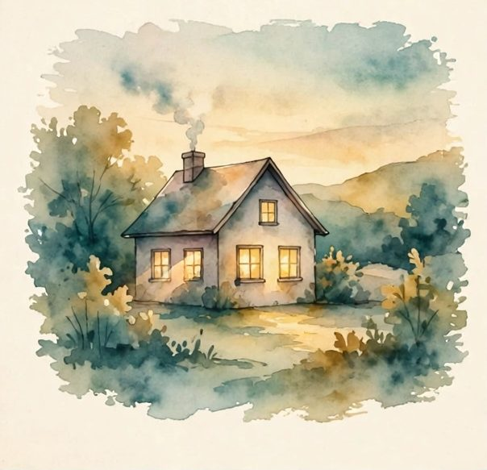
A small house at dawn, every window just lit, with one whole day implied in its quiet rooms.
If I could relive one day, the keeper writes in the register, I would not ask for a miracle first. I would ask for a morning, plain and complete, and for the attention to walk through it slowly. This house was built for that modest wish. Its rooms hold a single day from first light to last, and nothing in them claims that the day can be entered again in fact. Reliving here means remembering with full attention, in order, hour by hour, as if attention itself were a kind of return. The desk stands ready, the lamp is lit, and the chosen day is entered in a careful hand.
Most visitors arrive carrying a grand occasion in mind, a celebration or a triumph they expect to choose. The keeper listens, pours water into a glass, and lets the register stay open while the list grows quieter. Often the day that surfaces is smaller than the one they came to name. A kitchen, a road, an ordinary errand, a voice in another room going about its morning. The house does not correct them. It simply notes the day they actually describe, in the words they actually use, and waits to see whether that smaller day is the one they meant all along. The register leaves a margin beside such entries, as if the day itself might still have something quiet to add.
To choose such a day is a thought experiment, not a plan and not a power, and the house keeps that distinction plainly. No promise is made at this desk, and no day is promised back. What is offered is order, quiet, and time spent attending to what was once lived quickly. A visitor who understands that from the beginning walks the rooms differently. They stop bargaining with the past and begin, instead, to notice it. The day they came for was already generous. It only needed, at last, to be looked at properly, from its dawn to its ending. That is why the lamp at the desk is lit even in the morning, for anyone beginning the work in earnest.
2The House of One Whole Day
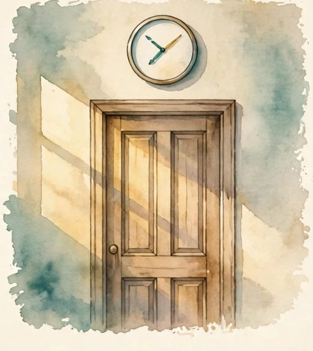
A plain clock with no numerals above a kitchen door, in clear morning light.
The house of one whole day is arranged as a day is arranged, and a visitor walks it in that order. First comes a dawn kitchen, low and gold, where a kettle and a table suggest a beginning made without ceremony. Then the morning rooms widen, the midday rooms stand in full light, and the afternoon rooms slow the step without asking permission. Toward the end, the light turns teal and thoughtful, and a night window closes the circuit. To walk the house is to feel how much a single day contains when nobody is hurrying it toward its use. A visitor learns the shape of the day with their feet first, and only afterwards with their understanding, which suits the keeper well.
Nothing in the house is labelled with an hour, and the one clock above the kitchen door carries no numerals at all. The keeper prefers it that way. A day remembered by its errands and its weather is truer than a day cut into numbered boxes too early. Visitors learn the order by moving through it, the way they once learned it by living it. Breakfast belonged before the road. The road belonged before the long afternoon. Evening belonged after the work, whether the work was finished or not. The house simply restores that plain sequence and lets it stand. The silence between the rooms is part of the arrangement too, neither empty nor wasted, but held in its proper place.
Built as one whole, the house refuses the idea that only the bright rooms matter. The corridor counts, and so does the room where nothing happened except waiting, and the hour nobody would have chosen to keep. A day is whole or it is a summary, and summaries are what memory already makes too easily. Here, at the Chosen Day Desk, the register asks for the whole span, dawn to night, in its proper weight. Visitors who walk all the rooms, including the dull ones, leave with a different day than the one they described at the door. In that completeness, the house makes its quietest argument, and makes it without raising its voice at any point along the way.
3One Day, Chosen
One day, chosen from all the others, is a severe and clarifying limit, and the house keeps it deliberately. Spread across a lifetime, attention thins until almost nothing is seen closely. Gathered onto a single day, it thickens and warms, and details that were always there come forward at last. The keeper therefore asks for one day only, not a season, not a year, not the best of a decade stitched together. A season can hide. A year can generalise. A single day has nowhere to go, and so it tells the truth about how a life was actually lived, hour by ordinary hour. One day, honestly bounded, can carry more attention than a whole era recalled in haste and left in a general haze.
The choice is not a contest, and the register is kept in that spirit from its first page. One citizen brings a wedding, another brings a wet Tuesday with a borrowed umbrella and a good soup, and the desk enters both without comment. No day is graded against another day, here or anywhere else in the house. The question is never which day deserves choosing most in the eyes of strangers. The question is which day, for this one life, still holds something unattended, something seen too quickly the first time, something that asks for a slower and more honest visit. The desk keeps no scales for such things, and the keeper would not use them if a set were brought to him.
Chosen, the day changes its standing without changing a single fact inside it. It becomes the day that will be walked carefully, the day whose weather will be recalled, whose rooms will be entered in order. The other days are not insulted by the choice. They rest on their shelves, tied and kept, available for another year and another kind of attention. The keeper closes no door on them forever. He only marks the one day now under consideration, enters it at the desk, and sets a lamp beside the register, so the work of remembering can begin in good light. Only then does the house grow quiet in the particular way it does when a true choosing has finally been made.
4The Keeper of the Chosen Day
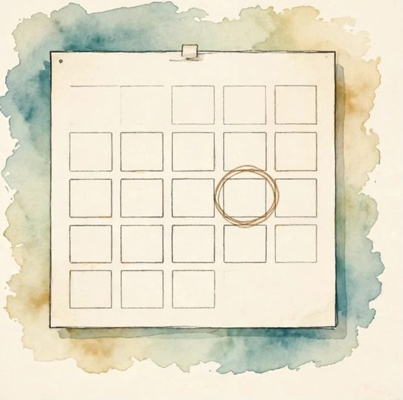
A calendar of blank squares with one day circled in pencil, and no numerals anywhere on the page.
The Keeper of the Chosen Day is not a guide to the past and not a judge of the days brought to him. He keeps a house, a desk, and a register, and he keeps them in good order for whoever arrives. His work is plain on its surface. He listens to a day being described, he asks when it began and how it ended, and he enters it without ornament. Underneath that plainness sits the real labour, which is restraint. The keeper does not improve the story, does not rank it, and does not tell the teller what the day should mean. His pencil is short, his lamp is steady, and his patience with long descriptions is a matter of record in the house.
Visitors sometimes want the keeper to decide for them, to point at one day in the calendar and settle the matter. He will not do it, though he will lay the calendar flat and hold the lamp steady while they look. Choosing, in this house, belongs to the person whose day it is. The keeper may ask a quiet question about a morning, or about who else was present, or about what the weather did. Those questions are not hints. They are ways of slowing the choosing down until the day that truly asks for attention can be heard beneath the louder candidates. What he offers instead is company at the table of the choosing, and time, which most visitors have given themselves too little of.
At the end of a visit, the keeper walks the guest back through the dawn kitchen and out by the quiet road. He does not keep the day, whatever visitors fear in the moment of leaving. The day goes home with its owner, entered now in a second register, the one carried in memory and consulted at need. The keeper remains with his desk, his blank calendars, and his shelf of hourglasses, ready for the next ordinary day to be brought in and treated, for once, as if it mattered as much as it did. Outside, the road goes on with its errands, while inside the shelf waits, unhurried, for the next name to be spoken aloud.
5Reliving Is Not Returning
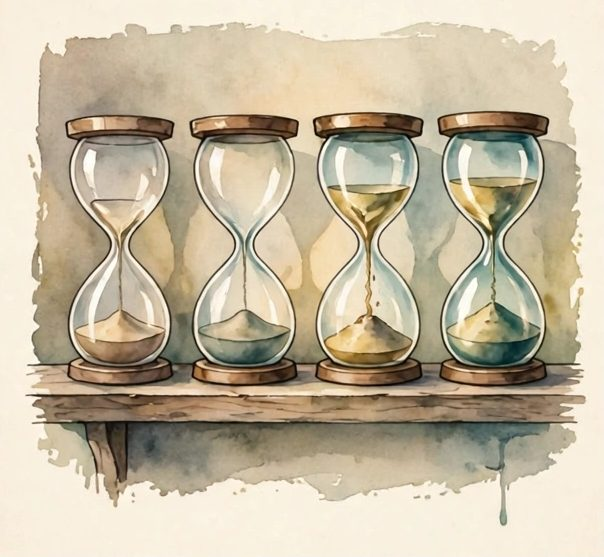
A row of hourglasses on a shelf, one still running, the rest at rest in soft light.
Reliving is not returning, and the house repeats that sentence early so that no visitor walks the rooms under a mistake. To return would be to stand again inside the morning with the day still undecided around you. To relive, in the sense this page uses the word, is to attend again in memory, in order, with everything you now know held honestly in view. The kettle is remembered, not reheated. The road is walked in the telling, not underfoot. That distinction is not a disappointment once it is understood. It is the condition that makes the whole exercise truthful. The hourglasses on his shelf make the same point silently, each one finished, each one still beautiful in its finished state.
Some arrive hoping the house will soften that condition if they state their case well enough at the desk. The keeper listens to every case with the same courtesy, and the answer remains the same for the wedding and the Tuesday alike. Nothing here sends anyone back. What the house offers instead is a second presence, slower than the first, in which a day can be noticed as it deserved to be noticed. For many visitors, that turns out to be the thing they wanted underneath the grander wish. They did not need the day again. They needed to have seen it. The offer, stated that plainly, disappoints nobody who stays long enough at the desk to hear it through to its end.
There is a dignity in a day staying where it belongs, finished and unaltered on its shelf. It does not need rescuing, and the visitor does not need to become its manager. In the register, the keeper enters relivings, not returns, and the wording matters to him. A reliving ends in the present, where the visitor actually lives and where the next day is already waiting. The past, attended to properly, sends a person forward steadier than it found them. That, the house maintains, is work enough for any single day to do. A day kept in its place can be visited cleanly, loved accurately, and left without either party having been diminished by the meeting.
6The Day Is Usually Ordinary
The day is usually ordinary, and the house has kept its register long enough to state that without hesitation. Again and again, the day a visitor settles on is not the day of the prize, the voyage, or the great announcement. It is a day when the shops were open, the weather behaved, and supper was something simple that everybody liked. At the time, nothing about it announced itself as precious. It was lived at full speed, between other days, and filed without ceremony. Only later, from a distance, does its particular quietness begin to shine in the recollection. The keeper could fill a second register with Tuesdays alone, and has sometimes said, mildly, that he would not object to doing so.
There are reasons an ordinary day carries so much, and the keeper can name them without making a theory of it. On an ordinary day, nobody was performing. The people at the table were themselves at ease, the house was in its usual order, and love, if it was present, wore its everyday clothes. Grand days are often strained by their own importance, watched and recorded and worried over while they happen. An ordinary Tuesday is free of all that. It simply proceeds, generous and unguarded, and that freedom is exactly what a later heart goes back looking for. Nothing about such a day asks to be believed in, which is part of why the memory of it can be trusted completely.
The house therefore honours ordinariness as a kind of evidence, not as a lesser choice. When a visitor apologises for the smallness of the day they have brought, the keeper shakes his head and turns the register toward the light. Small, he will say, is not the same as slight. A day when everyone was reachable, when the body worked without complaint, when nothing was known to be ending, holds more than most celebrations manage. Entered plainly and walked slowly, the ordinary day proves itself, room after room, to have been extraordinary all along. It asks for no apology and no promotion, only a chair at the desk and an hour of somebody's undivided and honest attention.
7Present a Second Time
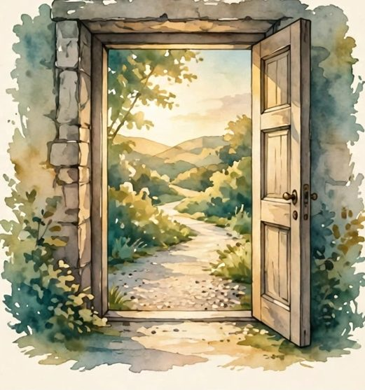
A doorway opening onto a sunlit day, with a worn path leading beyond it into green.
To be present a second time is the whole offer of this house, stated as plainly as the keeper can state it. The first time, most of us are only partly there. We are planning the afternoon during the morning, answering one conversation while holding another, and saving our attention for an importance that never quite arrives. The day passes through us as much as we pass through it. Reliving, done slowly and in order, is a chance to reverse that proportion. This time, the visitor does the arriving. This time, the day is allowed to be the larger presence in the room. Presence, in this house, is treated as a craft rather than a mood, something practised room by room until it begins to hold.
Second presence is not a sharper version of the first, and the house does not pretend the visitor becomes wiser inside the scene. The visitor brings what the years have taught, and carries it quietly, the way a guest carries a coat into a familiar house. From that position, small things change their scale. A hand on a door, a pause before an answer, light doing its slow work across a floor, all become events worth standing still for. Nothing has been added to the day. Attention has been added, and attention, it turns out, was the missing ingredient all along. The day, met that way, stops being a story told about oneself and becomes a place one is privileged to stand inside again.
The keeper watches visitors practise this in the afternoon rooms, where the pace of the house is slowest. They stop summarising and start noticing, and their accounts of the day grow longer and quieter at the same time. That is the mark of a second presence settling in. When they reach the night window, many say the day feels larger than the one they lived, though every fact has stayed the same. The keeper enters their words without correcting them. A day fully attended is larger. The register has always known it, and now they do too. The keeper nods at the word larger, enters it exactly as spoken, and underlines nothing, because emphasis would only cheapen the finding.
8If You Could Change Nothing
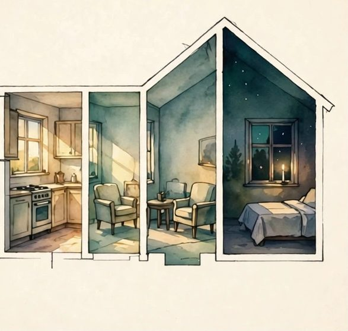
A house in cutaway, its rooms arranged in order from a dawn kitchen to a single night window.
If you could change nothing at all, the keeper asks at the desk, would you still go. It is the hardest question in the house, and it is asked early, before the walking begins, while an honest answer is still possible. Many visitors discover that their wish to relive was, in part, a wish to intervene. They wanted to warn, to soften, to arrive five minutes earlier with better words prepared. Stripped of every intervention, the wish has to stand on its own. Would the day, exactly as it was, still be worth a second presence. For some, after a silence, the answer is yes, and it is a changed yes.
Changing nothing is harder than it sounds because the imagination keeps reaching for the tools. A sentence could be unsaid so easily, a door held open, a hand kept a minute longer at parting. The house does not mock that reaching. It is, the keeper notes, a form of love arriving late with its sleeves rolled up. But the experiment holds its line with courtesy. In this telling, the day stands as it stood. The visitor walks it as a witness, not an editor, and discovers what witnessing alone can teach that managing a scene never quite manages to teach anyone. Every reached-for tool is noted at the desk, kindly and without penalty, because noting the urge is part of the experiment itself.
Those who accept the condition often report, at the night window, that the day improved without being altered. The improvement happened on their side of the glass. They saw the tiredness behind a short answer, the care inside a clumsy gesture, the effort a younger self was making with too little sleep and too much hope. None of that required a changed fact. It required only a present witness, which is what they finally became. The keeper closes the register on such evenings with unusual satisfaction. The day was left alone, and it did its work anyway. They leave the tools where they found them, on the table of a wish honestly examined and honestly, at last, set down again.
9Knowing What You Know Now
You would go knowing what you know now, and the house refuses to pretend otherwise for the sake of a cleaner story. The visitor cannot unknow the years that followed the chosen day, cannot set down the later news at the door like a parcel. That knowledge walks every room alongside them, quiet and unavoidable. It knows which of the people at the table are gone, which plans came to nothing, and which small worry of that morning turned out, in time, to be nothing at all. The experiment holds both things at once, the day as it felt then and the truth as it stands now. The house asks no one to leave that knowledge outside, however heavy it feels on the threshold of the dawn kitchen that morning.
This double vision is the ache at the centre of the house, and also its honesty. Scenes that were light at the time acquire weight when watched by someone who knows their sequel. A laugh in the kitchen is still a laugh, but it is heard now by ears that know how few laughs remained. The keeper does not ask visitors to suppress that knowledge or to perform innocence they no longer have. He asks only that they let the day be itself inside the knowing, neither crushed by it nor falsely protected from what came after it. A visitor may weep in such a room without apologising to anyone, and the keeper will simply turn the register to a fresh page.
Handled that way, knowledge becomes a form of tenderness rather than a shadow over every room. The visitor attends more gently, knowing how much was at stake in scenes that looked like nothing. They linger where they once hurried. They listen to the end of sentences they once interrupted. At the desk afterwards, many say the knowing was the price and also the gift, impossible to separate. The keeper enters their accounts in full, the sweetness and the weight together, because a register that kept only one of them would not deserve to be trusted with either. Between the two, the day itself stays serenely unchanged, being a day, and having no further obligation to the years that followed it.
10A Guest in Your Own Day
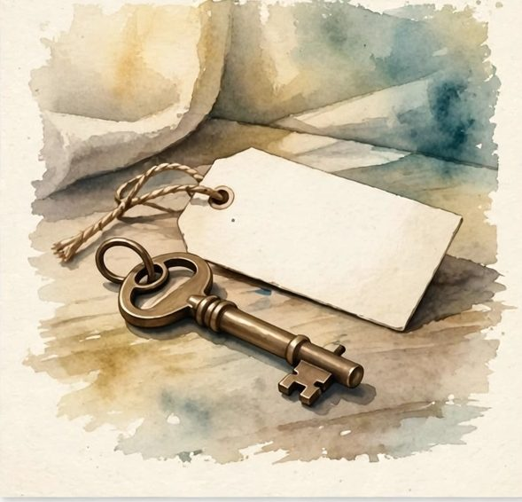
A key resting beside a blank tag on a wooden table, in warm early light.
A guest in your own day is a strange standing, and the house asks visitors to accept it with good grace. The day belongs to the person you were, who lived it without knowing you were coming to watch. That younger self made the tea, answered the door, and got the afternoon slightly wrong in places, all in honest ignorance of any audience. To arrive now as a critic would be poor manners and poor remembering besides. The keeper suggests a different posture, closer to gratitude. You are being shown a house you once lived in, by the simple fact that it was yours and is finished. The coat hook by the door is there for a reason, and most visitors understand it before the morning rooms are half walked.
Guesthood carries rules, and they are the gentle rules of any welcome house. A guest does not rearrange the rooms, does not correct the host at the table, and does not treat the other people present as furniture in a story. The other people in that day, especially, were not waiting for your attention to become real. They were living their own day at the same table, with errands and hopes the visitor never saw. Remembering them as hosts and fellow guests, rather than as supporting figures, changes the moral light of every room the visitor enters. A guest, after all, is there to receive the day, not to grade the hosting, and receiving turns out to be the harder discipline.
By the evening rooms, most visitors have settled into the courtesy of it, and the day receives them kindly in return. There is relief in not being in charge of the past. The younger self is allowed their mistakes and their merits, the other people are allowed their privacy, and the day is allowed its own order from dawn to night. The keeper, who is a guest in every day brought to him, recognises the posture and approves it in his quiet way. It is, he has written in the register more than once, the only way anyone should ever enter a finished day. The register records no verdicts from guests, only thanks, which tend to grow more specific the longer a visit has honestly lasted.
11The Day Ends Again
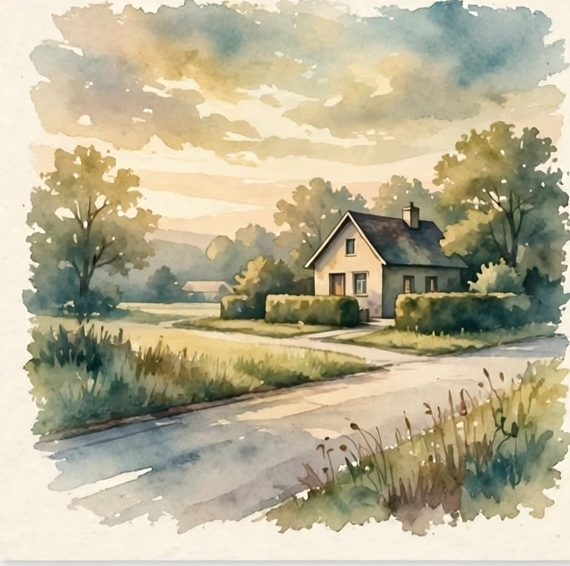
The chosen house at first light, seen from across a quiet road, its windows warm against the dawn.
The day ends again, and no house rule can spare a visitor that plain fact of the exercise. However slowly the rooms are walked, however long a visitor lingers in the best hour, the circuit of the house arrives at its night window. The light goes the way it went the first time. The last conversation ends on the same unfinished note it always ended on. Reliving was never going to repeal the ending, and the keeper states that at the desk before the walking starts, so that nobody can claim at dusk that they were promised a different arrangement by this quiet house. By then the lamps are being lit along the corridor, and the house is honest enough to let a visitor hear them being lit.
There is, all the same, something merciful in an ending that can be prepared for. The first time, the day ended while nobody was attending to its ending, and its last ordinary hour slipped away unmarked. This time, the visitor knows the night room is coming and can meet the day's close with their eyes open. They can note the final light doing its work on the walls, hear the house settle, and say, inwardly, the farewells that the first living was too busy to say. The ending is the same ending. The presence at it, this time, is entirely different, and the register counts that as no small thing.
Afterwards, the visitor steps back into the present, which is where the keeper insists the day does its real work. A relived day is not a residence, and the house locks its night door behind every guest without apology. What travels home is not the day itself but a trained attention, a steadier way of standing inside the next morning when it comes. The day ends again, yes, and takes its place back on the shelf. The living it taught continues elsewhere, in daylight, in the only tense where living has ever been possible for anyone. The shelf receives it without ceremony, between other finished days, each of which ended, and each of which is somehow still doing work.
12The First Rule of the Chosen Day
The first rule of the chosen day is written nowhere on the walls, because the keeper prefers it spoken at the desk, person to person. Attend first, and judge later, if judging is still required when the walking is done. Most visitors arrive with a verdict already forming about the day, about themselves in it, about what it proves or fails to prove concerning their life. The rule asks them to set that verdict down beside the register like a heavy bag. There will be time for it afterwards, on the road home. Inside the house, noticing comes first, and everything else waits its turn in the corridor. Spoken, it settles over the desk like a hand on the register, steadying the page before any name is entered upon it at all.
The rule sounds simple and behaves, in practice, like a discipline, because attention kept clean of verdict is rarer than anyone expects. Halfway through the morning rooms, the mind begins sentencing again, acquitting itself here, convicting itself there, keeping score across twenty years. The keeper, when he walks with a visitor, does nothing dramatic about this. He points, mildly, at the light in a room, at a table set exactly as it was, at weather nobody remembers choosing. Returned to the senses, attention steadies. The day becomes a place again instead of a case being argued by a tired advocate. The keeper trusts light and furniture more than argument, having watched both succeed where a well-made case had only made things louder.
Visitors who keep the first rule to the night window usually find that the verdict they carried in has quietly changed its terms. Some charges no longer seem worth pressing. Some credits, long withheld from a younger self and from other people at that table, are entered at last without reluctance. The keeper does not claim the rule settles anything beyond the day itself. It settles the manner of the visit, which is the part a visitor actually controls. Attend first. The house is built on that sentence, and every room in it, from dawn kitchen to night window, is arranged to help a person keep it. Everything after that, the keeper believes, is commentary, and commentary can always wait until the road home, where it belongs by rights.
13How a Day Gets Chosen
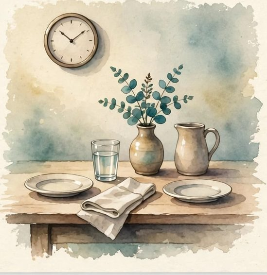
A plain table set for an ordinary Tuesday, beloved in hindsight, with simple plates and morning light.
How a day gets chosen is seldom how the visitor expects, and the keeper has stopped predicting it at the desk. The formal candidates arrive first, dressed in their importance, and are described in the language of occasions. Then, somewhere in the describing, a smaller memory interrupts, uninvited and precise. The smell of a particular kitchen. A road in unremarkable weather. Someone saying an ordinary sentence in a voice that has since gone quiet. The visitor pauses, surprised by the strength of it, and the keeper, who has seen this pause many times, turns a page of the register and waits without filling the silence. In that pause, the whole house seems to hold still with the visitor, out of respect for a recognition arriving in its own time.
A day gets chosen, in other words, less by decision than by recognition, though the house respects the forms and enters the choice formally once it is clear. The recognised day has usually been waiting for years underneath the celebrated ones, patient and uninsisted upon. It does not argue its case. It simply remains vivid when the grander days, examined closely, turn out to be remembered mostly as photographs and summaries. Vividness is the register's quiet test. The day a person can still walk through, room by room and hour by hour, is very often the day that was asking to be chosen all along. The celebrated days, by contrast, often arrive already explained, and a thing fully explained leaves very little room for a person to enter.
Once recognised, the day is chosen in earnest, and the choosing is recorded with the same care whether the day is famous or unknown to anyone else alive. The keeper writes the description the visitor gives, not the one they think they should give, and reads it back plainly. Hearing their own day stated without embarrassment, many visitors stand a little straighter at the desk. The choice is theirs, it is entered, and it is sufficient. From that moment the house treats the day as the chosen day in full, and all its rooms are opened in the proper order. The date is written, the description kept plain, and the house opens from its dawn kitchen as if it had been waiting all along.
14Not the Wedding, the Tuesday
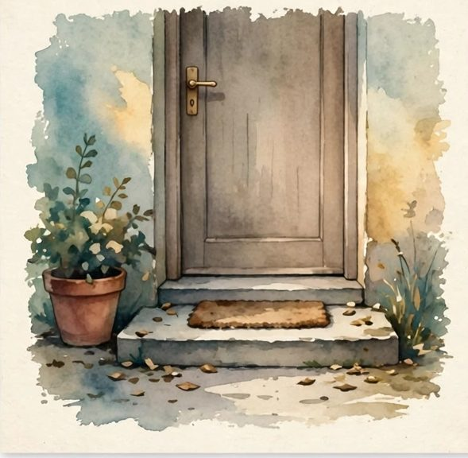
A doorstep the day before a change, ordinary and unmarked, with a mat and a potted plant in plain light.
Not the wedding, the Tuesday, could serve as the motto over the Chosen Day Desk, for all the keeper dislikes mottos. The pattern repeats too often to be coincidence. A visitor arrives intending to choose the great celebration, the day of the vows and the flowers and the gathered family in their best clothes. They describe it faithfully, and the description sounds like a report of an event attended by someone else. Then they mention, almost in passing, the Tuesday of the following week, when the cake was finished at breakfast and the new household was simply, ordinarily, underway, and their voice changes completely in the middle of the sentence. The keeper has stopped being surprised by it in public, though privately he still finds the pattern quietly wonderful to record year after year.
The Tuesday wins because life was actually happening in it at ground level, unperformed and unphotographed. On the great day, everyone was aware of the occasion and behaved, in part, for the record. On the Tuesday, nobody behaved for anyone. The errands were real, the jokes were unrehearsed, and the people present moved around one another with the ease of a shared kitchen. That ease, it turns out, is what memory keeps best and what the heart, years later, most wants to stand inside again. The house does not argue visitors into this conclusion. The register merely shows, entry after entry, how often the conclusion arrives by itself. That texture cannot be staged afterwards or borrowed from the account of a grander occasion, however splendid that occasion may have been in itself.
None of this diminishes the wedding, and the keeper is careful to say so when a visitor looks stricken at their own preference. The great day did its great work, in public and in law and in memory. The Tuesday did a different work, in private and in practice, showing what the great promises looked like when they were simply being kept over toast and errands. To choose the Tuesday is to honour the keeping over the promising, the lived texture over the declared occasion. The register enters it without a flicker of surprise, in the same hand it uses for every day brought honestly to the desk. The Tuesday, entered, takes its place in the house with a dignity that needs no defending from anyone, least of all from its owner.
15The Day Before Everything Changed
The day before everything changed holds a particular charge in the register, and visitors bring it to the desk more often than they first intend to. It was, by every account, an unremarkable day at the time, because nobody living it knew it was a last anything. The routines ran as routines do. Supper was made, a small disagreement came and went, plans were spoken of in the future tense by people who believed the future would keep its usual shape. Only afterwards did the day acquire its border, becoming the final page of one chapter and, in memory, almost unbearably well lit along its ordinary edges. Even the light that day, the register notes, was ordinary light, doing ordinary work on familiar walls, unaware of any border approaching it.
To relive such a day is to walk through rooms that do not know they are last rooms, and the house treats that unknowing as something tender rather than something to be corrected in the telling. The people in it deserve to keep their innocence of the sequel while they make their tea and argue gently about nothing. The visitor, who knows, carries the knowledge the way the house teaches, quietly and without laying it on any scene like a cloth. Knowing everything, they attend to a day that knew nothing, and the distance between those two states is exactly where the ache and the honour of the visit both live.
The keeper notes that visitors rarely want to change this day, even when they arrived at the house speaking the language of intervention. Standing inside its ordinariness, with its border visible only to them, most find that the day needs nothing from them except witness. They watch the unknowing hours with a respect they can hardly explain at the desk afterwards. It was the last day of the old world, and it spent itself on groceries and weather, like any day. Entered in the register in a steady hand, that plain fact is allowed to be as moving as it plainly is. They leave by the quiet road carrying the day exactly as it was, which is to say unknowing, ordinary, and complete in every particular.
The Chosen Day Desk
One desk receives all correspondence for this house — questions, corrections, and word of any day a visitor would relive: the choosing of it, its hours, its people, the one thing they might change. It is read in the order it arrives.
16A Day With Someone Gone
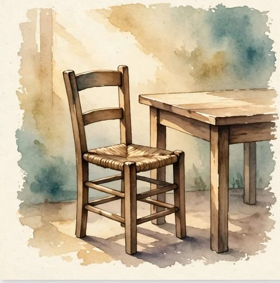
An empty chair kept at a table in kind light, its place set and its cushion still holding a shape.
A day with someone gone is among the most common choices in the register, and the house receives it with a plainness that many visitors find relieving. No special ceremony is performed at the desk. The day is entered like any other, the rooms are opened in their order, and the person who is gone is simply there in it, at their place, in their ordinary clothes, alive in the only tense memory honestly offers. The keeper does not speak of them in the hushed register reserved for monuments. They were not a monument in that day. They were at the table, reaching for things, mid-sentence, entirely themselves. That plainness is deliberate, because grief, in this house, is never asked to perform itself for the improvement of the record.
What visitors want from such a day is seldom dramatic, once they are inside it. They do not, most of them, want a grand farewell scene that never happened in fact. They want the ordinary company again, the person's way of filling a doorway, their unremarkable remarks over a meal, the sound of them moving in another room while something cooked. Presence, the register teaches, was the substance all along, and presence is what a careful reliving restores to attention. The gone person says nothing new in the telling. They say the old things, and the old things, attended to fully, turn out to have been carrying more love than anyone had time to notice.
The day ends again, for this day most of all, and the house does not soften that at the night window. The visitor leaves the person in their day, in their year, where they belong and where they were happy to be ordinary. What returns to the present with the visitor is not company but knowledge, the certain and usable knowledge of how much an unremarkable hour with a person can hold. The keeper watches such visitors walk a little more slowly toward their own tables afterwards. That, he enters in the register without embellishment, is the day doing its work where work can still be done. The day, meanwhile, stays where such visitors left it, lamplit and unhurried, with a place still set at a table in kind light.
17The Last Ordinary Day
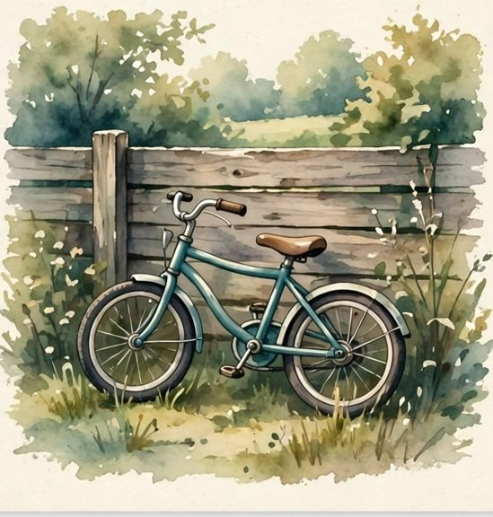
A child's bicycle leaning by a fence, a whole childhood day implied in its stillness and light.
The last ordinary day is a close relation of the day before everything changed, but the register keeps them apart, because the feeling of them differs. This is the final day on which a household, a friendship, a town, or a body was still in its accustomed order, before the move, the parting, the blow of events, the slow or sudden rearrangement. Nobody marked it, because ordinariness does not announce its own endings. It simply ran its hours, complete and unselfconscious, and then the order it belonged to closed behind it like a door nobody heard shut at the time it was shutting. Its hours had been repeated so often that they felt like nature rather than arrangement, as reliable and as unnoticed as the weather indoors.
Visitors choose this day to honour the order itself as much as any person in it. They walk its rooms naming the arrangements that once felt permanent. The shop that was always there, the route walked without thinking, the chair that held its sitter every evening at the same hour. Reliving strips nothing of its dignity. If anything, the attention restores scale to things that routine had shrunk. A whole way of living, the visitor understands by the afternoon rooms, had been resting on these small repeated acts, and the acts had been performed the last time with the same care as the first time, which seems, in retrospect, exactly right.
At the desk afterwards, the keeper discourages one thing only, and gently, which is the urge to call the day sad. It was not sad when it was lived, and the register prefers accuracy to atmosphere. It was ordinary, and complete, and it ended the way all days end, without knowing its position in the story. The sadness belongs to the present, which is entitled to it and may keep it. The day itself is entered as it was, sun up, work done, supper made, lights out, a good plain day at the end of a long run of good plain days. Entered so, it can be visited without wincing, which is more than can be said for many grander days in the same long register.
18A Day From Childhood, Whole
A day from childhood, whole, is a choice the keeper handles with special care, because childhood days are so often remembered in fragments polished bright by repetition. The house asks for a whole one, morning to night, with its boredom and its waiting and its long unexplained afternoons left in. Chosen that way, the day is usually long, because childhood days were long in a manner adult days have forgotten. Time had not yet learned to hurry. An afternoon could hold a season's worth of weather, several inventions, a quarrel, a reconciliation, and a meal that seemed to arrive from an enormous distance, all before the light even thought of changing.
The child in that day was living their own day, and the house holds the visitor to that courtesy even here, perhaps especially here. The younger self is not a symbol and not a lesson waiting to be collected by an adult with a register. They were a person at their work, which happened to be play, weather, appetite, and the serious study of a household's moods. The adult visitor walks beside that work as a guest, keeping adult knowledge quiet, the way the first rule requires. What surprises most visitors is how competent the child was, how much of the day they managed, and how little of it needs an adult's apology to stand up straight.
By the night rooms, a whole childhood day has usually done something restorative to proportion. The visitor remembers being small inside a world run by taller people, and remembers also that the world, at ground level, was rich past any later summary of it. Smells come back with authority. Sounds carry across decades undistorted. The keeper enters the account without nostalgia's varnish, as a record of an actual day once lived by an actual person who grew up to bring it, carefully, to this desk. Shelved whole at last, the day keeps its morning and its night together, as it always deserved to have them kept. The child's own account, could it be entered, would likely be shorter and would probably concern itself chiefly with supper and the weather.
19The Day I Was Happy Without Noticing
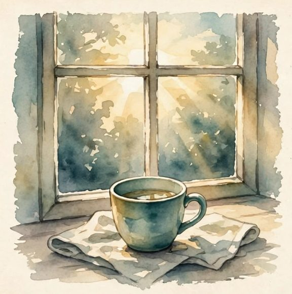
A window with afternoon light and a cup left mid-day, the garden beyond in unnoticed gold.
The day I was happy without noticing may be the most instructive entry in the whole register, and the keeper says so at the desk without hedging. Nothing in the day announced its own happiness while it was being lived. There was no occasion, no achievement being celebrated, no difficulty overcome that morning. The happiness was distributed evenly across ordinary hours, in working order, in company that asked nothing unusual, in a body at ease and a table that held enough. It ran underneath the errands like good weather under a journey, noticed only later, when later days supplied the contrast and the memory suddenly stood out in the mind, lit from behind.
Visitors find this day by its afterglow rather than by any single scene, and unwinding it hour by hour is delicate work. Each room, entered, seems at first to contain nothing special, and that is the point the house is built to make. Happiness, in this day, was not an event but a condition, the condition of everything being, for once, simultaneously unbroken. The people were reachable, the work was proportioned, the small pleasures arrived on schedule and were received without grasping. Reliving it teaches a recognition rather than a technique. The visitor learns the shape of an unnoticed good day, so as to know one, perhaps, while standing inside it next time.
The keeper closes such accounts with an entry he has written many times and never tired of writing. The day is recorded as happy, in full, on evidence supplied entirely by ordinariness, and the visitor's name is set beside it without commentary. There is no moral drawn in the register about seeking or failing to seek such days. The house is not in the business of morals. It only keeps the record straight, that happiness once visited this life at full strength and passed unrecognised, wearing everyday clothes. To have recognised it at last, even years later, is entered here as a form of thanks. Later still, the memory may teach the present how to recognise its own good days while they are still wearing their everyday clothes.
20Choosing Without a Ranking
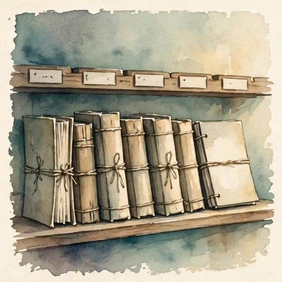
A shelf of candidate days, tied blank journals standing in a row, each kept without a mark of rank.
Choosing without a ranking is the discipline this hall of the house ends on, and it is harder to practise than to approve of at the desk. The mind, set to choose one day, immediately builds a league table and begins seeding its favourites, the great ceremony against the quiet Tuesday, the triumph against the last ordinary morning. The keeper asks visitors to dismantle the table before entering a single room. Days are not competitors. Each was the whole of life while it was being lived, twenty-four hours in which a person was fully at stake, and that full stake is identical in the grandest and the plainest entry in the register.
Without a ranking, the choosing grows more honest and, most visitors find, considerably quicker. Freed from defending a favourite, they can admit which day actually stays vivid, which day they can still walk hour by hour, which day their attention returns to unbidden while washing dishes or waiting for a train. That day may sit low in any public table of a life's events, and it does not matter here in the slightest. The register has no column for importance as the world counts importance. It has a column for the day, a column for its hours, and space for an honest account of both, kept level. Attention, unranked, goes where it is genuinely summoned, and its judgements, when it bothers to make them, prove surprisingly easy to live with afterwards.
The keeper shelves the chosen day among the others at the end of the visit, and the shelving makes the doctrine visible. The journals stand in a row, the great and the small sharing a shelf and a quality of light, tied in the same manner by the same careful hand. No spine is gilded above the rest. A visitor leaving the house past that shelf understands the first two halls entire. One day was chosen, attended, and honoured in full, and not one other day was diminished by the honour. The walk home, the keeper likes to think, is made in that same spirit toward the day currently being lived.
21The Day That Asks to Be Chosen
Some days do not wait to be ranked or summoned. They return on their own, in the middle of washing up or walking to a shop, with a particular light intact and a room arranged exactly as it was. The house teaches that such persistence deserves attention, not as proof that the day was the greatest, but as evidence that something in it remains unfinished in the telling. It asks to be chosen the way a familiar street asks to be walked again, quietly and without advertisement, until a person finally stops and listens to what has been asking for years. The keeper records this without hurry, in a hand that has learned to leave generous margins around every remembered hour.
This asking is rarely dramatic. It may be the smell of rain on a coat, a name half heard in a crowd, a tune that belonged to one afternoon and no other. Keeper and visitor alike learn to treat these small returns with respect, because they often point past the celebrated dates toward an hour that was never properly noticed. The day that asks is not demanding a verdict. It is offering itself for a slower look, for the kind of attention that was too hurried or too young to be given when the hour was first lived through in full. Visitors carry the thought with them into the next room, where the light and the furniture seem to agree quietly.
To answer is not to obey blindly. A visitor may sit with the asking day at the desk, turn it over hour by hour, and still choose another. What matters is that it was heard. Many people discover, in that hearing, why the memory kept returning: an ordinary kindness, a face at a window, a quiet in the house that has not quite come again. Whether chosen or gently set aside, the day has done its work by being regarded at last, and the register records it with the same care given to any other candidate. It is a small lesson, patiently kept, and the house trusts small lessons to do their work in their own time.
22Other Days, Considered Kindly
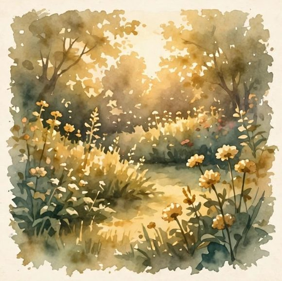
A garden at the hour when happiness went unnoticed, gold falling everywhere across the paths and the uncut grass.
For every day that is chosen, others stand nearby and are not. The house asks that they be considered kindly, not dismissed as runners up in a contest they never entered. Each was lived once, in full, by a person who did not know which dates would later matter. To look back at them with contempt for their plainness would be to misunderstand the whole exercise, which teaches that value was often present precisely where attention was not. Kindness toward the unchosen days is part of choosing the one day well and without arrogance. The register makes no flourish of it, only a clear entry, a date remembered, and a page turned with clean hands.
Some of these days held their own quiet merits: a journey completed without incident, a meal shared without ceremony, an evening when nothing went wrong and nobody thought to be grateful for that mercy. Others were difficult and remain difficult to revisit, yet they too carried hours worth honouring, a joke in a corridor, a hand steadied on a stair. The keeper encourages visitors to name at least one good thing in each day they pass over, not as consolation, but as accurate accounting. A life is not improved by narrowing its past to a single shining entry in a ledger. No one at the desk presses the point further, because some truths settle better when they are allowed to arrive unannounced.
When the choosing is done, the other days return to their places on the shelf without grievance. They were not rejected as worthless; they were simply not the day this visitor needed to walk through slowly, this time. Another year might bring another choosing, and the register makes no rule against returning to look again. What the house insists upon is tone: no day that sheltered a living person should be spoken of as wasted merely because it was not selected. Considered kindly, the unchosen days form the faithful background against which the chosen one can be seen clearly. Outside the window the ordinary world continues, unaware that one finished day is being given this much faithful and tender attention.
23Only One, and That Is the Point
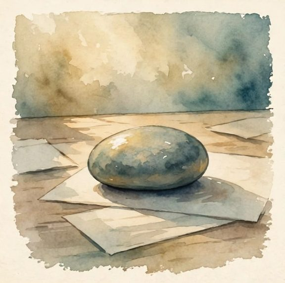
A single smoothed stone resting on a desk, kept as the chosen token of the one day.
The limit is what gives the exercise its shape. Only one day may be chosen, not because other days lack worth, but because attention, like a room, becomes clearer when it is not asked to hold everything at once. To walk a single day hour by hour, noticing the kettle and the coat hooks and the light at noon, requires a boundary. Without it, memory drifts into a general survey of a life, pleasant perhaps, but too wide to teach anything particular. The house holds the limit calmly and explains it to every visitor who arrives hoping to negotiate for two, or five, or a whole summer. The keeper records this without hurry, in a hand that has learned to leave generous margins around every remembered hour.
That sternness is not cruelty. It mirrors how living itself proceeds: one morning at a time, one table, one conversation that cannot be repeated in the same breath as another. By accepting only one, a visitor practises the discipline the day is meant to teach, which is presence within a finite stretch of hours. The stone on the desk in the plate is small enough to close a hand around. Its size is the lesson. A chosen day should be holdable in attention from dawn to night without being thinned into summary or stretched into legend. Visitors carry the thought with them into the next room, where the light and the furniture seem to agree quietly.
In the end most visitors stop arguing with the limit and begin to be grateful for it. Choosing one day makes the choosing honest; it forces the questions that abundance would let them avoid. What mattered most. Who was there. Which hour still warms the hands to remember. And when the walk is complete, nothing prevents a person from carrying the same close attention into the present, where another single day is always unfolding. The point was never the restriction for its own sake. It was to learn, within one boundary, how much a day can contain when it is finally given a full and unhurried regard. It is a small lesson, patiently kept, and the house trusts small lessons to do their work in their own time.
24The Choice Says Who You Are Now
A chosen day is chosen from the present, by the person who stands here now, and that fact colours every entry in the register. The wedding may be selected at twenty five for its splendour and at sixty for the parent who stood at its edge, alive and laughing, hardly noticed in the photographs. The day has not changed. The chooser has. The house does not treat this as a flaw in the method. It treats it as the method itself: reliving in the telling reveals as much about the teller today as about the hours being told, and both truths deserve a clear eye. The register makes no flourish of it, only a clear entry, a date remembered, and a page turned with clean hands.
That is why no two visitors defend their choices in the same words, even when by chance they name a similar kind of day. One speaks of gratitude, another of an unsaid sentence, another simply of a kitchen before the house grew quiet. The keeper listens for the present tense hidden inside the past tense, the current hunger that sent this person searching backward. Naming it plainly does not diminish the day. It honours it, by admitting that memory is not a warehouse visited by strangers, but a room in the house where the living still stand and breathe. No one at the desk presses the point further, because some truths settle better when they are allowed to arrive unannounced.
There is no shame in this accounting, and the desk keeps no column for motives judged wanting. To choose a day because you are lonely now, or grateful now, or finally old enough to see your parents as young, is to choose honestly. The exercise asks only that the visitor know it is happening. Then the walk through the chosen hours can be undertaken without pretence, and what is learned can be trusted, because it was learned by the whole person who arrived, not by an imagined neutral witness. The choice says who you are now, and saying it aloud is where the day begins to do its present work. Outside the window the ordinary world continues, unaware that one finished day is being given this much faithful and tender attention.
25Dawn of the Chosen Day
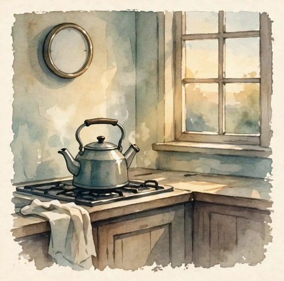
A dawn kitchen with a kettle just beginning to steam, first light standing pale at the window.
The chosen day begins before anyone in it knows it will matter. Dawn comes in the ordinary way, over rooftops and fences, finding the kitchen cold in the corners and the kettle still to be filled. In the telling, a visitor is asked to linger here longer than anyone lingered then, to notice how unremarkable the first light was and how faithfully it arrived anyway. Nothing in the hour announced significance. That is precisely why it repays attention now: it shows the day being itself, unperformed, before the people in it had arranged their faces for whatever they expected the hours to bring. The keeper records this without hurry, in a hand that has learned to leave generous margins around every remembered hour.
There is a particular tenderness in beginnings that did not know they were beginnings. The tap runs, a chair scrapes, a window shows a sky deciding on its weather. Whoever rose first that morning moved half awake through familiar rooms, carrying out small tasks that have since vanished from every other account of the day. The house restores those tasks to their dignity. Reliving hour by hour means refusing to skip to the famous moment, because a day is not a headline with filler around it. Its dawn was lived at full length by real people, and the telling owes it the same full length in return. Visitors carry the thought with them into the next room, where the light and the furniture seem to agree quietly.
Standing in this first hour, knowing what the rest of the day holds, requires a quiet discipline. The future must not be allowed to flood the kitchen and turn every plain object into an omen. The kettle was a kettle. The light was light. Let them be so, and the dawn keeps its innocence while the visitor keeps the knowledge, held apart like a letter in a pocket that will not be opened yet. That separation, practised here at the start, governs the whole walk through the house, from this pale window to the night window where the day will finally be allowed to end again. It is a small lesson, patiently kept, and the house trusts small lessons to do their work in their own time.
26The First Hour, Unremarkable Then
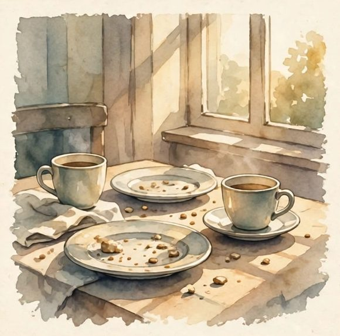
A breakfast table exactly as it was left, plates and cups standing in clean morning sun.
Almost every chosen day contains a first hour that nobody thought worth recording, and almost every visitor, given the walk, ends up defending it warmly. It held no achievement and no crisis. Someone ate without tasting much, someone searched for keys that were in a coat all along, ordinary sentences were exchanged about weather and errands. Then, the hour passed beneath notice because a hundred like it had passed before. Now, its very sameness has become rare, because the kitchen, the voices, and the unhurried assumptions of that morning belong to a arrangement of life that exists nowhere else except in this telling. The register makes no flourish of it, only a clear entry, a date remembered, and a page turned with clean hands.
The house asks visitors not to gild this hour in retrospect. It was unremarkable, and admitting so is a form of accuracy the keeper values more than sentiment. What has changed is not the hour but the scarcity of everything it contained: the particular tap of a spoon against a cup, the radio murmuring to no listener in particular, the ordinary health of people moving about a room without thinking of their bodies at all. These things were free and daily once. Remembered properly, they explain why so many chosen days turn out to be plain ones, their first hours plainer still. No one at the desk presses the point further, because some truths settle better when they are allowed to arrive unannounced.
To spend attention here is to learn the method of the whole hall. Do not hurry toward noon. Let the toast cool as it cooled, let the small talk be small. A visitor who can stay present through an unremarkable hour without demanding that it perform has understood what reliving in the telling actually requires. The rest of the day will offer louder gifts, but none more instructive than this: a stretch of time that asked for nothing, received nothing, and yet, looked at a second time with full attention, turns out to have been quietly carrying the entire flavour of a life as it was then lived. Outside the window the ordinary world continues, unaware that one finished day is being given this much faithful and tender attention.
27Breakfast, Exactly as It Was
No dish may be improved in this room. Breakfast is served exactly as it was, with the same bread, the same jam, the same egg cooked a minute past how anyone would have chosen it on a better morning. The rule sounds austere until its purpose becomes clear: improvement is a form of leaving. To upgrade the meal in memory is to step out of the day and into a later kitchen where tastes were refined by years the people at that table had not yet lived. The house keeps the original plate in front of the visitor, plain and faithful, and asks for company rather than correction. The keeper records this without hurry, in a hand that has learned to leave generous margins around every remembered hour.
Exactly as it was also means exactly who was there, in the chairs they actually occupied, eating at their actual speeds. One person read, one talked through a mouthful, one had already mentally left for the day ahead. These details resist the tidier breakfasts of fond invention, where everyone glows and converses in turn. The keeper prefers the record to the portrait. Crumbs fell. A cup was refilled without thanks being said aloud, though thanks, in that house, may have lived inside the refilling itself. Attention, arriving late, is allowed to notice such things at last without rewriting the scene that contains them. Visitors carry the thought with them into the next room, where the light and the furniture seem to agree quietly.
Visitors often find this modest room unexpectedly moving, and the keeper is not surprised. Breakfast is where a day shows its working arrangements, who pours, who clears, who is excused without comment because their hurry is understood by all. To sit at that table a second time in the telling, eating nothing, changing nothing, is to practise a respect that larger hours sometimes make harder. When the plates are finally cleared, exactly as they were cleared then, the visitor rises with a standard for the rest of the walk: remember first, judge later, and let what was ordinary keep the dignity of having been enough at the time. It is a small lesson, patiently kept, and the house trusts small lessons to do their work in their own time.
28The Morning Gets Going
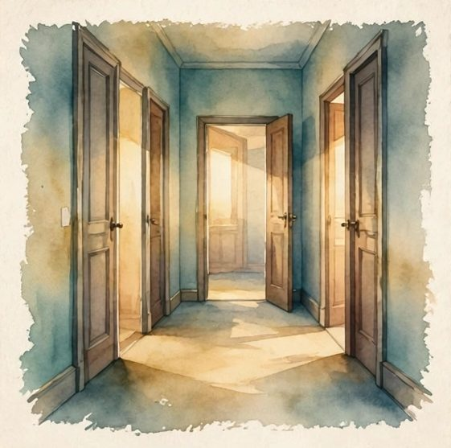
A hallway at morning with doors opening one by one, light gathering along the floorboards toward the stairs.
By the second or third hour the day has found its pace. Doors open and close with purpose, coats come off hooks, lists are made and immediately half forgotten, and the house fills with the particular music of people beginning things. In the telling this movement matters as much as any destination the morning was heading toward, because most of a life is spent exactly here, in the getting going. The visitor walks the hallway slowly, against the traffic of memory, noticing how confidently everyone moved through rooms they assumed would always be arranged this way, among people they assumed would always be within calling distance. The register makes no flourish of it, only a clear entry, a date remembered, and a page turned with clean hands.
There is energy in this hour that later hours rarely match, a belief, never stated, that the day is still mostly ahead and therefore still mostly possible. Plans spoken at this pitch carry a morning brightness even when their subjects are mundane: a visit to be made, a letter to post, a repair finally attempted. Knowing how some of those plans turned out is the visitor's private burden in this room, to be carried quietly. The morning itself knew nothing of outcomes. It dealt in intentions, and the house insists intentions be honoured as they were felt then, not graded by what the afternoon eventually delivered. No one at the desk presses the point further, because some truths settle better when they are allowed to arrive unannounced.
When the front door has opened and shut its customary number of times and the hallway stands briefly empty, the walk pauses. This brief emptiness is part of the record too, the house holding its breath between departures. A visitor learns to value such in between moments, because they frame the comings and goings that gave the day its shape. Then the telling moves on, as the morning moved on, gathering speed and errands and sunlight, toward a middle of the day that at this early hour still seemed distant, theoretical, and generous with time that had not yet begun to shorten. Outside the window the ordinary world continues, unaware that one finished day is being given this much faithful and tender attention.
29Midday, in Full Light
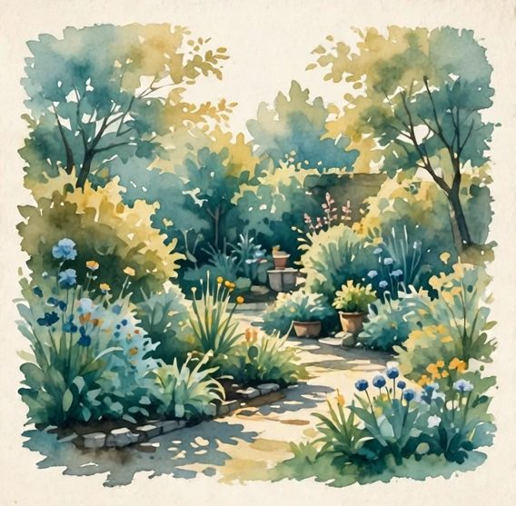
A midday garden in full light, the shadows drawn short beneath the table and the trees.
Midday shows the chosen day without flattery or shadow to hide in. The light is direct, the colours are at their plainest, and everything is more or less what it appears to be: a garden at its warmest, a street at its busiest, a table laid for a meal nobody considered an occasion. The house loves this hour for its honesty. Dawn can lend mystery and evening can lend tenderness, but noon lends accuracy, and a reliving that hopes to be truthful needs at least one stretch where the day stands in full light and is simply, completely, itself. The keeper records this without hurry, in a hand that has learned to leave generous margins around every remembered hour.
In many chosen days, remarkably little of importance happens at noon, and the keeper records that fact without disappointment. People ate, rested, continued tasks begun in the morning, spoke about nothing that survived in anyone's memory. Yet to stand in this light a second time is to feel the day at its fullest extension, the point farthest from both its beginning and its end, when the hours seemed plentiful and the people in them were entirely absorbed in being alive inside an ordinary present. That absorption, invisible then, is the treasure the telling returns to collect, carefully, without disturbing the scene that holds it. Visitors carry the thought with them into the next room, where the light and the furniture seem to agree quietly.
Visitors are advised to take this hour slowly despite its brightness, because impatience at midday is the oldest habit the exercise hopes to correct. There will be an afternoon, and it will slow, and evening will come exactly on schedule whether it is watched for or not. For now the garden is in full light and the shadows are short. Staying inside that simple fact, without reaching forward or back, is a rehearsal for a larger skill the house quietly teaches in every room: how to inhabit the hour currently being lived, in one's own present, with the same undivided attention being practised here on a day long finished. It is a small lesson, patiently kept, and the house trusts small lessons to do their work in their own time.
30The Afternoon Slows
Every day the house contains has an afternoon, and in nearly all of them something in the pace relents. The morning's errands lose their urgency, light leans lower across the rooms, and people begin to do the same tasks at a tempo that admits conversation, pauses, and cups made mostly as an excuse to sit down. In the telling, this slowing is not treated as the day running out of purpose. It is treated as the day changing key, offering a different kind of attention from the one that carried its earlier hours, softer at the edges and often kinder to notice in detail. The register makes no flourish of it, only a clear entry, a date remembered, and a page turned with clean hands.
Visitors frequently recognise, in this room, the exact quality they came looking for without having named it. Not an event but a tempo: a house at mid afternoon, someone resting their eyes, a garden giving back the heat it gathered at noon. Lives since then may have grown faster, noisier, more efficiently filled, until afternoons like this one became difficult to locate anywhere except in memory. The house does not scold that later speed. It simply keeps one slowed afternoon intact in the telling, so a visitor can remember what the tempo felt like from inside, in the body, hour by unhurried hour. No one at the desk presses the point further, because some truths settle better when they are allowed to arrive unannounced.
The light will keep lowering, and the walk does not pretend otherwise. But there is a discipline in not rushing the afternoon toward evening merely because evening is known to be coming. Let the curtains move. Let the task be finished badly or left for a tomorrow that, inside this day, everyone still trusted would arrive in the usual way. Reliving respects that trust by staying at the afternoon's own pace until it yields, naturally, to the next hour. What is learned here travels well beyond the chosen day: that slowness is not emptiness, and that an hour fully inhabited need not justify itself with results. Outside the window the ordinary world continues, unaware that one finished day is being given this much faithful and tender attention.
The Chosen Day Desk
One desk receives all correspondence for this house — questions, corrections, and word of any day a visitor would relive: the choosing of it, its hours, its people, the one thing they might change. It is read in the order it arrives.
31Small Hours, Large Now
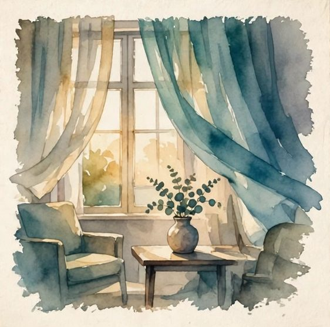
An afternoon room with curtains moving in a warm draught, the light slowed and the furniture at rest.
The phrase belongs to the afternoon in this hall, to those modest stretches between larger events that expand, in memory, far beyond the minutes they occupied. A quarter hour on a step with a cup. A short walk taken for air rather than destination. A page read while waiting for a kettle or a person. Then, these were the day's punctuation, barely noticed between its sentences. Now they have become, for many visitors, the sentences themselves, because what filled them, ease, company, unguarded quiet, turned out to be the substance that later life would measure itself against and often find missing. The keeper records this without hurry, in a hand that has learned to leave generous margins around every remembered hour.
Size in memory is not assigned by importance as the world counts it. Promotions and ceremonies can shrink to a line, while a small hour spent shelling peas at a table can grow until it holds a whole household: who sat where, what was said about a neighbour, how the light fell on hands that were younger and steadier. The keeper does not correct these proportions. The house was built on the understanding that the heart keeps its own accounting, and that a reliving faithful to anything must be faithful to that accounting first, letting large hours be large regardless of their clock length or their public significance. Visitors carry the thought with them into the next room, where the light and the furniture seem to agree quietly.
Visitors leaving this room are asked to carry one practical resolution, though the house phrases it as an observation rather than an instruction. Small hours are occurring today as well, in the visitor's own present, equally easy to step over on the way to larger appointments. Having watched a minor stretch of a finished day grow, in the telling, to its true dimensions, a person may return home better able to recognise the same quiet magnitude while it is still happening. That recognition, practised in the present, is among the most useful things a day that cannot return can still generously give. It is a small lesson, patiently kept, and the house trusts small lessons to do their work in their own time.
32The Hour I Would Linger In
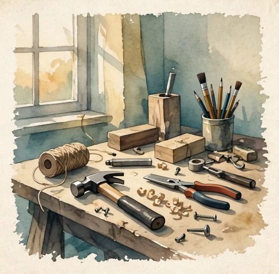
A workbench in the small hours of the afternoon, tools laid down at rest in a bar of sunlight.
Ask a hundred visitors which hour they would linger in and almost none name the day's climax. They name a stretch of it: late morning in a garden, the hour after lunch when nobody had yet left the table, a walk at the light's turning. The house provides this room for that answer and treats it with complete seriousness. Lingering is not idleness here. It is the deliberate decision to give one hour more attention than chronology allots it, to stay seated when the telling could move on, and to let a single piece of the day be fully inhabited in memory at last. The register makes no flourish of it, only a clear entry, a date remembered, and a page turned with clean hands.
What makes an hour worth lingering in is seldom what made it pleasant the first time, though pleasure may be part of it. Visitors speak instead of completeness: a moment when everyone who should have been there was there, when nothing was yet broken or known to be ending, when the ordinary arrangement of a life stood whole for sixty unremarked minutes. To linger is to acknowledge that wholeness without trying to extend it past its natural borders. The hour ends even here, in its own dedicated room. The visitor simply refuses, this once, to be the person who hurried through it without looking up. No one at the desk presses the point further, because some truths settle better when they are allowed to arrive unannounced.
The keeper notes each visitor's chosen hour in the register without commentary, and the list, read over years, forms a quiet portrait of what people actually value when value is measured by attention rather than achievement. Kitchens outnumber ballrooms. Weekday afternoons outnumber ceremonies. When the lingering is done and the walk resumes toward evening, something has been settled that the rest of the house depends upon: the visitor now knows, precisely, what all this remembering was for. Not the whole day equally, though the whole day is honoured, but this hour, held at last at its proper size, neither rushed nor gilded. Outside the window the ordinary world continues, unaware that one finished day is being given this much faithful and tender attention.
33Evening Comes On Schedule
Evening does not consult anyone. It arrives in the chosen day exactly as it arrived the first time, softening the light, lengthening the shadows, and beginning the gentle work of closing things down. The house finds a steadiness in that reliability worth remarking upon, because so much else in a remembered day can feel negotiable in the telling. This cannot. Dusk kept its appointment then and keeps it now, in memory, indifferent to who wishes the afternoon had lasted or who dreads what the night will confirm. The walk accepts the schedule as the day itself accepted it, without argument and without surprise. The keeper records this without hurry, in a hand that has learned to leave generous margins around every remembered hour.
There is, in most chosen days, a recognisable hour when the household turns: lamps are lit, outdoor tasks are abandoned half done, cooking or clearing begins, and voices take on the lower register of people who are finished with performing the day for the outside world. Visitors cherish this turning, perhaps because it shows the people they love at their least guarded, in clothes softened by wear, speaking about supper and tomorrow in the plainest language of their lives. Evening, remembered carefully, restores a domestic truth that grander hours often dress up or leave out entirely. Visitors carry the thought with them into the next room, where the light and the furniture seem to agree quietly.
The visitor walks this stretch knowing the day is now mostly spent, and the house asks that this knowledge be carried as the people then carried their own tiredness: practically, without drama. There were still hours to come, a meal, talk, the night itself, and they deserve the same attention the morning received. Evening coming on schedule is not an ending arriving early. It is the day keeping faith with its own shape, and teaching, to anyone attending closely, that a good day, like a well kept house, is not diminished by being gradually and punctually brought to its close. It is a small lesson, patiently kept, and the house trusts small lessons to do their work in their own time.
34The Last Light of That Day
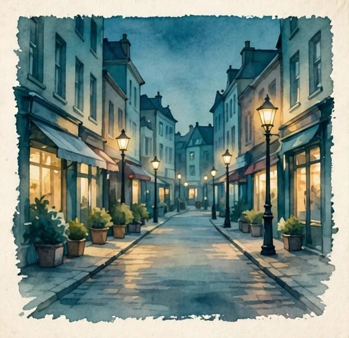
An evening street in teal dusk, lamps coming on one by one above the quiet pavement.
There is a brief period, in the telling as in the living, when the day is still visible but no longer usable, and the light has the quality people reach for years later when they try to explain what they have lost. It falls level across gardens and streets, it gilds the plainest fence, and it asks nothing in return except to be seen before it goes. The house stations the visitor here deliberately. Of all the hours in the chosen day, this is the one that most clearly shows how beauty and ending can occupy the same few minutes without either cancelling the other out. The register makes no flourish of it, only a clear entry, a date remembered, and a page turned with clean hands.
Knowing it is the last light changes how a visitor stands in it, and the house does not pretend that knowledge away. The people in the day saw this same light and thought, at most, that it was pretty, or that lamps would soon be needed. The visitor sees it as a boundary. Both seeings are true, and holding them together is the central skill the whole experiment teaches. Gratitude sharpens at this hour, not into panic or grasping, but into a clear, almost physical attention: the exact colour on a wall, the exact temperature of air moving through a window left open a little too long. No one at the desk presses the point further, because some truths settle better when they are allowed to arrive unannounced.
Then, faithfully, the light goes. The telling does not stretch it, tint it, or call it back for a second display, because the house keeps its one firm promise in every room: the day will be remembered as it was, at its true length, with its true endings. What remains after the last light is not darkness in any frightening sense, but the interior evening of lamps and voices, which has its own warmth to offer. The visitor follows the day indoors, as its people did, carrying the afterimage of that level gold the way one carries the memory of a face turned, briefly, toward a window. Outside the window the ordinary world continues, unaware that one finished day is being given this much faithful and tender attention.
35Night, and the Day Still Warm
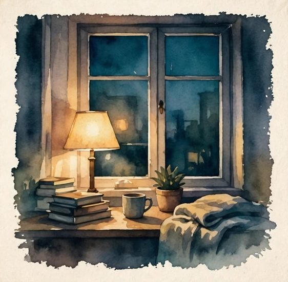
A night window with a warm lamp lit inside, the whole day gathered quietly behind the glass.
Night in the chosen day is not yet sleep. It is the day indoors, gathered and still warm, with lamps lit against the glass and the rooms holding the heat of everything that happened in them since dawn. People speak differently at this hour, recapping small events, settling small accounts, making the provisional plans that night always makes and morning always revises. In the telling, a visitor sits among these sounds without joining them, and discovers that the day, which seemed spent at dusk, has a whole final movement left to play, quieter than the others and in some ways the most intimate of all. The keeper records this without hurry, in a hand that has learned to leave generous margins around every remembered hour.
Warmth is the right word and the house uses it deliberately. It is in the literal rooms, in a house that has been lived in all day, and it is in the relations between the people, who by nightfall have usually softened into the versions of themselves that only family and close company ever see. Jokes return from breakfast, improved. Silences become companionable rather than empty. A visitor who has walked honestly from the dawn kitchen to this window has earned the right to sit in that warmth in memory, not as an intruder, but as the person who once belonged in the room and, in the telling, briefly belongs again. Visitors carry the thought with them into the next room, where the light and the furniture seem to agree quietly.
Yet even here the discipline of the house holds. The night will deepen, the lamps will be put out in their order, and this day, relived or not, will conclude in sleep exactly as it concluded before. The visitor does not resist that conclusion. Staying awake inside a memory helps no one, and the warmth is not diminished by being temporary; it is defined by it. So the telling sits a while longer in the lamplight, gratefully and without petition, letting the day be warm around its people for exactly as long as the day itself allowed, and not one invented minute more. It is a small lesson, patiently kept, and the house trusts small lessons to do their work in their own time.
36Twenty-Four Hours, Accounted For
At the end of this hall the keeper performs a simple ceremony: the day is accounted for, hour by hour, from the first kettle to the last lamp, and nothing is left vague for the sake of a smoother story. Hours that held events stand beside hours that held waiting, errands, rest, and nothing in particular, and all twenty four are entered in the same hand. The accounting is not a judgement. No hour is marked as well spent or poorly spent. The point is completeness, the quiet satisfaction of a whole day seen whole, perhaps for the first time, by the person who lived it too quickly to see it then.
Gaps are treated honestly in this room. Where memory cannot supply an hour, the register says so, rather than inventing weather or dialogue to fill the silence. Visitors are often surprised by how much peace there is in an admitted gap, a stretch of their own life that belongs to the day but not to recollection. Not everything lived was kept, and the house regards that not as failure but as the natural condition of a human archive. What was kept, kept faithfully and set in order, proves sufficient. A day does not need to be total in memory to be complete in meaning. The register makes no flourish of it, only a clear entry, a date remembered, and a page turned with clean hands.
With the account closed, the hall's work is done and the visitor is ready for the harder questions waiting in the next rooms, about watching and the urge to intervene. But the keeper insists on a pause first, because the orderly day now standing in the register is the foundation everything else rests upon. Before asking what might be changed, a person should know, precisely, what there was. Twenty four hours, accounted for, make a modest and solid inheritance: one ordinary, irreplaceable day, seen at last from its first light to its last, and found, in the seeing, to have been enough to learn from for a long time. No one at the desk presses the point further, because some truths settle better when they are allowed to arrive unannounced.
37To Watch, or to Change
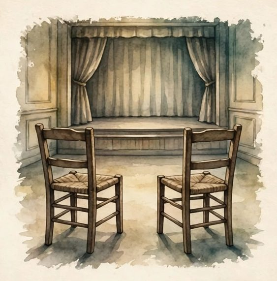
Two chairs facing an empty stage of a room, set side by side as if watching were the whole appointment.
This hall opens with the question every visitor has been carrying since the dawn kitchen, now finally asked aloud in a room built for it. If the day could be entered again, would you watch it, or would you change it. The house presents the choice without tipping the scales, because it has kept both kinds of visitor and honoured both answers in its register. Watching asks for presence without interference, a discipline harder than it sounds. Changing asks for responsibility for consequences no one can fully foresee, even with a lifetime of hindsight folded neatly in the visitor's pocket like a map of country that no longer exists. Outside the window the ordinary world continues, unaware that one finished day is being given this much faithful and tender attention.
It is important, the keeper says, that the experiment be stated honestly at this threshold. Reliving here is a telling, not a return, and no one in these rooms is actually offered a lever over the past. What is being examined is the visitor's own heart, which reveals itself in the answer it reaches for first. The urge toward one side or the other is data about the present, about what still aches, what still feels unfinished, what has settled into gratitude. The hall collects those revelations gently. It is less interested in settling the question than in making sure it is asked properly, at full length, without flinching. The keeper records this without hurry, in a hand that has learned to leave generous margins around every remembered hour.
Most visitors, given time in this room, discover their answer is not pure. They would watch nearly everything, they say, except for one sentence, one departure, one door. That mixture is expected and welcomed, because it is almost certainly true to how memory actually works, reverent in general and restless in particular. The following rooms take the mixture apart piece by piece, the urge to warn, the unspoken sentence, the discipline of leaving a room as it was found. For now it is enough to stand between the two chairs, name the pull in both directions, and admit that the question itself has already changed the person asking it. Visitors carry the thought with them into the next room, where the light and the furniture seem to agree quietly.
38The Urge to Warn Them
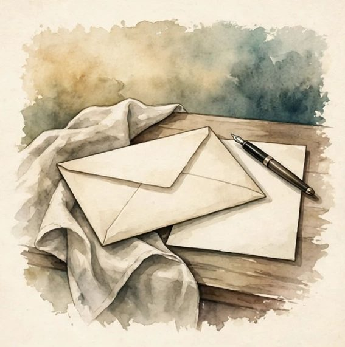
A letter never sent resting on a table, its page left blank and the pen laid down beside it.
Of all the urges that visit this hall, the urge to warn is the most respectable and the hardest to refuse. It arrives dressed as love, because it is love: to stand in a morning of the chosen day, knowing what the year will bring, and say nothing, feels to many visitors like a betrayal performed in silence. The house does not mock this feeling or argue it away. It asks only that the warning be examined before it is imagined delivered, what it would actually say, to whom, and at what cost to the day that, until that moment, was still innocently and entirely itself. It is a small lesson, patiently kept, and the house trusts small lessons to do their work in their own time.
A warning changes more than the danger it names. It changes the warned, who must now live the remaining hours under a shadow the original day did not contain, and it changes the warner, from a guest in the memory into its anxious manager. It also, the keeper notes quietly, assumes the warning would be believed, understood, and acted upon in exactly the spirit intended, three assumptions that ordinary life, with all its noise and stubbornness, rarely grants even to warnings delivered in the present tense. The day in the telling keeps its people as they were: uninformed, and therefore free in a way the visitor can no longer be. The register makes no flourish of it, only a clear entry, a date remembered, and a page turned with clean hands.
None of this settles whether warning would be right, and the room is careful to leave the question open for visitors whose chosen days hold genuine harm. What the house offers instead is a distinction. In the telling, no warning can reach anyone; the people of that day are beyond both danger and rescue, safe inside a finished past. The urge, therefore, belongs entirely to the present, where warnings, timely and loving, can still be given to the living. Many visitors leave this room and make a telephone call they had postponed for years. The day taught them, not by being altered, but by showing them exactly where their voice is still able to matter.
39Watching Myself, Kindly
Sooner or later in the walk, the visitor meets the person they were on the chosen day, moving through its hours with the confidence and blindness of the time. This meeting is, for many, the most delicate in the house, because the younger self is easy to judge and impossible to instruct. The keeper's guidance is simple and is printed nowhere, only practised: watch kindly. That person did not know what you know. They were working with the light available then, tired in ways they hid, brave in ways nobody recorded, wrong about some things for reasons that, at the time, looked exactly like good sense. No one at the desk presses the point further, because some truths settle better when they are allowed to arrive unannounced.
Kindness here is not indulgence, and the room does not ask anyone to falsify the record. The younger self said careless things, missed clear signals, wasted an afternoon that the older self would now spend like treasure. All of that may be entered in the account. But the tone of the entry matters, because contempt is a poor instrument for learning anything except contempt. Watched kindly, the younger self becomes legible: fears can be seen underneath the bravado, tenderness underneath the haste. Visitors often report that this is the first time they have looked at their own past self with the same generosity they would automatically extend to a friend or a grown child.
The benefit of this watching does not stay in the past. A person who can regard who they were with accuracy and mercy is practising the exact regard they will need, sooner than expected, for who they currently are, since the present self is busily becoming another past self even now. The house suggests, without insisting, that the chain of kindness might as well begin at the earliest link available. Leave the younger self unwarned if the rules require it, but not unpitied, not unthanked for carrying the life, however clumsily, through that day and all the days that followed it, to the very door of this house. Outside the window the ordinary world continues, unaware that one finished day is being given this much faithful and tender attention.
40The Sentence I Would Not Now Say
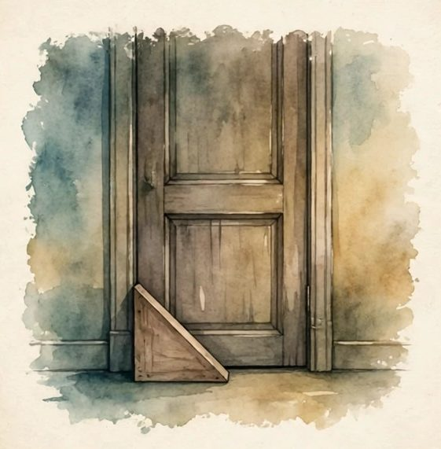
A door held closed gently by a small wooden wedge, the future kept quietly outside it.
Nearly every visitor can supply it without hesitation: the sentence from the chosen day that they would now leave unsaid. It is rarely the worst sentence of a life. It is usually a small, sharp, ordinary one, delivered at a table or a doorway, whose sting outlasted its second of speaking by decades. The house gives this sentence a room of its own not to shame the speaker, but because examining it, exactly as it was said, to exactly the person who heard it, teaches more about the day than many of its happier hours. Here it is written down in the register, once, plainly, and then the page is turned. The keeper records this without hurry, in a hand that has learned to leave generous margins around every remembered hour.
It matters to be precise about what is regretted. Sometimes it is the content, a judgement that was unfair even then. More often it is the timing, a truth dropped into the wrong hour, or the tone, a weariness dressed up as honesty and aimed at whoever stood nearest. The keeper helps visitors make these distinctions, because each one points at a different lesson for the living. Content can be reconsidered. Timing can be practised. Tone, above all, can be changed by the very person sitting at the desk today, in sentences not yet spoken to people who can still be spared, or blessed, by the difference. Visitors carry the thought with them into the next room, where the light and the furniture seem to agree quietly.
The sentence cannot be unsaid inside the day, and this hall does not pretend otherwise; its hearer heard it, in a finished past that the telling honours by leaving intact. What can happen here is quieter and, the keeper believes, more useful. The sentence is finally heard by its own speaker, at full weight, perhaps for the first time. That hearing tends to produce not grand resolutions but a specific, workable tenderness in the present, a pause before doorways and tables, a preference for the version that can be lived with at this distance. The day keeps its sentence. The visitor keeps the lesson, and carries it out of the house into hours where speech still has consequences.
41The Sentence I Would Finally Say
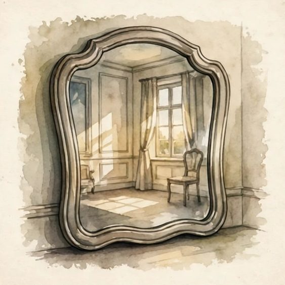
A mirror reflects an empty sunlit room, kindly, with no one standing before it and the light left to speak for itself.
There is a sentence that lived for years behind the teeth, rehearsed in kitchens and on quiet roads, always arriving too late for the hour that needed it. It was not a grand sentence. It did not explain a life or settle an account or turn the day toward some brighter ending. It was plain, almost embarrassingly plain, the kind of thing a person says easily when nothing depends on it and cannot say at all when everything does. In the chosen day it went unsaid again, while smaller talk filled its place and the afternoon moved politely around the silence where it should have stood. It waited in the room with him, patient and unspoken, while the light moved slowly across the floorboards toward evening.
To imagine saying it now, inside the memory, is not to rewrite the day but to understand at last what the silence cost and what it protected. Perhaps pride was guarding it. Perhaps kindness was, badly, mistaking quiet for mercy and sparing everyone a difficult minute at the price of a lasting one. The house does not judge the reason. It sets the sentence on the table like a glass of water, clear and unadorned, and asks the visitor to look at it honestly, to hear its exact words in the inner ear, and to notice how small the saying would have been beside how large the not saying became. What was protected and what was lost sit side by side in this room, neither one willing to give up its chair.
The sentence still belongs to the present more than to the past, and that is where its work waits to be done. Some sentences can be carried forward and spoken to the living, late and imperfect and still worth the speaking. Others can only be said once, inwardly, to a day that has closed, and then laid down without pretending the saying reached anyone. Either way, the visitor leaves this room with the words named at last. Named, they lose their haunting size. They become what they always were, a human sentence, waiting for a human hour that attention might still provide. Spoken or unspoken, it has done its shaping, and naming it at last is a way of taking that shaping into account.
42Changing Nothing, On Purpose
Changing nothing is harder than it sounds, because the hands keep wanting work and the mind keeps offering errands inside the remembered day. A word could be softened here, a turning taken there, a door left open ten minutes longer against everything that followed. The experiment asks for a stricter courtesy. Walk the hours as they were lived. Let the soup be the soup and the weather be the weather and the mistake keep its original shape. Deliberate stillness is not surrender in this house. It is a discipline, chosen in advance, so that seeing can happen before the urge to mend covers everything in good intentions. The day, left exactly as it was, begins to look less like a problem and more like a place once lived in.
There is a dignity in the day as it actually unfolded that editing would quietly take away. The people in it were not drafts. They were living forward without the visitor's later knowledge, doing their best with the light they had, and to alter their scenes in imagination until everyone behaves better is a subtle kind of disrespect. The day also taught what it taught precisely because it was not arranged. Its accidents carried information. Its awkward pauses carried truth. Left alone, the memory can finally be read instead of corrected, and reading, done slowly enough, turns out to be the rarer and more demanding act. Their forward living deserves that protection, even from a visitor whose intentions are tender and whose knowledge arrived long after the hour.
A visitor who changes nothing on purpose discovers an unexpected relief waiting at the end of the hours. The shoulders drop. The day no longer has to be solved before it can be loved, or understood, or set down. Nothing was rescued, and yet something was recovered, which was the plain experience of having been there among people who were themselves. That recovery travels well. It teaches the hands to rest inside present difficulties too, to look first and fully before reaching to rearrange, and to trust that attention, offered without conditions, is itself a form of care. Nothing about that relief is passive, because it was chosen hour by hour against every instinct to reach in and mend.
43A Guest Does Not Rearrange the Rooms
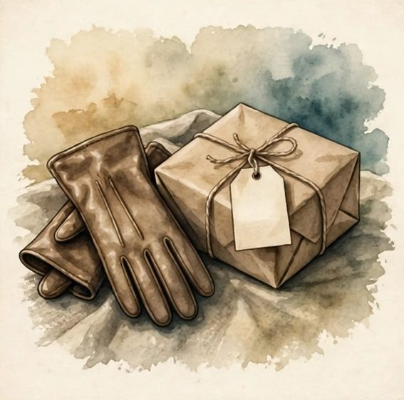
A pair of gloves rests beside a gift parcel with a blank tag, the hands they imply withheld from the scene.
A guest in a remembered day learns the manners of the house quickly, or learns why the visit keeps failing. You do not move the furniture of another person's hour to suit your later taste. You do not improve the conversation from the doorway, or tidy a grief into a neater shape, or take the good chair of hindsight and settle into it as if it were yours. The rooms stand as they stood. The visitor is welcome in them precisely on those terms, welcome to sit, to look, to listen at the pace the day itself sets, and to leave every object where memory found it. To be a guest is to be trusted with access, not ownership, and the day opens only to visitors who understand the difference.
This restraint sounds small until the visitor notices how often love expresses itself as rearrangement. We straighten the story for the people we miss. We move their failures out of the light and their virtues forward, we hang explanations over the bare walls, we keep polishing a room until nobody could actually have lived in it. The house asks for a plainer affection. Leave the chair where it was. Leave the unsorted afternoon unsorted. A life honoured exactly as it appeared needs no staging, and the guest who can bear the real arrangement finds the room warmer than any improved version. The real arrangement has its own warmth waiting inside it, under the dust of the actual afternoon and the unrepaired conversation.
Leaving at the end of the visit, the guest closes no doors behind him that were open and opens none that were shut. The day remains inhabited by its own people, in its own order, under its own light. That is not a loss to carry home. It is the whole gift of having been admitted at all, briefly, to a place that does not belong to the visitor and yet once held him completely. Carried into the present, the lesson is gentle and practical. Enter other people's days as a guest. Sit down kindly. Rearrange nothing that is not yours to move. That courtesy, practised first in memory, becomes easier to offer in houses where the people are still living and still reachable.
44The Future Stays Outside the Door
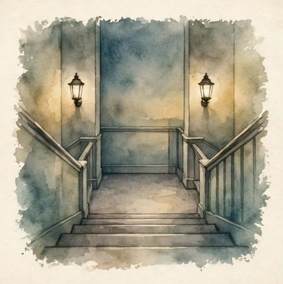
A staircase landing pauses between two lights, one gold from below and one teal from above, with nowhere urgent to go.
Every visitor arrives at the chosen day carrying the future in both arms, and the house has one firm courtesy about luggage. It stays outside the door. Not denied, not forgotten, simply set down on the step for the length of the visit, so the rooms inside can be met in their own weather. Within the day, nobody yet knows the hard news that is coming, or the letter, or the parting, or the unexpected kindness of later years. They are eating breakfast inside an innocence the visitor has lost, and honouring that innocence means refusing to let tomorrow darken today's bread. Set down carefully, it does not disappear, and nothing inside the rooms is asked to pretend that nothing will ever change.
This is the ache at the centre of the experiment, and the house does not soften it. To watch people you love enjoy an ordinary hour while you alone know its place in a longer story is a particular and quiet sorrow. Yet there is mercy in the arrangement too. The future, left outside, cannot be warned against or bargained with, and so the visitor is released from a duty that was never real. All that remains is presence. The hour can be received as it was received then, unshadowed, with its jokes intact and its plans allowed to be hopeful without correction from the step. In that unshadowed hour, hope is not ignorance but the natural weather of a morning that has not been told anything yet.
When the visit ends, the visitor picks the future up again on the way out, as one picks up a coat, and finds it strangely lighter for having been set down. Knowledge carried constantly becomes a weight carried badly, braced against every passing hour. An afternoon spent inside a day that did not know is a reminder that the present, too, does not know, and may therefore be lived with the same unguarded appetite the people at that table had. The future waits its turn. It always did. The door, for one remembered day, simply made the waiting visible and kind. The door does not lock the future out forever, only long enough for one whole day to be met on its own terms.
45Knowing, and Keeping Quiet
To relive the day with later knowledge is to be given a seat at the table and a secret that cannot be shared. You know which of the plans spoken aloud that evening will come to nothing, and which small remark will be remembered for decades, and how soon the road bends. Keeping quiet about all of it is not deception. It is the terms of the visit, understood from the start. The people at the table are entitled to their unfolding. Your silence is the shape your love takes when it arrives too late to be useful and chooses, instead, to be respectful. That quiet is work, chosen fresh in every scene, and the visitor feels its cost most where affection is strongest and plainest.
Quiet of this kind has a texture, and the visitor learns it hour by hour. It is not the quiet of indifference, which turns away, or of fear, which hides. It leans in. It pours the tea. It asks the ordinary questions and delights in the ordinary answers, knowing their full weight and letting them stay light for everyone else. There were moments in the original day when you were distracted and barely heard what was said. Now, keeping your knowledge to yourself, you hear everything. The secret becomes an instrument of attention, and attention, withheld from no one, becomes its own quiet form of telling. Hearing everything meant hearing the jokes as jokes and the plans as plans, without translating either into the longer story only he knew.
Some knowledge, of course, belongs to the present and should be spoken there while speaking can still matter. The house is careful with that distinction, and so is the visitor by the end of the day. What cannot be carried back into the hours is carried forward instead, into rooms where the people are still reachable and the doors still open both ways. The remembered quiet teaches the present voice its timing. Say it now, while now is the tense available. And when silence is the only honest offering left, offer it the way it was practised here, fully present and without withdrawal. The distinction matters beyond this house, wherever love must decide between warning, waiting, and simply staying present beside another person's unfolding.
The Chosen Day Desk
One desk receives all correspondence for this house — questions, corrections, and word of any day a visitor would relive: the choosing of it, its hours, its people, the one thing they might change. It is read in the order it arrives.
46What Watching Teaches That Fixing Cannot
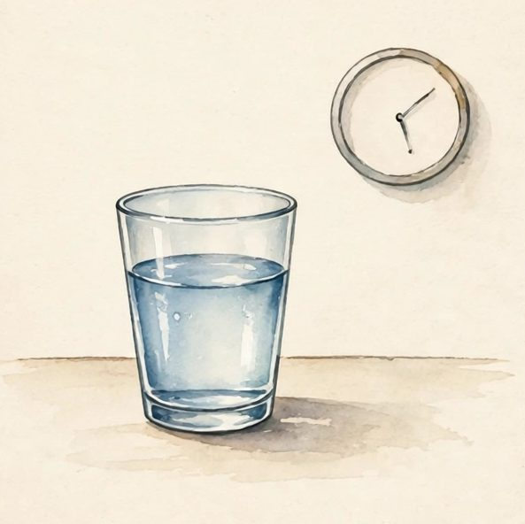
A glass of water stands on a bare table, clear and unadorned, offering a plain telling without decoration.
Fixing is a fast teacher with a short curriculum. It shows the visitor where the lever was hidden and how the outcome might have bent, and then it has nothing more to say. Watching teaches slowly and keeps teaching. It shows how a mood entered the room before anyone spoke, how a kindness was offered and almost missed, how the light changed the meaning of a face across an afternoon. None of that information is available to hands busy with repair. The wrench sees the bolt. The watcher sees the whole machine, the room around it, and the people living quietly inside its turning. The watcher also notices mercy in the margins, small recoveries and kindnesses that a busier account of the day had edited out entirely.
There is also the uncomfortable lesson, the one no amount of fixing would ever have delivered. Watching long enough, the visitor sees his own part in the day without the usual edits, the distracted nod, the joke that landed wrong, the attention given everywhere except where it was asked for. Seen plainly, these are not indictments. They are measurements, taken at last with an honest instrument, and they explain more about the years that followed than any single catastrophe could. Fixing would have hidden them under a better outcome. Watching leaves them in the light, where they can finally do their instructive work. Measurements of that kind do not shame a life, they survey it, and a surveyed life can finally be navigated with some honesty.
The visitor carries the watcher's education out of the house and finds it fits every present room. Most hours do not need intervention nearly as much as they need witness. A child describing a drawing, an old friend circling a sorrow, a colleague thinking aloud toward a decision, each of them is asking first to be seen accurately. The chosen day, watched whole and changed not at all, trains exactly that accuracy. It sends the visitor home with slower hands and quicker eyes, persuaded that understanding is not the consolation prize for those who cannot act, but often the deepest action available. Accuracy sounds cold until it is practised on someone beloved, when it turns out to be one of the warmest forms of regard.
47The Experiment Holds Both Answers
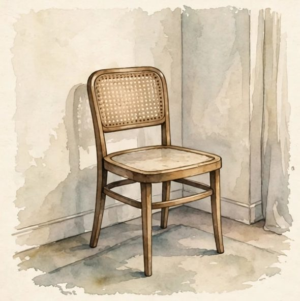
A guest chair is drawn up in a familiar room, placed close enough to belong and careful not to rearrange anything.
Ask a room of visitors whether they would change the day or only watch it, and the room divides, and both halves are telling the truth. One half cannot bear to stand idle beside a preventable sorrow. The other cannot bear to lay a hand on hours that made them who they are. The house refuses to referee. It sets two chairs in the same light and lets the answers sit facing each other, because the experiment was never designed to produce a verdict. It was designed to show each visitor, with unusual clarity, which answer is theirs and what that answer costs. Neither chair is the correct one, and the room is large enough, the keeper says, for both answers to be heard in full.
The wish to change is not vanity, and the wish to watch is not coldness, though each side suspects the other in the small hours. Underneath the first wish is usually love that arrived with knowledge and wants somewhere to go. Underneath the second is usually gratitude, or loyalty, or a hard won suspicion that our improvements are not as wise as they feel. Some visitors hold both wishes in the same afternoon, changing their answer by the hour as the day moves from its easy morning into its difficult evening. The house records none of it. It simply keeps both chairs drawn up and the room warm. Each answer guards something real against a real danger, which is why the argument between them never quite ends and never should.
What matters, the keeper suggests, is not which answer a visitor defends but whether they stayed long enough to understand the other one. The changer who has truly watched knows the price of touching anything. The watcher who has truly felt the urge knows the price of stillness, and pays it with open eyes. Between those two knowings a whole philosophy of memory quietly assembles itself, large enough for grief and gratitude to share a table. The experiment holds. It was built, after all, not to settle the question of the past, but to make the asking of it more honest. Honesty of that order does not settle anything quickly, but it changes the person who carries the question out into the evening.
48Present, Not in Charge
The final room of this hall is the quietest, because in it the visitor lays down the last and most stubborn claim, the claim to be in charge of the remembered day. Presence was the invitation. Command was never on offer. Inside the hours, meals happen at their old pace, people make their old choices, the weather does what it did, and the visitor walks among all of it like weather himself, able to warm a room with attention and unable to steer a single cloud. It is a demotion, and after the first sting it begins to feel like being forgiven for a job that was never yours. Being accurately placed also means being available, since a visitor no longer busy directing can finally notice who needs a hand nearby.
Most of life, looked at honestly, was lived in exactly this condition, present and not in charge, though nobody says so at the time. We were not directing the childhood kitchen or the first job or the long ago afternoon that keeps returning in memory. We were in them, which is a different and humbler thing, responding as well as we could to what arrived. The chosen day simply removes the illusion earlier than usual, so the visitor can practise the truth on familiar ground. To be present without being in charge is not to be helpless. It is to be accurately placed. The illusion of direction is expensive to maintain, and the day keeps showing, gently, how little of it was ever purchased with effort.
Leaving the hall, the visitor finds the present waiting with its familiar invitation to overmanage everything in reach. The day just visited offers a calmer posture. Show up completely. Do the part that is actually yours, which is usually smaller and kinder than the part anxiety assigns. Leave the rest of the room to its other occupants, who were never waiting for your direction in the first place. A day lived at that pitch, fully attended and lightly held, stands a fair chance of becoming, years from now, the very day a future visitor chooses to walk through once more. A future visitor choosing that day would find, not a performance of control, but a person present inside his own life at last.
49The People in That Day
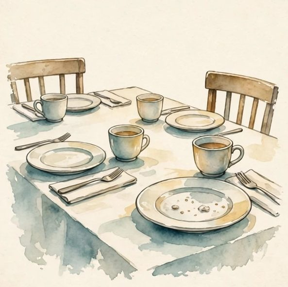
A table is set for several, one setting studied longer than the rest, its plate and cup kept in the light.
Before the hours, before the weather and the meals and the light, there are the people, because a day is mostly who was in it. Name them slowly, the way the keeper names them at the desk, without rank and without summary. The one who made the tea. The one who arrived late with bread and apologies. The one who said almost nothing and is somehow in every memory of the afternoon anyway. A chosen day is chosen, nine times out of ten, for its cast, though the chooser often believes at first that it was about a place or an occasion or a piece of news. That admission rearranges the furniture of the memory more thoroughly than any revelation the later years have managed to provide so far.
Each of them is in the day at full size, which is the first thing reliving restores. Memory tends to shrink people into their relationship with the storyteller, a helpful neighbour, a difficult parent, a friend who moved away, until their own weather disappears. Walking the hours again at walking pace, the visitor watches them exceed those labels in every scene. They have errands and appetites and private jokes that do not involve the visitor at all. They were not waiting to be remembered. They were living, at the same speed and with the same uncertainty, inside a day that also belonged entirely to them. Full size is how they deserve to be met, neither enlarged into legends nor reduced into the functions they performed for somebody else.
The hall ahead is given to these people one by one, face by face and voice by voice, and the visitor is asked to arrive at it unarmed with conclusions. Do not decide in advance who mattered most. The day will correct the ranking on its own, usually in favour of someone nearly overlooked, a driver, a neighbour, a brief companion at a table whose kindness turns out, at this distance, to have been load bearing. The people in that day carried the visitor through hours he thought he carried himself. This hall begins with that admission, plainly made. Plainly made, it clears the ground of this hall, so that each person ahead can be approached without a summary already waiting.
50They Were Living Their Own Day
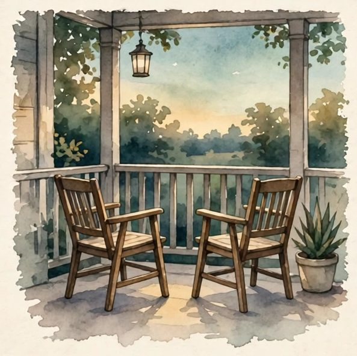
A porch at dusk holds two chairs turned toward each other, as if a conversation had only just paused.
The woman across the table that morning was not having your day. She was having hers, with its own errands folded inside it, its own worry riding under the conversation, its own evening already calling to her from across the hours. She laughed at your remark while thinking about a bill. She passed the bread while composing, in her head, a difficult letter of her own. None of this makes the shared breakfast smaller. It makes it larger, two whole days briefly overlapping at a table, each invisible to the other except where kindness or attention happened to cross the gap. That overlap is the real subject of most remembered tables, two solitudes briefly sharing bread and weather and an hour of light.
Reliving exposes these parallel days everywhere the visitor looks, and the discovery rearranges the memory more than any revelation could. The friend who seemed distant that afternoon was carrying news he had decided to hold until evening. The child who would not settle was not performing for the visitor's story but living inside a small storm of her own weather. Even the stranger who held a door was in the middle of a day with its own plot, its own losses gathering or dispersing, into which the visitor wandered for four seconds and out again, remembered, perhaps, not at all. Proportion of that kind is not diminishing but restoring, returning each figure in the scene to the dimensions they actually lived at.
There is no reproach in this hall, only proportion. To see the others as leads in their own days is to be returned, gently, to one's correct size in the memory, neither its hero nor its author, just one of its citizens. That citizenship turns out to be a comfortable estate. It frees the visitor from grading his performance across every scene and lets him simply be glad of the company. Other people's days are still running alongside this present one, at kitchen tables everywhere, and the same courtesy applies. Assume a full plot behind every face. Proceed accordingly, with interest and with care. Assume a full plot, and faces stop being scenery, and every brief encounter recovers the dignity of a meeting between whole days.
51A Face I Would Study Longer
There is one face in the day that the visitor always leaves too early, moving on to the next scene the way he moved on at the time, mid conversation, half listening, certain there would be unlimited further chances to look. There were not, or not in that light, or not with that expression. Faces in memory are not like faces in photographs, fixed and patient. They fade from the edges inward unless attention renews them, and so the wish to study this one longer is really a wish to have understood, while looking was easy, that looking itself was one of the day's main events. That expression belongs to the day alone, and the wish to have kept it better is really a wish about attention itself.
Studying a face, in the house's sense, is not scrutiny. Nobody is being examined for clues or changes or the first signs of a coming sorrow. It is the older art of regarding, the way one looks at someone across a kitchen in unhurried affection and stores nothing on purpose, yet keeps everything. The lines the years had written by then. The expression that arrived just before laughter, which strangers never got to see. The particular way attention looked on that face when it turned toward a window, thinking its own thoughts, allowing itself, briefly, to be entirely unobserved and entirely itself. Unobserved and entirely itself is how people mostly are, and being allowed to witness it was always the privilege hidden inside ordinary company.
The visitor cannot add a single minute of looking to the day that closed, and the house does not pretend otherwise. What can be added is the looking owed to the faces still available, which turn out to be numerous and patient and equally unstudied. Wives and brothers and old friends sit across present tables being glanced at between messages, exactly as that remembered face once was. The lesson walks out of the hall with the visitor and sits down at supper. Look up. Look longer. Let the meal be the errand and the face be the destination, while both are still on offer. While both are still on offer is the whole of the teaching, and supper tonight is as good a place as any.
52The Voice I Would Record in Memory
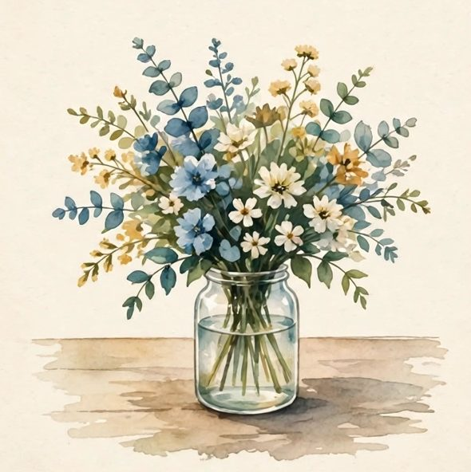
A bunch of flowers stands in a jar on a table of that day, their colour brief and unrecorded except by attention.
Faces survive in photographs, but voices live only in the ear's keeping, and they are the first treasure the years begin to spend. Ask a visitor what he would record, given one hour of tape inside the chosen day, and he rarely chooses a speech. He chooses a voice calling from another room that dinner is ready, or reading aloud badly and laughing at the mistakes, or explaining something ordinary with total serious conviction. The content is almost beside the point. It is the grain of the sound he wants back, the exact weather of a person thinking aloud at kitchen distance. That grain survives in fragments and phrases, in the way a name was said, in a laugh that began before the joke ended.
Memory does keep voices, though less obediently than tape. They surface uninvited at odd hours, in a stairwell, over a sink, saying some small sentence whole and perfect, and then they will not repeat themselves on request. The house honours those visitations without building any doctrine on them. A voice recalled is a voice half remade by love, and everyone at the desk seems to know it, and nobody minds. What matters is that the visitor once listened closely enough for anything to be kept at all. The recording happened at the time, in the only studio available, which was attention. Attention was the only studio, and it recorded imperfectly, but what it caught has a fidelity no machine in the house can match.
So the practical teaching of this room arrives in the present tense, as most of the house's teachings do. The voices still speaking in a visitor's life are being kept or lost at exactly the rate he listens to them. Put the errand down. Let the story about the neighbour run its full and wandering length. The day will come when that wandering length is the part he would trade the whole archive to hear again, preface, digression and all. Reliving cannot press a record button in the past. It can only tune the ear that walks out of the house, and it does, noticeably. It does so noticeably enough that other visitors remark on it, a man leaving the hall still listening halfway down the corridor outside.
53Someone at the Table, Unaware
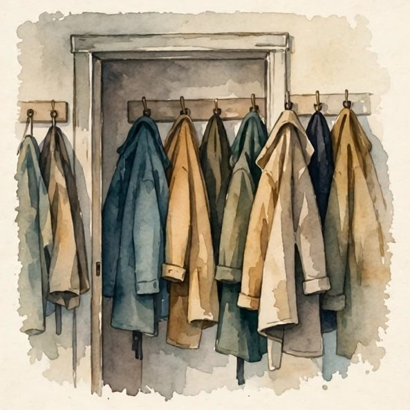
A doorway holds coats of many sizes on its hooks, each one belonging to a life that arrived from elsewhere.
At every table in every chosen day there sits at least one person who does not know what the day will come to mean. They are eating with appetite and talking about next week, entirely unaware that this ordinary lunch is being laid down in someone else's memory like a foundation stone. Often, of course, that person is the visitor himself, which the house finds quietly funny and quietly sad. He sat there planning, worrying, reaching for the salt, with no idea that his future self would one day cross decades of weather just to sit near that lunch again and watch him not notice it. That lunch deserves remembering without irony, because its participants were doing exactly what living asks, which is to proceed without the ending.
The unaware deserve a particular tenderness from anyone who revisits them, because they are defenceless against hindsight. It would be easy, and it would be a kind of cruelty, to stand in the doorway of the memory shaking one's head at how little they understood. They understood what the day had told them, which was that lunch was lunch and next week was coming. Their innocence was not a failure of attention. It was the normal condition of living forward, and the visitor shares it completely at his own present table, where some future memory is even now being quietly founded on an unremarkable meal. Awareness of that kind does not announce itself, it simply seasons the bread and lengthens the pause before anyone reaches to clear away.
There is a practice hidden in this room for those who want one. Eat one meal a week, if possible, as the unaware eat, wholly inside it, and eat it also as the visitor watches, wholly aware of its value, holding both conditions at once without spoiling either. The people at that table do not need to be told that this may be a chosen day in the making. Telling would break the spell the house exists to describe. It is enough to pass the bread with both kinds of knowledge in the hands, the appetite of the present and the gratitude of the remembering guest. Both kinds of knowledge in the hands is harder than it sounds, and kinder, and it is the closest the house comes to instruction.
54The Person I Did Not Thank That Day
Somewhere in the chosen day a kindness was done at exactly the speed of ordinary life, and thanks, which were fully intended, were never actually said. A lift was given, or a bill quietly covered, or a hard task taken off the visitor's hands without announcement, and the day moved on in its weather and the moment for gratitude slid past like a station seen from a train window. It is a small debt. That is precisely why it survives when larger accounts have long been settled. Small unpaid thanks are the loose change of memory, found in every coat pocket years later. Years later it is still findable, that loose change, still legal tender in the economy of a conscience that keeps honest accounts.
The house asks who it was, and most visitors know immediately, which tells its own story about how long the omission has been carried. Sometimes the person can still be found, older now, reachable by ordinary means, and the thanks can be paid in the present tense with interest, to their surprise and occasional confusion. Sometimes the address is gone and the debt must be discharged differently, by passing the same kindness forward at the same unannounced speed to somebody who will also, very likely, forget to say anything at the time. The keeper approves of both currencies and keeps no ledger of either. The keeper approves of both currencies because both honour the original act, which was never performed in expectation of being repaid at all.
What the visitor is not encouraged to do is rehearse the missing sentence until it grows heavier than the kindness that prompted it. The person, remembered honestly, probably thought about it for four minutes, if that, and would be startled by the size of the monument guilt has built. Gratitude delayed is still gratitude, and gratitude redirected is not counterfeit. The room's real lesson points, as usual, at the present table, where thanks are still cheap, still easy, and still somehow left for later. Say them at the sink, at the door, in the middle of the errand. Later has a poor record. Later has a poor record in most houses, including this one, where the unsaid thanks of ten thousand visitors line the shelves quietly.
55A Hand I Would Hold a Minute Longer
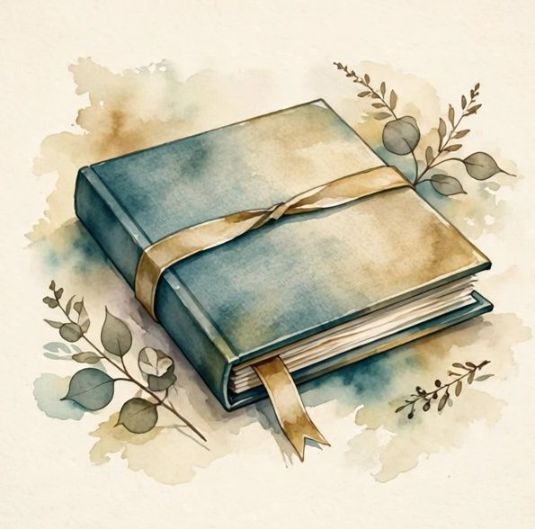
A photograph album lies closed on a shelf, a ribbon marking the day in question, its images left unshown.
Of all the measures in the house, the minute is the one visitors ask for most, and always for the same small purpose. Not an hour of conversation, not a day added to the calendar, just one minute more of a hand held at a doorway, on a walk, across the edge of a hospital blanket or a kitchen table, before the ordinary business of parting resumed. Sixty seconds is a modest request, which is what makes it so difficult to refuse oneself in imagination. The house, having heard it ten thousand times, neither grants nor refuses. It simply sets a chair by the door of this room. That chair is rarely empty for long, because every visitor recognises the request and brings his own doorway and his own parting to it.
A held hand says what the day's vocabulary could not, which is why it carries so much of the memory now. Conversations from that afternoon have faded to summaries, but the weight and warmth of that hand remain on file in the skin, exact as a signature. It was not saying goodbye, at the time. It was saying the unsayable in the present tense, we are here, this is us, the road can wait, and both people understood it without either needing to be brave enough to translate. Hands are honest in a way mouths are trained not to be. Memory keeps their testimony when it loses the speeches. Its testimony outlasts the speeches because it was never trying to persuade anyone, only to say, without language, what language kept missing.
One minute longer would not have changed the parting, and the visitor, to his credit, no longer asks it to. He asks only to have known, during the minute he was given, that it was the minute, so he could have been in it the way he is in it now, completely. Since that knowledge cannot travel backward, it travels forward instead, as all the house's goods do. Hands are still being held at doorways, briefly and distractedly, by people who believe there will be unlimited further chances. There will not always be. Stay for the whole minute. It is the smallest room in the house and the most visited. The smallest room in the house is also the plainest proof that a minute, fully inhabited, can outweigh whole afternoons of distracted company.
56The Laugh I Would Stand Closer To
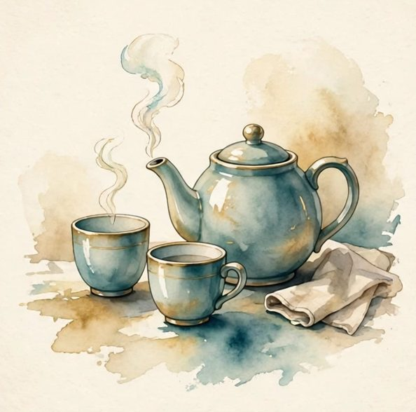
A teapot and cups stand after thanks were finally said, steam rising in the quiet that followed the words.
Every chosen day has a laugh in it somewhere that the visitor heard from the wrong distance, from the hallway, from behind a closed door, from the far end of a garden where he was doing something he believed was more urgent. He caught its music but not its cause, and the cause is gone now beyond recovery, some remark at the sink, some story told exactly once. What remains is the sound itself, bright and communal, rising in the memory like a bell over a village, proof that at that hour, in that house, people were undefended and glad in each other's company. Its music has kept better than most of the day's conversation, perhaps because nobody was performing it and everybody in it was free.
Standing closer would not have required an invitation, which is the gentle sting in this room. Laughter at a kitchen table is not a ticketed event. The chairs were there. The visitor could have put down the errand, crossed the garden, taken the empty seat and been handed both the joke and the company in the same motion. He meant to. The day simply ran, as days do, on its own cheerful schedule, and meant to is where most of the material in this house was first collected. The room keeps no blame for it, only the acoustics, which are excellent, and the empty chair, which is accurate. Meant to is the most populated address in the whole building, and its residents are, almost without exception, people of perfectly good intentions.
There may be no more transferable lesson in the whole building than the directions to that sound. In the present, laughter still starts up in other rooms while visitors are elsewhere being responsible, still offers its standing invitation, still expires in minutes and cannot be repeated on request with anything like its original force. Go toward it. That is the entire instruction, and it does not improve with elaboration. Whatever is in the hands can almost always be resumed in an hour. The laugh cannot. The people of the chosen day, if they could be consulted, would surely vote for the chair taken over the errand finished. Over the errand finished, every time, though the vote would have to be imagined, since consulting them is exactly what cannot be done.
57People Who Are Gone, Present That Day
In the chosen day, they are simply there, which is the whole wonder and the whole difficulty of this room. Not restored, not summoned, not arranged in any solemn order, just present at their ordinary pitch, reaching for things, mishearing things, wearing the clothes they wore without knowing they would become relics. Death has not yet edited them in that day. They are not symbols of loss or lessons in gratitude. They are people at lunch, fully employed by the business of being alive, and the visitor who walks the hours meets them first as company before he meets them as memory. That day does not know it is being mourned over in advance by a visitor from its own future, and the house protects its ignorance.
The house has a rule for this room that it states once and enforces gently. Do not make the gone perform their goneness. They owe the visitor no final words, no significant last exchanges, no wisdom delivered from the edge of the story. Most of them, on that day, were thinking about supper and the weather and a small pain in one knee, and the visitor's task is to join them at exactly that level, where life was actually lived. The sacred, in this building, keeps turning out to be a synonym for the ordinary, accurately attended, and nowhere is that truer than here, among the temporarily unlost. Here, among the temporarily unlost, the ordinary is not a disguise for anything deeper but the depth itself, exactly as it was lived.
Leaving the day, the visitor does not take them with him, and learning not to reach for that is the room's quiet graduation. They stay in their hours, where they belong, complete and unborrowed. What travels home instead is a changed relationship to absence, less like a locked door and more like a house across a road, lit in its own time, neither enterable nor imaginary. The gone were present once at full size. Nothing in the present can enlarge or reduce that fact. It simply stands, the way they stood in the kitchen doorway that day, mid sentence, entirely themselves. It simply stands, unborrowed and complete, and a visitor who can let it stand has learned the hardest courtesy this hall can teach.
58People Still Here, Younger Then
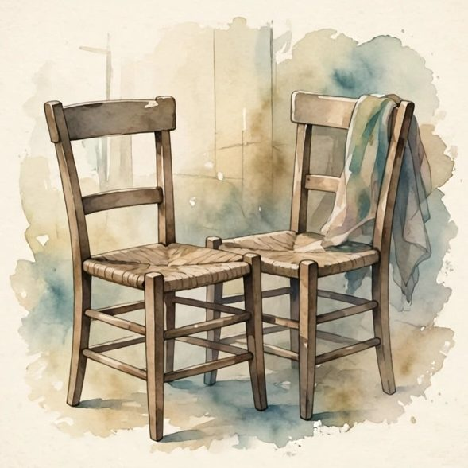
Two chairs stand close together, as if a laugh had just happened between them and the air had not settled.
Not everyone in the chosen day has gone, and the ones who remain offer the visitor a stranger sight than any ghost could manage. There they are, younger, unlined, loud with plans, wearing their early selves with total confidence and no idea which parts will last. The friend whose voice is now careful was reckless with joy in that kitchen. The sister who became the family's pillar was the one spilling things and leaving early. To watch them is to realise that the people we know have not simply aged since that day. They have been revised, chapter by chapter, by everything the day could not see coming. Those complete editions are worth honouring directly, not only as drafts of the present, but as selves who once held the whole stage.
It would be easy, and it would be wrong, to treat those younger selves as merely unfinished versions of the people at the present table. They were finished. They were complete editions, true at their date, and some of what they had has not survived into the current printing, a wildness, a softness, an appetite for risk or for nonsense that the years quietly edited out. The visitor sometimes finds himself mourning a living person across a perfectly ordinary supper, missing who they were while they sit beside him being who they are. The house suggests holding both facts at once, since both are facts, and neither cancels the other. Holding both facts at once is the beginning of a kinder historiography, one that lets the living be mourned and celebrated in the same breath.
The way home from this room is a telephone, or a doorbell, or a chair pulled up in the present tense. The younger selves cannot be visited at will, but the people who carry them can, and they often remember the same day from their own side of the table, with scenes the visitor never saw. Between two such memories a day can grow larger in old age than it ever was in the living. Call them. Ask what the afternoon looked like from their chair. The chosen day, shared out among its survivors, turns out to have rooms the visitor never entered at all. Rooms the visitor never entered at all are still furnished and lit in other people's keeping, waiting only for a conversation to open them.
59Not Parts in My Day
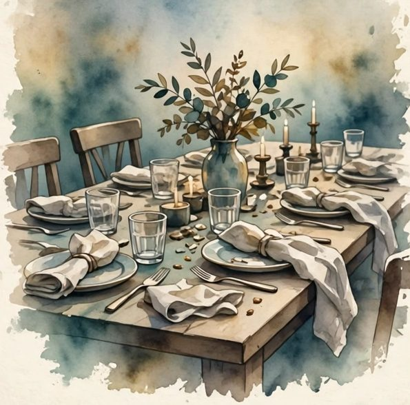
A long table at evening keeps every place in kind disorder, cups and plates left where separate days set them down.
Memory is an economical storyteller and it casts shamelessly, handing the people of that day their parts and cutting everything that does not serve the plot. The neighbour becomes comic relief. The difficult relative becomes the obstacle. The quiet one becomes background, valued for atmosphere, expected to stay in soft focus near the door. Reliving, done at full length and full attention, keeps breaking the casting. The background figure gets up mid scene and reveals a life of lead dimensions. The obstacle turns out to have been carrying the heaviest load at the table. Nobody stays in their assigned part for a whole remembered day. A day with its casting returned to the people is a day that can finally be revisited without anyone having to play a part.
The visitor's own part shrinks in the same revision, and the shrinkage is a relief disguised as a loss. He was not the sun of that day, around whom its hours turned. He was one of its company, sometimes central, often peripheral, once or twice absent from scenes where the day's real business happened without him and has had to be reconstructed from other people's telling. A memory with a deposed hero becomes more truthful and, unexpectedly, more companionable. It can be shared. Other people can enter it without bumping into the author's ego at every doorway, and they do, bringing their own days with them. Citizenship in a memory, shared and contested and enlarged by others, turns out to be a far better estate than solitary authorship ever was.
So the hall's instruction, if a house so polite can be said to instruct, is to return the parts and keep the people. In the present, the casting habit is still running, assigning roles at every table to colleagues, parents, children and friends, and quietly forbidding them to improvise. Let them improvise. The person filed under difficult may be mid chapter in a story that would rearrange the filing entirely. The chosen day proves it across forty years of evidence. Nobody at that table was a part in anyone's day. They were days unto themselves, briefly and generously in session together. Briefly and generously in session together is the truest description the house can offer of any table that has ever mattered to anyone.
60Their Day, Remembered With Mine
The hall closes where it should, with the two days laid side by side on the table like maps of the same country drawn by different travellers. Mine, with its weather and its turning points, its sentence unsaid and its minute at the door. Theirs, plural, overlapping and irreconcilable in places, each with its own centre exactly where the visitor assumed the margin was. Remembered together, they do not merge into one authorised version. They correct each other, kindly, the way witnesses do when nobody is on trial, and the day grows at last to its true size, which is larger than any single memory of it. True size includes contradiction, missing pieces, and scenes that happened entirely offstage from the visitor, and the day is better for all three.
There is a humility in this that feels, unexpectedly, like company. To be one rememberer among several is to be relieved of the duty of carrying the day alone, and visitors who have guarded a memory privately for decades often weep at this desk, not from sorrow but from setting down a weight they had forgotten was shared. The others have been keeping their copies all along, in their own houses, with details the visitor lost and gaps where his own memory is the only surviving record. Put together, with patience, the day almost stands up. Almost is the honest word, and the house insists on it. Almost is the honest word because the rest belongs, permanently, to the other rememberers, whose keeping is as real and as partial as his.
The visitor leaves the people of that day in possession of it, which is where this long act of remembering was always heading. His version goes home with him, annotated, enlarged, demoted from gospel to testimony, and it is worth more in that condition than it ever was as a monument. The next ordinary day is already gathering its own company around its own tables, each of them living a day that will one day be remembered together or not at all. Walk into it as a citizen among citizens. That is the whole art the house teaches, and it is enough. It is enough, and the visitor walking toward it carries this hall's whole teaching in a single posture, companionable, attentive, and unhurried.
The Chosen Day Desk
One desk receives all correspondence for this house — questions, corrections, and word of any day a visitor would relive: the choosing of it, its hours, its people, the one thing they might change. It is read in the order it arrives.
61The Ordinary Miracles of That Day
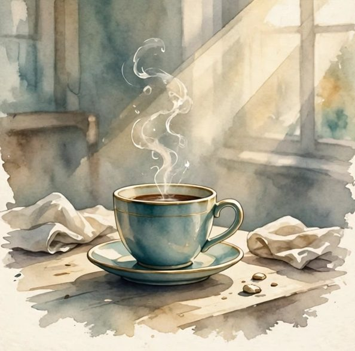
A coffee cup stands in a quiet house at first light, its steam rising through a sunbeam.
The ordinary miracles of that day did not announce themselves, and that was the condition of their quiet power in the telling. No trumpet attended the kettle, no special light broke through the kitchen window, and nobody paused to mark the hour as precious. The day wore the plain clothes of every other day, and its wonders passed in work clothes and house slippers, entirely unremarked. Only later, when the house of memory is walked room by room, do these small events take their proper size in the mind. A door closed softly and held. A cup was warm in the hand. Nothing glittered, and yet, looked at with full attention, the whole morning seems steadily alight.
To call them miracles is not to claim that anything impossible happened between dawn and dark on that chosen day at all. The bread rose as bread ordinarily rises, the water ran clear, the letters arrived or did not arrive in their usual way. What is miraculous, on inspection, is simply that all of it worked together for one whole day without being noticed or thanked. Health, weather, house, and household kept their appointments with one another from hour to hour. The keeper of this hall asks visitors to look slowly, because the wonders here are measured not in scale but in the sheer, sustained ordinariness of things holding. It held, hour after hour, together.
So this hall is deliberately the plainest in the house, and its gold light falls on cups, thresholds, shadows, and steam. Visitors expecting a marvel may walk through too quickly and find only a kitchen, a table, a door, and an afternoon. Those who linger begin to understand that the chosen day was not chosen for its wonders but revealed by attention to have been full of them. The miracle was never hidden behind the ordinary day, waiting for a grander one to replace it. It was the ordinary day itself, seen at last with the care it had always deserved and seldom received while it was being lived. The light in it remains plain.
62Coffee While the House Was Quiet
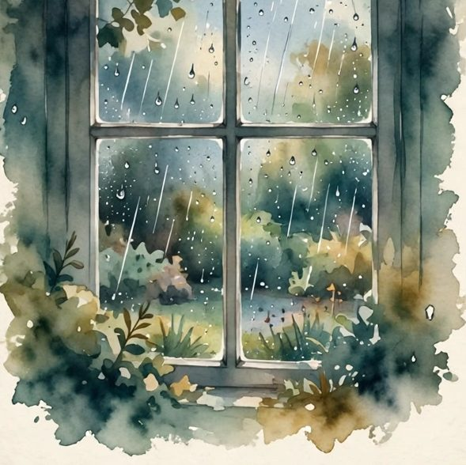
Rain diamonds gather on a windowpane, with a garden soft and green beyond the glass.
There was a cup of coffee taken while the house was quiet, before the day had properly begun to make its demands. The others were still asleep or still elsewhere, the rooms held their breath, and the first light came in low across the table. Nothing had yet gone wrong, nothing had yet been asked, and for the length of one cup the day belonged to nobody in particular. In the reliving, this is often the hour visitors reach first, because its peace is so complete and so brief. They sit down again in imagination beside that cup, and they let the steam rise, and they do not hurry it toward conversation.
The coffee itself was unremarkable, and the house insists on keeping it that way in every honest account of the morning. It was not the finest cup ever brewed, nor taken in a beautiful place built for contemplation and praise. It was ordinary coffee in an ordinary mug, drunk in a kitchen where the day would soon become crowded with errands and voices. Its value lies in the interval it held open, a small room inside the day where one person was awake, warm, and briefly unneeded. Such intervals are easy to spend without noticing, and they are almost impossible to describe later without tenderness gathering around them. It lasted the length of one cup.
Many who choose a day choose it, without knowing, for an interval exactly like this one at the very start of it. The great events of the day may have been fine or painful, welcome or endured, but the quiet cup stands apart from all accounting. It asked nothing and it promised nothing, and it lasted only until a door opened somewhere in the house. The keeper pours no coffee in this hall, because the cup that matters is the remembered one, cooling slowly in its sunbeam. What remains is the lesson of its brevity, carried into every later morning that offers the same unnoticed pause. The next morning rarely offers it so plainly.
63Weather I Paid No Attention To
The weather of the chosen day has to be reconstructed, because at the time almost nobody in the house paid it attention. It may have rained before breakfast and cleared by noon, or held a steady grey that made the windows pleasant to sit beside. Photographs, if any exist, show a sleeve or a shadow and leave the sky itself almost entirely out of the record. Yet the weather was the largest thing in the day, larger than the house, holding every errand and conversation inside its wide, indifferent kindness. To relive the day honestly is to restore that sky to its proper place above the roof. It covered the fields and streets alike.
People remember weather mainly when it inconvenienced them, delayed a journey, or arrived dressed for an occasion in the calendar. The mild days vanish from the account precisely because they made no trouble for anyone who passed through them. In the chosen day, the unremembered weather did its work silently, keeping the garden alive, cooling the afternoon room, and softening the light at the window. Perhaps a wind moved the curtains while a meal was being prepared and nobody looked up from the table. Perhaps the evening was clear enough for stars that went entirely uncounted. The house restores these possibilities without pretending to certainty about any single cloud. It went on being weather, unpraised.
There is a humility in admitting how much of a beloved day was never noticed by the person who now treasures it. Attention, even loving attention, covers only a narrow path through the hours, and the rest proceeds generously without an audience. The weather stands in this hall for everything that accompanied the day without asking to be remembered at all. Rain on glass, warmth on a doorstep, a change of light in the middle of an ordinary sentence, all belonged to the day as fully as its conversations. The visitor leaves this room looking up more often, resolved to grant tomorrow its sky. The sky, once noticed, stays with the day.
64A Song on a Radio Somewhere
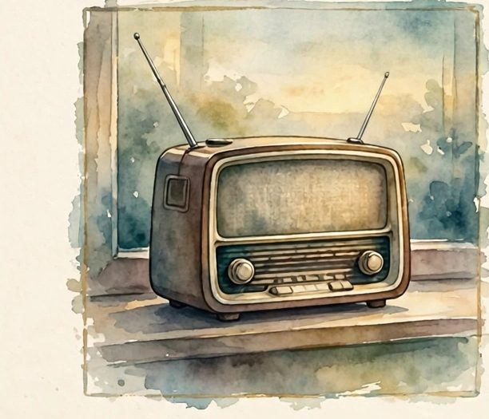
A radio rests on a windowsill, silent now, as if a song had just passed through the room.
Somewhere in the chosen day a radio was playing, in a kitchen, a workshop, or a room whose door stood open. The song was not chosen and it was not listened to closely, yet it entered the day and colored an hour without permission. Ask the visitor to name it and the answer often falters, because the melody was absorbed rather than heard in any deliberate way. A few notes may survive attached to the smell of soap, the turning of a page, or light falling across a floor. The house keeps a silent radio on its sill, honoring a music that did its work and departed unthanked. It played to nobody in particular.
A song overheard belongs to a day differently from a song performed, recorded, or requested for a particular occasion. It arrives from somewhere else, indifferent to the listener, and for that reason it becomes a true measure of the time. Years later it can return entire rooms to mind with a fidelity that deliberate souvenirs rarely manage to achieve. The chorus may bring back the exact quality of an afternoon, the posture of a person now gone, the feel of a task in the hands. Nobody in the day knew they were being given this key. They were simply within earshot, living forward, while the melody quietly took its copy of everything.
This hall does not play the song, because no two visitors would agree on which song it ought to be. One remembers a dance tune from a neighbor's window, another a hymn, another a singer whose name was never learned. The silence on the sill leaves room for each private version to sound briefly in the mind and then fade again. What matters is not the accuracy of the tune but the recognition that the day had a soundtrack nobody commissioned. Ordinary hours are accompanied more richly than memory first admits, and a half-heard song is proof, offered in passing, of that abundance. The silence afterward keeps its shape in memory.
65The Body Worked, Unthanked
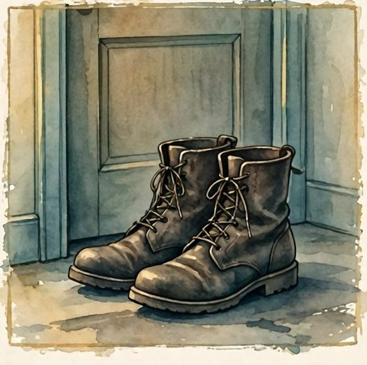
A pair of strong boots stands by a door, ready for a road they would carry without complaint.
On the chosen day the body worked, and it worked so faithfully that it was never once thanked for its labor. Legs carried their owner up stairs and down garden paths, hands lifted, held, opened, mended, and set things gently down again. Eyes read the small print, ears sorted the voices at the table, and the heart kept its unobtrusive rhythm beneath every conversation. In the reliving, visitors often grow quiet in this room, because they are comparing that unconsidered strength with whatever they carry now. The boots by the door stand ready in the picture, patient, as if the road outside were still an easy promise. The road outside waited without impatience.
Youth is not the only form this unthanked working takes, and the house is careful not to make it a simple lament. A body may have been older on the chosen day and still equal to everything the day asked of it. It climbed, it rested, it recovered by morning, and it asked for so little notice that gratitude never occurred to anyone. The miracle is not perfection but sufficiency, the daily agreement between intention and limb that lets a life proceed without negotiation. To remember such a day is to remember an ease so complete that it left almost no trace in the diary beyond the errands it made possible.
The keeper asks only that the working be acknowledged now, in the telling, since it was not acknowledged then in the living. A hand that turned a key, a back that bore a basket, a voice that lasted through a long evening of talk, all did faithful service. Thanking them late is not a transaction and it settles no account with the passing years at all. It is simply attention arriving where it was once owed, like a letter delivered to a house that has long since emptied. The visitor walks on through the hall a little more slowly, and a little more gratefully, for having noticed. The house records the service without exaggeration.
66Everyone I Loved Was Reachable
On the chosen day, everyone the visitor loved was reachable, and this plain fact may be the largest one in the entire house. A telephone call would have found them, a letter would have arrived, a knock at the door would have been answered by a living hand. Nobody had yet become an address that no longer answers, a number kept in a book for the tenderness of not crossing it out. The day did not feel charmed on this account, because reachability is invisible while it lasts. It is only the later arithmetic of loss that reveals how complete the circle standing around that table truly was. The circle was complete without ceremony.
Reachable does not mean near, and the house is precise about the distances that the chosen day comfortably contained within itself. Some of the beloved were in other towns, other houses, other countries, living days as full and unremarkable as this one. What mattered was that the thread between them and the visitor still ran unbroken through the ordinary world of posts and wires. A message sent would arrive, and a reply, however slow, could still be reasonably expected in time. That expectation is one of the quiet structures a life rests upon, noticed only in the moment when it can no longer be assumed. The wires hummed with possible voices.
To relive such a day is not to make the calls that were never made, at least not in the house's own understanding. It is to sit for a while inside the completeness of the circle and to feel its shape at full stretch. The chairs around the table stand close, not because everyone was present, but because everyone could, in principle, have been summoned home. Visitors leave this room with a gentler sense of their present company and its own unnoticed reachability. Today's circle, whatever its gaps, also contains voices that can still be called before supper, and the day suggests calling them. The suggestion is plain and timely.
67A Door That Still Opened Both Ways
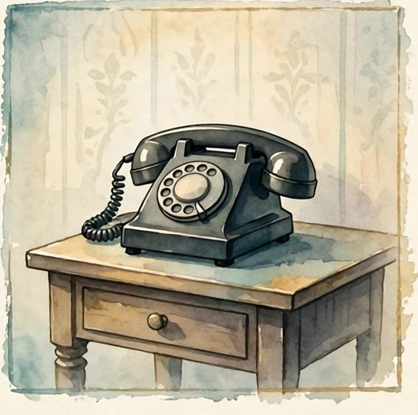
An old rotary telephone waits on a hall table, its still dial holding every voice within reach.
In the chosen day there was a door that still opened both ways, and the visitor passed through it without a thought. It might have been the door of a house, a shop, a friendship, or a kind of work that welcomed coming and going alike. To enter was easy and to leave was not a farewell, because return stood always available on the other side of the threshold. Many doors, in the years since, have quietly become one-way, opening only onto memory when they open at all. The house keeps this one standing open in gold light, hinged as it was, when passage still felt like a permanent arrangement.
A door that opens both ways teaches nothing while it swings, and that is precisely why it belongs among the ordinary miracles. The visitor of that day had no reason to pause on the threshold, test the hinges, or thank the carpenter who hung it true. Departures were errands and arrivals were habits, and the space between houses was crossed as casually as a room. Only a later closing reveals what the open door had been providing all that time, which was the freedom to treat every parting as temporary. In the reliving, people linger on this threshold longer than anywhere else, reluctant to be the one who finally walks through.
The house does not lock its door, nor does it pretend that the remembered one can be walked through into the day. The open door here is an emblem, kept bright, of a period when certain comings and goings required no courage at all. Its lesson is not sorrowful unless the visitor insists on making it so in the quiet of the hall. It is, instead, an instruction for the present, where other doors still swing both ways and are passed through daily without gratitude. Notice them while they swing, the hall suggests, and oil the hinges with a little deliberate, unhurried attention. Pass through present doors slowly, it says.
68The Meal Nobody Photographed
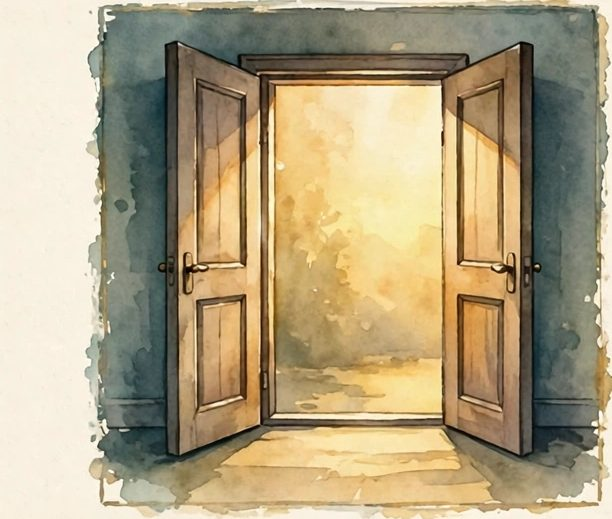
A door stands open in gold light, swung wide on hinges that allowed passage in either direction.
The meal at the center of the chosen day was never photographed, and so it survives only in the unreliable keeping of appetite. Nobody arranged the plates for a record, nobody held the bread up to the light, and the steam rose and vanished without a witness beyond the hungry. What remains is a flavor half remembered, a seating order argued over fondly, and the certainty that everyone ate well and stayed long at the table. In an age that keeps pictures of everything, this unrecorded meal has become oddly precious to the visitor. It belonged entirely to the people who were there, and it still does, undisturbed by any audience.
An unphotographed meal asks memory to work in its older way, through the senses rather than through the archive of images. The soup is recalled by its warmth in the hands, the bread by the sound it made when it was broken open. A voice across the table returns more clearly than any face arranged and smiling for a lens would have done. There is loss in this method, certainly, since details fade and recipes go unwritten into the keeping of the cook. But there is also a kind of completeness, because the meal was never divided between the living of it and the showing of it. The table kept faith with appetite.
The keeper sets a plain table in this room and deliberately leaves it without any means of being recorded. Visitors sit, in imagination, where they once sat, and they let the meal be exactly as ephemeral as it was on the day. Nothing is posed, nothing is preserved, and the bread is broken for eating rather than for keeping in any form. When they rise, they carry away no image, only the renewed knowledge that a thing need not be captured to be fully theirs. Some of the best hours of the present day, the hall implies, might also be left honorably unphotographed. The meal stays where it belongs, untaken.
69Time Felt Slow That Day
Time felt slow that day, in a way that later years, with their hurrying seasons, have made difficult to believe or recover. The afternoon seemed to have rooms inside it, one opening into another, with no bell ringing anywhere to close them in turn. A task could be finished and still leave an hour standing idle by the window, available for looking out at nothing in particular. Children know this weather of time well, and some fortunate adults have known it on certain unguarded days of their lives. The chosen day, remembered honestly, often turns out to have been one of those wide, slowly moving afternoons. It stretched, and nobody wished it shorter.
The slowness was not idleness, exactly, because the day contained its full share of work, meals, errands, and talk. It was, rather, an absence of pressure at the edges, as if the hours trusted one another not to crowd or compete. A conversation could wander and return without anyone glancing toward the next obligation waiting beyond the door. Even waiting itself felt different then, less like a theft and more like a bench provided along the road. Memory exaggerates many things, but visitors insist on this one with unusual confidence, because the body remembers spacious time the way it remembers a house it once lived in. The hours kept faith with one another.
The house cannot slow time for anyone, and it does not claim that the chosen day was slower by the clock. By the clock it was twenty-four hours, neither more nor less than the day that followed it or preceded it. What differed was the attention moving through it, unhurried, taking the hours at walking pace instead of at a run. That pace, the keeper suggests, is the one portable thing in the entire exhibition of the chosen day. A present afternoon, given the same unguarded attention, will sometimes widen in the same surprising way, and the discovery feels less like nostalgia than like a door quietly reopening. The afternoon gives back its breadth.
70Nothing Was Known to Be Ending
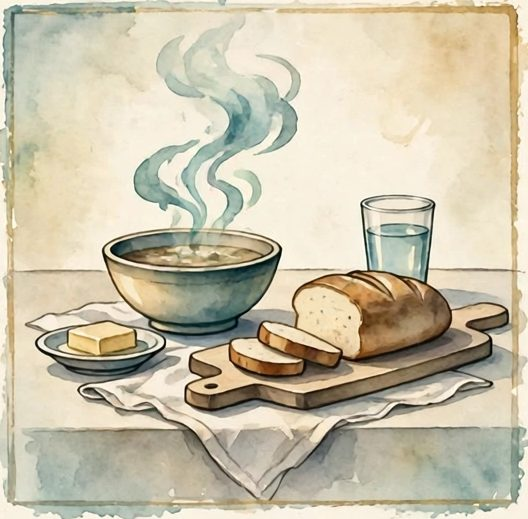
A plain meal steams beside fresh bread on an unadorned table, kept for appetite rather than for any record.
On the chosen day, nothing was known to be ending, and the entire day was lived inside that merciful and complete ignorance. The season would turn again, the people would meet again, the house would hold its shape, and the work would resume on Monday as it always had. If something precious was in fact in its final weeks, it gave no sign and demanded no ceremony from anyone present. Breakfast was eaten at the usual pace, plans were made carelessly for a future that everyone assumed in good faith. The day was ordinary partly because it believed, without ever saying so, in its own continuation into many more ordinary days.
Knowledge of an ending changes the temperature of every hour it touches, as anyone who has lived a last day knowingly can testify. Voices are memorized, hands are held deliberately, and even the weather is pressed into service as a symbol of departure. The chosen day was spared all of that, and its freedom from significance is exactly what the visitor now finds so moving to contemplate. Nobody performed their part for posterity, nobody said the perfect sentence, and nobody needed to, because the day was not an ending at all. It was a middle, lived with the blessed carelessness that middles are entitled to enjoy in any life. The middle held its people gently.
The house treats this ignorance with respect and refuses to mock it from the vantage point of everything known since. To have known would not have improved the day, whatever the visitor, in the first ache of reliving, may insist to the keeper. It would only have made the day heavier, more watchful, and less itself in every remembered particular of light and talk. The mercy of the unmarked ending is that the people in it were allowed to be simply themselves, unposed and unguarded. The visitor takes that mercy as a companion into the present, where today's middles are also passing, unmarked, and deserving of ease. Ease, too, deserves a place in memory.
71Miracles the Size of Minutes
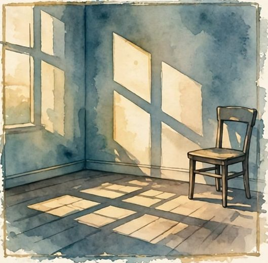
A slow afternoon shadow crosses a quiet room, marking hours that refused to be hurried.
The miracles of the chosen day were the size of minutes, and they require a small scale and a patient eye. A minute in which the light changed on the wall while a kettle came, at last, to its cheerful and ordinary boil. A minute of standing at a window with nothing to decide, watching weather cross a garden that asked for nothing. A minute when a familiar step sounded on the path and the whole house, without a word, arranged itself for welcome. None of these would survive being enlarged into an event, and the hall keeps them small on purpose, in frames no bigger than they were. Each minute keeps its own small frame.
Large wonders are easy to agree upon, because they announce their dimensions to everyone standing anywhere near them at the time. Small ones are a private currency, and visitors to this hall sometimes struggle to explain theirs to a companion at the desk. The minute when a hand rested, the minute when a song came through the wall, the minute when nobody needed anything from anybody else. The keeper does not arbitrate between these accounts or rank them by any scale the house officially recognizes. Each minute is entered in the register exactly as reported, in plain words, and left to shine at its natural and modest size. Their shine needs no enlarging at all.
There is a discipline in looking for wonders at this scale, and it changes the way a visitor reads every other room. The day stops being a story with a few bright peaks and becomes a fabric, fine at every point of its weaving. Even the dull minutes are found, on inspection, to have been carrying something small and warm at their center. The hall's final suggestion is a practice rather than a sentiment, and it travels well beyond the walls of this particular house. Count the present day in minutes occasionally, the keeper says, and some of them, even now, will quietly declare themselves miraculous. The practice begins with a single minute.
72Ordinary, Seen at Last
At the end of this hall the visitor arrives at the simplest sentence in the house, which is that the day was ordinary. It was ordinary when it was lived, ordinary in its weather, its meals, its errands, and its unremarkable, unrecorded hours. What has changed is not the day but the seeing of it, refined by distance into something clear, tender, and exact. The chipped mug on the counter, the folded cloth beside it, the last light lying where it always lay at evening. Nothing has been gilded in the telling, and yet the plain inventory reads, by now, like a list of treasures kept in a quiet house.
Seen at last does not mean seen completely, and the keeper is honest about the limits of any return in memory. Whole hours of the chosen day are gone beyond recovery, and others have been rearranged by the years into a tidier order than they kept. The house accepts these gaps as part of the exhibit rather than failures to be disguised with invention or ornament. What remains is enough, a day recognizable to those who lived it and instructive to those who only visit it in the telling. Ordinary, seen at last, turns out to be a description not of the day's poverty but of its enduring and sufficient wealth.
The visitor leaving this hall carries the sentence into the rest of the house, where harder questions about change are waiting ahead. If the day was ordinary and is now precious, then preciousness was never a property of rare occasions or of grand arrangements. It is a property of attention, which can be practiced on any day that a life is given to live through. That thought steadies people at the threshold of the next hall, where the wish to alter the day will be examined honestly. They go forward knowing what the day is worth exactly as it stands, before a single thing in it is touched. That worth is the hall's whole argument.
73If I Could Change One Thing
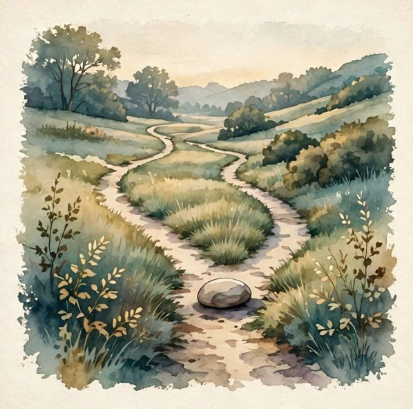
A fork in a path holds one smooth stone placed at its turning, where a choice was quietly considered.
The next hall opens with the question every visitor has been carrying quietly through the house since the very first room. If the day could be lived again, and if one thing, only one, could be changed, what would that one thing be. The house does not forbid the question, because forbidding it would only drive it underground to work in secret. Instead the question is given a room, a bench, a fork in a path with a smooth stone placed at its turning. Here the wish can be examined in daylight, measured honestly, and priced in the full knowledge of everything the day contains. The question has waited long enough.
One thing is a severe and useful limit, and it disciplines the imagination far better than unlimited power ever could. Given everything, most visitors would dissolve the day entirely, improving it into a different day that nobody actually lived or remembers. Given one thing, they must choose, and the choosing reveals what the day truly taught them in the years since it ended. The change they name is almost never the largest misfortune the day contained within its ordinary and unremarkable hours. It is smaller, more personal, and more precise, a sentence, a departure, a staying, a door approached a moment too late or left a moment too soon. Precision gives the wish its weight.
This hall promises nothing about the change, and the keeper repeats the house rule at its threshold for every arrival. Reliving here is remembering with full attention, and the one thing is a thought carried through the day, not a deed performed upon it. Yet thinking it through is far from idle, because the chosen change is a message from the present self to the living of future days. What a person would alter in a finished day shows exactly where their attention now believes it failed. The rest of the hall is given to hearing that message carefully, room by room, before the day ends again. The message is meant for living days.
74One Thing, Not Everything
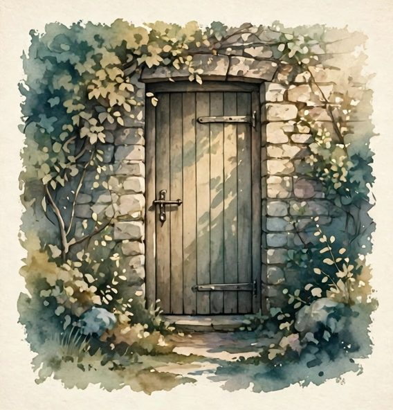
A door not taken stands closed gently in kind light, looked at rather than passed through.
The rule of this room is written in its title, and the keeper enforces it with courtesy and complete firmness throughout the hall. One thing may be chosen for changing, and everything else in the day must be allowed to stand exactly as it was. The restriction surprises visitors who arrived imagining a general revision, a day swept clean of every error and embarrassment it contained. They discover, usually within minutes, that the single permitted change is quite enough to occupy an honest mind for an hour. A door not taken stands in kind light in the picture, closed gently, representing all the everythings that must remain untouched. The rest must stand, untouched and entire.
Everything is tempting because everything is vague, and vagueness costs nothing to wish for in the privacy of a thought. One thing, by contrast, has edges, a price, and consequences that can be followed through the rest of the day like a thread. Change the hour of leaving and the meeting on the road may vanish along with the delay that caused it. Change the sentence and the conversation that grew from its awkwardness may never take place at all in the evening. The house insists on this arithmetic not to discourage the wish but to make it truthful, one alteration weighed against the whole fabric it would quietly disturb.
Visitors who accept the rule often find their choice growing smaller and more exact as they walk this room through. The sweeping rescue becomes a single visit paid, the grand correction becomes one name spoken aloud at the proper moment. This narrowing is the hall working as intended, bringing the wish down from fantasy to the scale of an actual human day. Not everything was wrong, the room points out, since the day itself was chosen out of a whole life for revisiting. One thing, not everything, is therefore also a form of loyalty to the day that was, defended against its own most devoted reviser. Loyalty, here, is a form of accuracy.
75The Change I Would Choose
Asked to name the change they would choose, most visitors lower their voices, as if the day itself might overhear them. The answer, when it comes, is rarely dramatic and almost never concerns money, weather, or the large arrangements of a life. It is a chair drawn nearer to the table, a visit not postponed, a question asked while there was still time to hear its answer. It is the walk taken together instead of the errand taken alone, the letter written on the day it was first thought of. Smallness, in this room, is not a disappointment but the signature of a change that has been honestly and carefully considered.
The chosen change usually concerns attention rather than fortune, and the keeper notes this pattern without making a doctrine of it. People seldom wish they had been richer on the chosen day, or more admired, or spared the work that filled its middle hours. They wish they had been more present at a particular moment whose value was visible, even then, to anyone who slowed down enough to look. That is what gives the exercise its ache and also its practical use for the living. The moment can no longer be attended, but its kind recurs, in other rooms, on other days, before other people who are still here. The pattern repeats wherever people gather.
One chair drawn nearer is the emblem this room keeps, because nearness is the change most often named at the desk. A person sat too far from the conversation, too far from the fire, too far from the one voice they would now give years to hear again. The distance was nothing at the time, a matter of furniture and habit, easily crossed by anyone who thought of crossing it. The visitor rises from this room resolved to cross such distances early, while crossing is still a simple matter of standing up. The chosen change, unchangeable in the day, becomes entirely changeable in all the days that remain. Nearness, practiced early, becomes a habit.
The Chosen Day Desk
One desk receives all correspondence for this house — questions, corrections, and word of any day a visitor would relive: the choosing of it, its hours, its people, the one thing they might change. It is read in the order it arrives.
76The Change I Would Refuse
A bench cushion keeps the dent of someone who stayed, in a place where ten minutes mattered.
For every change a visitor would choose, there is another that the same visitor, thinking longer, would firmly refuse to make. It may be the painful hour, the awkward failure, the piece of bad luck that the day is often remembered by. Offered the power to strike it from the record, the hand hesitates, because removing it would remove everything that grew in its long shadow. The bench in the picture keeps the dent of someone who stayed, a reminder that presence often matters more than comfort. Some things in a beloved day are load-bearing, and the house teaches its visitors to test before they wish anything away. The unwelcome hour also carried weight.
Refusal is not stubbornness, and the keeper distinguishes it carefully from a mere fear of tampering with a finished thing. The visitor who refuses a change has usually traced its consequences further than the visitor who first proposed it in haste. Take away the hard season and the friendship formed inside it loses its ground and its reason for existing at all. Take away the failure and the humbler, steadier person who emerged from it becomes difficult to account for in the present. The day, examined whole, turns out to be an ecology, in which even the unwelcome weather fed something that the sunny hours could not. Nothing essential stands alone in it.
This room honors refusal as a mature answer, equal in standing to any change proposed elsewhere in the hall. To say that one thing, looked at honestly, should stand is to have understood the day rather than merely endured it twice. Visitors sometimes arrive at the keeper's desk surprised by their own refusal, having entered the hall certain of what they would alter. They leave with a quieter relationship to their history, not reconciled by slogan but persuaded by evidence, hour by hour. The dent in the cushion remains, the staying remains, and the day keeps the shape that a real life, lived forward, actually gave it. The shape is accepted, not merely kept.
77A Word Said Earlier
A gate stands after an early leaving, with morning lying bright and open beyond its bars.
Among all the changes proposed in this hall, the commonest is a word, and the change proposed is almost always its timing. The word itself was eventually said, in most accounts, but it was said late, after the day, sometimes after the year, sometimes barely in time. In the reliving it moves forward, to the morning, to the table, to the moment when it would have cost least and given most. Thank you, said earlier. Stay, said earlier. Forgive me, said before the gate rather than remembered beyond it, with morning lying open on the other side. The house gives this small, enormous wish a room of its own. The gate was waiting for it.
The word said late is not worthless, and the keeper corrects any visitor who tries to write off its later arrival entirely. Late words have fed people, closed distances, and carried warmth across years that might otherwise have stayed cold and unvisited. But everyone who has said one knows the difference its timing would have made to the day under discussion here. Said earlier, it would have changed the weather of an afternoon, given someone an easier evening, perhaps an easier year of remembering. The wish to move it is therefore not ingratitude toward the word that was eventually spoken. It is loyalty to the moment that was waiting, at the time, to receive it.
This room's instruction for the present is so plain that visitors sometimes laugh when the keeper delivers it at the door. Say the word earlier, now, in the days that are still being lived and have not yet become anyone's chosen day. The word is known, the person is reachable, and the moment, examined honestly, is usually no worse than the moment in the memory. Nothing in the hall can move a word backward through a finished day, and the house has never pretended otherwise to anyone. Everything in it, however, conspires to move the next word forward, into the hour where it can still do its simple and timely work.
78A Door Not Taken, Looked At
Every chosen day contains a door that was not taken, and this room exists so that it can be looked at properly. It might have been an offer declined, a turning passed on the road, an application never sent, a conversation never begun at the gate. At the time it closed without drama, one possibility among many in a day too full to examine each of its branches. In the reliving it draws the eye, because a life lived forward always makes its untaken doors more visible than its taken ones. The visitor is invited to stand before it in kind light, neither opening it nor turning away in haste.
Looking at a door is not the same as regretting it, and the house maintains the distinction with care throughout this room. A door not taken may have led to a lesser day, a harder year, or a life in which the chosen day itself never happened at all. Its light, the thin line showing beneath it in the corridor, proves only that something existed on the other side, not that it was better. Visitors who grasp this find the looking becomes peaceful, an act of inventory rather than of accusation against their younger selves. The door is part of the day's architecture, and a house is not dishonored by having more doors than its people used.
What the room finally teaches is a way of carrying alternatives, lightly, as companions rather than as reproaches along the road. The untaken door stays in the story, marking where the day branched and where the life, choosing as it had to, went the other way. There will be doors in the present week that close just as quietly, noticed or unnoticed by the person passing them by. The visitor leaves this room less inclined to grieve them in advance and more inclined to notice them at the time. A line of light beneath a door, seen clearly, is sometimes all the guidance a day honestly offers anyone. Notice, the room says, while noticing helps.
79Staying Ten Minutes Longer
A blank apology card leans against the base of a lamp, its ruled quiet waiting for words.
The change most often described at the desk, in the keeper's experience, can be measured on the plain clock above the door. Not an hour, not an evening reclaimed, but ten minutes, stayed longer at a table, a bedside, a gate, a platform, a fire. Ten minutes more of a conversation that was ending too politely, ten minutes before the coat was taken from its hook by the door. The smallness of the measure is part of its truth, because nobody at the time would have refused so modest an extension. It was not denied, only unasked, and the day moved on in its ordinary way, carrying its people with it.
Ten minutes, examined honestly, would rarely have changed the large facts of anything that followed in the years after. Trains would still have been caught, letters still sent, and the future would have arrived wearing much the same face as before. What the ten minutes would have changed is the texture of the memory itself, thickening it at exactly the point where it now feels thinnest. One more story begun, one more silence shared without embarrassment, one more look at a face that was about to become younger in memory forever. The blank card by the lamp waits in the picture for words, and staying, the room suggests, is also a kind of sentence.
The present tense of this wish is the easiest in the whole hall to practice, and the keeper says so without any ornament. Staying ten minutes longer requires no rare courage, no rearrangement of a life, and almost never any money worth mentioning at all. It requires only noticing the moment of leaving and treating it as a decision rather than as a habit to be obeyed automatically. Visitors practice it in the house itself, lingering in this room after they believe they have finished with it. The day they chose cannot receive their extra minutes, but the day they are living can, and frequently does, with gratitude. Ten minutes can be given almost anywhere.
80Leaving Ten Minutes Earlier
A diving board extends over calm water at dawn, unused yet, with the possible plunge still imagined.
The companion wish to staying longer is leaving earlier, and this room gives it equal standing and equal courtesy from the keeper. Some visitors know the exact minute they should have taken their leave, before the kind conversation soured or the good day tired itself out. Before the extra drink, the extra remark, the return to a subject that the evening had already mercifully allowed to rest in quiet. A gate left earlier than planned can open onto a clean morning, and a timely departure can preserve a day exactly at its best. The diving board in the picture waits over calm water, a reminder that timing is also a form of respect.
Leaving earlier is harder to wish for honestly, because it requires admitting that one's own presence was, at some point, too much. The visitor must imagine subtracting themselves from the final part of a scene they would otherwise love to inhabit again. Yet many choose it here, quietly, having understood that the last ten minutes cost the day more than the first ten had given it. A word too many can stand in memory where a whole afternoon of good talk should have stood unobstructed. To leave earlier would have been, in those cases, a small and genuine act of care for everyone still seated at the table. Care can look like an early goodnight.
The hall does not turn this into a rule about departures, because knowing when to leave is an art that resists all instruction. It offers only a sharpened attention to the turning of an occasion, the moment when staying changes its character and begins to spend. Visitors carry that attention out of the house and into dinners, visits, and conversations whose endings are still theirs to shape this week. Ten minutes is the measure the keeper keeps returning to, in staying and in leaving alike, because it is small enough to be real. A day is not remade by such minutes, the room concludes, but it is very often, in memory, redeemed by them.
81The Apology That Day Needed
Every chosen day seems to hold one sentence that arrived too late, or never arrived at all, and the apology is usually the plainest of them. It was not a grand confession that the day required, nor an explanation that rearranged the past into a tidier shape. It was a small, honest admission, spoken while there was still time for it to be ordinary. I was wrong in that moment. I spoke too quickly. I did not listen when listening was the whole of what was asked. Said then, it would have cost almost nothing, which is precisely why its absence still weighs so much in the telling. The room holds that small sentence up, unadorned, and lets its weight be felt.
The house does not pretend the words can now be delivered into that afternoon and heard by the ears that needed them then. Reliving, in this room, means hearing the apology clearly at last, in the voice that should have spoken it, and understanding exactly where it belonged. Between the sharp remark and the long silence that followed it, there was a doorway. A person stood on either side of that silence for the rest of the day, each perhaps waiting for the other to cross first. Naming the apology does not cross it now. It only shows the doorway plainly, without decoration and without excuse. The silence, examined this closely, stops looking empty and starts looking inhabited.
What remains possible is more modest and more useful than delivery into a finished day. The apology can be learned by heart, so that its shape is known the next time a similar moment opens in a living room or at a living table. It can also, where the person is still here and the matter still stands between you, be spoken in the present, plainly and without demanding anything in return. That is a present act, not a revisiting. The keeper asks only that the visitor distinguish the two, honor the day by telling the truth about it, and carry the sentence forward rather than bury it again. Nothing else is asked of the visitor in this room today.
82The Risk, Taken That Day Instead
A scale stands in balance, one small stone weighing honestly against a drift of pale feathers.
There was, in almost every chosen day, a moment when the safer road and the braver road lay side by side, and the feet chose safety before the heart had finished speaking. The risk that was refused was seldom wild. It was an application sent, a question asked aloud, a hand extended, a truth admitted while there was still light to admit it by. In the telling, that moment glows with a particular clarity, because everyone in the room now knows what the refusal cost and what the years made of the road that was taken instead. The years have not answered the question either way, and they are not going to.
To imagine the risk taken is not to declare that it would have succeeded, and the house is careful on this point. The venture might have failed in full view. The question might have been answered with a plain refusal. The extended hand might have hung in the air, unmet, while the room learned a new awkwardness. Honest imagining keeps all of those outcomes on the table beside the hopeful one. What changes is not the certainty of the result but the knowledge of oneself. A person who had dared would have lived thereafter as someone who had dared, whatever the answer had been. The dare itself, not its outcome, is what this room keeps returning to.
The value of standing in this room is therefore not a promise about a day that is finished, but a rehearsal of recognition for days that are not. Risks rarely announce themselves in large letters. They arrive as small, unremarkable thresholds, easy to step around and easier still to forget until years have made them legible. Having looked long at the one that was refused, a visitor may know the shape of the next when it appears in ordinary clothing. The day keeps its ending. The visitor keeps the lesson, and carries it forward into weather that has not yet been lived. That recognition, once learned, tends to stay learned for a very long time.
83Small Changes, Honest Prices
A quiet room stands exactly as it was, except for one chair moved a little from its place.
A small change looks harmless in the telling because only its first step is visible, and the first step is usually modest. A word said earlier costs a moment of courage. A door not taken costs nothing but curiosity, at first. A visit lengthened by ten minutes costs only ten minutes, until the visitor remembers what else those ten minutes were holding. Every alteration, however gentle, reaches into rooms the imagination has not furnished. The people in that day would have answered the changed moment in their own ways, and their answers would have altered the hours that followed in a lengthening chain. The keeper lets the visitor hold both ends of that chain at once.
The honest price of a small change therefore includes uncertainty itself, and the house insists that the price be stated whole. To move one chair in a remembered room is easy. To know who would have sat in it, what conversation would have turned upon it, and what would have been lost when the familiar arrangement gave way, is beyond any visitor. This is not a warning against imagining. It is a condition of imagining well. The change may still be chosen in the experiment, held up to the light and considered seriously, provided its unknown costs are admitted alongside its hoped-for gains. Imagination without that admission is merely decoration, and this house does not decorate.
When the accounting is done honestly, something unexpected often happens in this room. The change grows less commanding, and the day as it was grows more legible. The visitor sees that the wish to alter one thing was sometimes a wish to have been more attentive, more patient, or more brave, and that wish can be honored without moving any furniture at all. The chair returns in thought to its place. The rest of the room stands as it stood. What has shifted is not the day, but the person who came to look at it, and that shift is real. It can be carried, and it does not fade when the door closes.
84One Thing, and the Rest Stands
This hall closes with a simple settlement, agreed before the visitor leaves it. One thing was considered, weighed, perhaps even chosen in imagination, and everything else in the day was allowed to remain exactly where memory had placed it. The breakfast stays as it was served. The weather keeps its indifference. The people keep their own words, their own silences, and their own unknowing. To grant one change its full attention, the rest must be granted its full dignity, otherwise the experiment dissolves into a general wish that the day had been another day altogether, which is a wish this house does not keep. That settlement, once made, gives the whole hall its particular quiet.
There is a discipline in leaving the rest standing, and it is harder than it first appears. The mind, having moved one piece, wants to move a second for symmetry, then a third for comfort, until the whole day has been redecorated beyond recognition. The keeper allows only the single alteration onto the table, and even that one is handled like a borrowed object, examined and set down again. The discipline teaches proportion. It shows how much of a life is held in arrangements nobody chose deliberately, and how respectfully a guest should move among them, even when the life under review is the guest's own. Proportion, patiently kept, turns out to be a form of tenderness.
So the visitor leaves the hall with one imagined difference and a day otherwise intact, and that proportion is the point of the exercise. The one thing matters because the rest stands around it, unchanged, giving it scale. A single earlier word is moving only because the conversation around it was real. A single longer stay is precious only because the leaving still happened. Carried this way, the chosen change becomes a lens rather than a lever, a way of seeing the day whole. The door closes behind the visitor, and the day, altered nowhere but in understanding, rests in its rooms. Nothing in the rooms has been disturbed by the looking, and that matters.
85The Day Ends Again
The chosen house stands in dusk for the second time, its windows dimming as the day is let to end.
It begins, as it began the first time, with the light going. The evening of the chosen day does not know it is being visited, and it proceeds at its own unhurried pace toward the same lamps, the same supper, the same ordinary tiredness settling over the rooms. The visitor who has walked the day hour by hour now arrives at the part that cannot be postponed by attention. Whatever was lingered in has been lingered in. Whatever was studied has been studied. The day gathers itself, as days do, into its final hour, and the house grows quiet around the knowledge that this ending was always part of the invitation.
To watch a day end a second time is a different experience from watching it end the first, when nobody understood that it would one day be chosen. Then, the evening was merely the evening, unremarked and unthanked, the light assumed to be the first of an endless supply of similar lights. Now every detail carries the weight of scarcity. The sound from the kitchen is the last of that sound. The face across the table is lit that way for the last time in that arrangement of years. Nothing in the scene has changed. Everything in the seeing has, and the seeing is what the visitor brought. Scarcity, in this house, is never used to frighten anyone into feeling.
The keeper does not soften this hour, because softening it would falsify the whole experiment. The day ends again. That was the agreement written into the choosing from the start, and honoring it is what separates a visit from a refusal to leave. Yet the ending in the telling is not a theft. The visitor was given the day entire, from its dawn kitchen to this window, and was allowed to be present in it with a fullness the first living never permitted. The lamps come on. The street darkens. The visit completes itself in the only way a visit honestly can, by ending. What was given was enough, and the ending does not take it back.
86Letting It End the Second Time
On a present-day desk, the journal of that day lies closed, its ribbon resting where the telling stopped.
Letting the day end the second time is an act, not a surrender, and it has its own small ceremony in this house. The visitor stops extending the evening. The imagined extra conversation is allowed to remain unspoken in its imagined room. The hand that would have been held a minute longer is, in the telling, gently released, because holding it forever was never among the choices on offer. There is grief in the gesture, and the keeper names it plainly. There is also relief, quieter and less expected, in discovering that an ending can be met deliberately rather than merely suffered when it arrives unannounced. The ceremony takes less than a minute, and it is not repeated.
Many visitors resist here, and their resistance takes familiar forms. They return to the morning and begin the telling again at once, unable to leave the house while its windows are still lit in the mind. They bargain for one more hour, as the reveal at the desk so gently phrases it, and then for one hour more. The house permits the lingering without endorsing the bargain. A day revisited too often without being released begins to thin, its colors handled too frequently, and the present outside the door grows dim by comparison. Letting it end protects the day as much as it protects the visitor. The journal, closed at the right hour, keeps its colors far longer.
What letting go looks like, in practice, is unremarkable, which is fitting for a house devoted to ordinary days. The journal of the visit is closed. The rooms are left in their order. Thanks are said, silently or aloud, for what the day was and for what the telling gave, and nothing further is requested of either. Then attention turns, deliberately and completely, toward the evening that is actually unfolding on the other side of the door. The day ends again, as agreed. The visitor, having practiced the ending, finds it was not an emptiness but a threshold, and steps across it carrying the whole day, ended and intact. The threshold, once crossed, turns out to have been a doorway home.
87Back in the Present, With the Day
The return is not dramatic, and visitors are often surprised by its plainness. No threshold shimmers. The present simply resumes its ordinary claims: a room to be tidied, a message to be answered, an evening meal to be thought about, a body that has been sitting still too long in a chair. Yet the person who stands up from the telling is not quite the person who sat down to it. The day has been carried back across the whole distance between then and now, not as an escape from the present but as company within it, and the present looks slightly different for the company it now keeps. Company, unlike escape, asks nothing of the present except room.
At first the two days lie side by side, and the comparison can ache. The past day is complete, lit, and known, while the present day is unfinished, unlit in places, and full of people who do not know they are standing inside somebody's future memory. Given time, the ache settles into something steadier. The visited day begins to instruct the unfinished one. Attention, practiced all day on the dead hours, finds living hours to practice on. The face across the present table receives, perhaps for the first time, the study that was learned too late at another table in another year. The learning arrives quietly, in the middle of an unremarkable conversation.
The keeper counts this settling as the true end of the visit, later than the closing of any journal. A visitor has properly returned when the chosen day stops being a place to go and becomes a way of being where they already are. The kettle is lifted. The window of today is looked through, and actually seen. Nothing about the present has been rearranged, and yet it is inhabited more fully than it was in the morning. That fuller inhabiting, carried quietly into supper and errands and rest, is the day's work in the present, and it continues long after the telling ends. Ordinary errands, seen this way, stop feeling like interruptions of a life.
88What the Reliving Leaves Behind
A tied journal takes its place on a shelf among others, the day returned to its row in quiet order.
When the visit is over, visitors often ask what they are left with, as if the day should have handed them something at the door. The house answers by inventory rather than by slogan. What remains is a set of sharpened instruments. An eye that has learned which details carry a day: not the ceremony but the cup, not the announcement but the voice in the hallway. An ear tuned to unremarkable sentences that may, in ten years, be remembered word for word. A patience with ordinary hours, having seen at last how much of a life is quietly decided inside them and how rarely they announce their importance while they pass.
There are also, honestly entered in the inventory, some heavier items. A knowledge of specific sentences that went unsaid can sit in a person for days after the telling. An apology identified and undeliverable to its hour does not immediately lighten. The sight of people who are gone, present and unknowing in the day's light, leaves a tenderness that has nowhere particular to go. The keeper does not hurry visitors past these weights or pretend they are gifts in disguise. They are part of what the reliving leaves behind, and carrying them for a while, attentively, is part of the work the house exists to make possible. The keeper records them in the same hand as everything else here.
What does not remain is equally important, and the inventory closes with it. The reliving leaves behind no power over the day, no revised record, and no exemption from the unfinished business of the present. The day was not improved by being visited, and the visitor was not absolved by visiting it. What remains is attention, memory made orderly, and a clearer knowledge of what one particular day contained and what it asked. These are modest holdings. The house suggests, by the way it shelves its journals in neat and unhurried rows, that modest holdings, kept carefully, are exactly the kind that last. Kept in that spirit, they tend to go on working for years.
89Attention, Trained by a Dead Day
On a new ordinary morning, a cup is raised slowly at the same table, in the same attentive light.
A finished day is the finest teacher of attention, precisely because it can no longer be helped or harmed by being watched. In the telling, nothing depended on the visitor noticing, and so noticing became pure. The light in a remembered kitchen asked for nothing. The unremarkable hour made no claim. Freed from usefulness, attention could settle at last on what was actually there, and a visitor who has spent a whole day in that kind of seeing does not simply switch it off at the door. The training lingers, the way any practiced craft lingers in the hands after the lesson ends and the tools are set down. Pure noticing, practiced for a day, changes the instrument it used.
The first sign of the training is usually small. A present breakfast is tasted instead of merely eaten between other tasks. A voice on the telephone is heard to its end, with its pauses kept intact, because the visitor has learned what a voice becomes in memory when it is gone. Weather, so long treated as background, steps forward and is registered: the quality of the rain, the exact gray of the sky. None of this requires effort of the dramatic kind. It requires only the habit the dead day taught, of treating the hour in hand as if it might one day be chosen, because that is precisely what it might become.
In time the training deepens into something like a quiet discipline of the whole day. The visitor catches the moment while it is still a moment, rather than in retrospect a decade later. Goodbyes at doors are given their full sentence. Ordinary kindnesses are received with the attention usually reserved for ceremonies. The keeper is careful to add that attention is not a strain to be maintained at every second, which would sour it. It is a readiness, a kept instrument, taken up often and rested without guilt. The dead day taught it once, thoroughly. The living days now provide the practice, one unremarkable hour at a time. Readiness, unlike strain, can be kept for a lifetime without wearing out.
90The Next Ordinary Day, Lived Better
The proof of the whole experiment arrives, if it arrives at all, on an ordinary day that nobody would think to choose. It begins without ceremony. There is weather of no distinction, work of no distinction, a table, a task, a person or two moving through their own concerns. Into this unpromising material the visitor brings what the chosen day taught, and the test is simply whether the hours are lived with more presence than they would have been before the visit. Not more excitement. Not a rearranged life. Just the same hours, inhabited more completely by the person passing through them, which turns out to be a larger change than it sounds.
Lived better, in the language of this house, has a specific and modest meaning. It means the cup is noticed while the house is quiet, rather than remembered fondly in ten years. It means the reachable people are reached while reaching them is easy. It means the sentence of thanks is said on the day it belongs to, and the apology, when one is needed, is not left in an envelope of good intentions. It means the body is thanked in small practical ways while it works unthanked. None of these acts alters the day's outline. All of them together alter its texture, which is where days are actually lived.
The keeper expects no perfection in this and records none. The visitor will still hurry through hours that deserved better, still leave sentences unsaid, still fail to notice weather that was doing something beautiful outside an unregarded window. The standard was never perfection. It was proportion: a little more of the day lived awake than would have been lived awake otherwise, repeated over enough ordinary days to matter. That, the house maintains, is what the chosen day was for. Not to be lived again, which it cannot be, but to teach the living of the next one, which is waiting, ordinary and entire, on the other side of the door.
The Chosen Day Desk
One desk receives all correspondence for this house — questions, corrections, and word of any day a visitor would relive: the choosing of it, its hours, its people, the one thing they might change. It is read in the order it arrives.
91Not Homesick for the Past
A road leads from the chosen house toward today, washed in morning light and empty of hurry.
There is a difference, which this room exists to mark, between visiting a day and being homesick for it. Homesickness treats the past as the true home and the present as a country of exile, and it turns every remembered hour into an accusation against the living ones. A visit, as the house conducts it, works in the opposite direction. The visitor goes as a guest, is received by the day in its completeness, and returns by the agreed hour with the deliberate intention of living better where they actually live. The road in the painting runs toward today, and its direction is the whole argument of the room in a single image.
Homesickness also falsifies its object, and the honest visitor learns to notice the falsifying. The longed-for day was not, while it was lived, a golden place. It contained hurry, dullness, small irritations, and the same unnoticed weather as any other day. Its gold was applied later, by loss and by distance, in the workshop of memory. To be homesick for it is therefore to long for a place that never quite existed, while standing in a present that is exactly as real as that day once was. The chosen day, visited carefully, corrects the picture instead of feeding it, which is why a true visit can leave a person less homesick than they arrived.
What the visitor carries home along that road is gratitude of a particular kind: gratitude that does not petition the past to return and does not indict the present for being later. The day is thanked for having happened, the way a house one once lived in might be thanked when passing its street, without any wish to move back into its rooms. Then the road continues, as roads do, into the country of the actual morning. The visitor walks it at an ordinary pace. Behind them the chosen house keeps its light. Ahead of them, unregarded until now, their own day is already lit and waiting to be lived.
92The Day Returns to Its Shelf
A single candle of gratitude burns on a bare table, with no petition beside it, only its flame.
Every visit ends with a shelving, and the house performs it with more ceremony than visitors expect. The day, which has been taken down, opened, walked through hour by hour, and studied at the table, is now tied, closed, and put back among the other days of the life. It does not go on a shrine. It does not go in a drawer of things too painful to handle. It goes on the long shelf where all the days stand in their order, the bright and the dim together, and it takes its exact place among them, no higher and no lower for having been chosen and visited with such attention.
The shelving matters because a day kept permanently open on the desk begins to govern the room. Visitors who refuse the ceremony find the chosen day spreading across their present, its light falling on every meal and meeting until nothing current can be seen in its own colors. The keeper therefore insists on the closing of the journal and the tying of its ribbon as the final act of the experiment, not an administrative afterthought. What is shelved is not forgotten. It is stored, in the old and honorable sense: kept safe, kept findable, and kept in its place, so that the life around it can proceed in proper proportion.
A shelved day can be taken down again, and the house sets no rule against return visits in the telling. But it will be taken down as one book among many, opened at its place, and shelved again when the reading is done. That rhythm, repeated, is how a past is kept without being lived in. The visitor leaves the shelf room with empty hands and a strangely orderly feeling, as if something heavy had not been removed but properly placed. Outside, the present is going on with its afternoon. Inside, the day rests between its neighbors, entire, ended, and exactly where a well-kept day belongs. Proper placing, done once, does not have to be done again daily.
93Gratitude Without a Petition
Most gratitude, examined closely, arrives with a request folded inside it, like a note passed under a door. Thanks is given for the day, and in the same breath more of it is asked for: another hour, another year like it, the people restored, the weather repeated. The house understands the impulse and does not scold it. But this room is set aside for the rarer form, gratitude that asks for nothing at all. It thanks the day for having happened, in its exact and unrepeatable form, and then it stops. The stopping is the discipline. A thanks that continues into a petition has changed its character halfway through the sentence, and the keeper can hear the exact word where it happens.
Practiced plainly, this gratitude sounds almost plain to the point of austerity. Thank you for the morning of that day, which was ordinary and sufficient. Thank you for the people in it, who were themselves and not symbols. Thank you for the hours that dragged and the hour that flew, for the meal and the weather and the body that carried the whole of it without being consulted. Nothing in the list is asked to return. Nothing is bargained for. The day is received, in the telling, the way a gift is received when it is finally understood to have been a gift all along, completely and without remainder. The list, read back, sounds like a description of sufficiency itself.
What such gratitude leaves behind is a surprising lightness, and visitors often remark on it in this room. A petition keeps the giver and the gift in negotiation, the account open, the matter unsettled. A thanks without one closes the account in the honorable way, not by settling a debt but by declaring there never was one. The day owed the visitor nothing further. The visitor owes the day only the thanks, now paid in full. The table is cleared. The cloth is folded over the loaf. And the visitor walks into the present unencumbered, carrying no request the past must answer, which may be the freest way a person has ever left this house.
94A Day Fully Visited
A rested chair, a closed book, and a room at peace together imply a day that has been fully visited.
A day can be visited partially, and most visits, in honesty, are partial. The visitor lingers in the two or three famous hours, skips the dull middle of the afternoon, and leaves before the ending makes its claim. This house defines a full visit more strictly, and the definition is written into every hall. All twenty-four hours accounted for. The ordinary miracles noticed alongside the great moments. The people named as themselves rather than as figures in a story. The urge to alter the day heard out and answered honestly. And the ending attended, in full, without leaving the room early to avoid the sadness of it. The standard is demanding, and the house makes no apology for it.
When a visit meets that standard, something settles that partial visits never quite achieve. The day stops presenting itself in fragments, each fragment polished by longing into a separate jewel, and becomes instead a single whole cloth, plain in places and bright in places, exactly as it was woven. Visitors describe the result with the same word the painting uses: peace. Not happiness, which the day may or may not have contained, and not satisfaction, which suggests a judgment passed. Peace is what a room has when everything in it has been looked at properly and put in its place, and a day fully visited has that quality in memory ever afterward.
The keeper records full visits in the register without ceremony, a line among other lines, because the house distrusts trophies. Still, the record matters to the person whose name stands beside it. They came with a day they could not stop turning over, and they leave with a day that can rest. Its chair is rested. Its book is closed. When they think of it in the years ahead, as they will, the thought will arrive whole rather than in glittering pieces, and it will make its visit and withdraw in good order. That wholeness, the house suggests, is the nearest thing to keeping a day that honest keeping allows.
95The Present Is Also a Day
A house window lit this evening, warm against the teal dusk, shows the present itself as a day.
The last lesson of the hall is waiting in the final painting, and it is so plain that visitors sometimes walk past it. The window in the picture is not in the chosen house. It is lit this evening, in the visitor's own street, in the visitor's own unregarded present, and it is warm with the same kind of light that made the remembered kitchen glow. The present is also a day. It has a dawn that was barely noticed this morning, a midday that is already receding, people in it who are living their own one day, and an evening coming on schedule whether it is attended to or not. Everything the experiment taught applies here, without translation, starting now.
This recognition rearranges nothing and changes everything, in the manner the house prefers. The visitor's today will not become grander for being recognized. Its weather will stay ordinary, its work will stay ordinary, its meals will go unphotographed in the usual way. What changes is the standing of these things in the visitor's attention. Somewhere ahead, this very day may be the one a future self would choose out of all the days of a life, and would walk through hour by hour looking for what was missed. The only reply that future self would ask for is the one available now: that the day be noticed while noticing is still the same thing as living it.
So the hall closes not with the past at all, but with an invitation disguised as a fact. This evening's window is lit. Somebody the visitor loves is reachable this evening, in the easy and temporary way that people are reachable before they are not. The hour currently passing has the same unremarkable surface as the hours that later turned to gold in memory. To live it at the attention the dead day taught is the whole curriculum, completed. The visitor steps out of the hall and into the lit present, which receives them without comment, as one more person arriving, exactly on time, inside a day that is still being lived.
96Carried Forward, Not Back
The direction of travel, as this hall closes, deserves one final statement, because everything in the experiment depends on it. Nothing is carried back. The visitor does not return to the day to live there, does not smuggle its hours into the present to replace the present's own, and does not treat the telling as a road that might, with enough longing, be walked in the other direction. The day stays where days stay, complete and unreachable, and its staying there is not a cruelty in the arrangement. It is the condition that makes the visit mean anything at all. A day that could be re-entered at will would teach nobody anything about attention.
What is carried is forward, and the inventory of it is by now familiar enough to be packed without a list. Attention, trained on a finished day and now employed on living ones. A handful of sentences, said or unsaid once, whose shapes are known and ready. A standard for ordinary hours, learned in a house where an ordinary Tuesday outweighed a wedding. Gratitude that asks for nothing. These weigh almost nothing in the hands, and the keeper points out, not for the first time, that the most durable luggage usually does. The visitor leaves the hall lighter than the grief they arrived with would have suggested possible. The keeper waves no one off, and wishes no one back inside.
The hall door closes, and its closing is the last sound of this part of the house. Ahead lies the long practical corridor of the steps, where everything learned in the halls of choosing, watching, and ending is turned into a method a visitor can actually follow. Behind lies the day, shelved, ended, and entire. Between the two, the visitor walks in the only direction the house has ever permitted, which happens also to be the direction of their own life. Forward does not mean forgetting. It means carrying the day the way a lantern's light is carried after the lantern is set down: in the eyes, adjusted now to see the road ahead more clearly.
97Step One: Choose the Day Without Ranking
A desk stands prepared with a journal, a plain clock without numerals, and a glass of clear water.
Begin practically. Sit down at a clear surface with a journal or a single sheet of paper, a pen, and half an hour that nobody else has a claim on. Write at the top of the page the words, my chosen day, and under them the date if you know it, or the season and year if you do not. Then, before any reasons are admitted, write down the day itself: where it began, who was in the house, what the weather was doing. This first step is deliberately clerical. The house has found that a day chosen in a rush of feeling is often abandoned by the second hour, while a day written down plainly at a prepared desk tends to stay chosen.
The instruction that gives this step its name is the difficult part: choose without ranking. Do not hold the candidate days against one another like entries in a competition, and do not disqualify a day for being small. Write the candidates that come, if several come, in a simple list down the side of the page, and then notice which one your hand returns to without being told. That returning, more than any argument, is the choosing. Cross out nothing in anger. The days not chosen are not losers, and the register of this house records no rankings. They are other days, considered kindly, and they will keep. A list made this way can be trusted in the steps ahead.
End the step by writing one sentence under the chosen date: this is the day, and I choose it as it was. Read the sentence once aloud, because a choice spoken in the room behaves differently from a choice merely thought. Then close the journal, or fold the sheet once, and leave the desk as you found it except for the glass, emptied and washed. The choosing is done and should not be reopened in the corridor outside the step. Doubts that arrive later are part of the later steps, and they will be met there. For now the day stands selected, entire and unranked, ready to be walked. The desk is cleared, the choice is made, and the work pauses.
98Step Two: Walk It Hour by Hour
A line of footprints crosses the house from the dawn room to the night room, with no one standing in them.
Take the journal to a quiet chair and open it at a fresh page ruled, if your hand is steady, into the hours of the day. Begin before the beginning, with the dawn hour and whatever light it held, and write the day forward in order, one hour at a time, resisting every temptation to skip ahead to the famous parts. For each hour write three plain things: where you were, who was there, and what was happening that seemed too ordinary to mention at the time. Keep the sentences factual. Interpretation belongs to later steps. This step is a walk, not a judgment, and a walk proceeds at the pace of the feet.
Some hours will resist being written, and the method for them is patience rather than invention. Mark the hour honestly as dim, and set down whatever single detail survives in it: a color, a sound from another room, the position of a chair. Then sit with the dimness a little longer than is comfortable, because a detail kept in the body often surfaces when it is not being chased. What must not be done is to furnish the hour from other days, borrowing a breakfast or a conversation to fill the gap. A gap recorded honestly is part of the day's true map, and later steps will respect it as ground rather than treat it as failure.
Continue until the walk reaches the night room and the day's last hour, even if the writing takes more than one sitting. Mark where each sitting ends with a small line in the margin, so the walk can be resumed at the exact hour where it paused. When the final hour is written, read the whole sequence through once, slowly, without correcting anything, simply following your own footprints from the first room to the last. Then close the journal on a day that now exists on paper in its proper order. Whatever the later steps decide, they will decide about this walked and written day, not about a handful of bright fragments.
99Step Three: Notice What Was Ordinary
Open the journal at the hour-by-hour walk and read it through with a pencil in your hand, this time looking for only one class of thing. Underline every detail that was ordinary on the day itself: the unremarkable meal, the routine errand, the weather nobody commented on, the sentence said a hundred times before and since. Do not underline the day's summits, however much they ask for the pencil. This step belongs entirely to the level ground. By the end of the reading the page should carry a quiet constellation of small marks, and the visitor who made them will usually be surprised by how much of the day's real substance they identify.
Next, copy the three most ordinary details onto a fresh page, each with a line of its own, and sit with each one until it gives up what it was carrying. The plain breakfast, copied out and considered, often turns out to have held the last unhurried morning of a particular household. The routine errand held a walk beside somebody, at a pace that allowed talking. The unremarked weather held the whole day in a light that will never be that light again. Write one sentence under each copied detail saying what it held. Keep the sentences plain. The ordinary does not need decorating, only noticing, and the noticing must be recorded to be kept.
Close the step by reading the three sentences aloud, once, in the quiet of the room where the work is being done. Then, as a bridge from the chosen day to the living one, choose a single ordinary detail of today, this actual today, and write it at the foot of the page with the same care. A spoon beside a bowl will do. A sound through a wall will do. The exercise is complete when the pencil is set down and the page holds proof, in your own hand, that ordinary things were seen twice: once in the day that is finished, and once in the day that is still, for a little while longer, yours to notice.
100Step Four: Name the People as Themselves
A pencil underlines one blank ruled line in an open journal, marking an ordinary thing that was noted at last.
Turn to a fresh page and write, down its left side, the names of the people who were in the chosen day, all of them, including the ones who only crossed it briefly. Put the names in the order in which they first appear in your hour-by-hour walk, not in order of importance, because this step keeps no order of importance. Beside each name write the plain facts of their presence that day: where they were standing in your story, what they were doing when your hours crossed theirs, and one detail of them that belongs to them alone, a habit, a phrase, a way of entering a room that nobody else had.
Now do the harder half of the step. Beside each name, in a second column, write what that day was for them, as far as you honestly know or can carefully surmise. They woke in their own morning, inside their own concerns, and your chosen day was also a day of their one life, perhaps an ordinary one, perhaps a turning point you never heard about. Write what they were carrying that your memory can vouch for: a worry, a hope, a tiredness, a private piece of news. Where you do not know, write do not know, in full, rather than furnishing them with feelings borrowed from your side of the table. The blank spaces in this column are information, and the step honors them.
Finish by reading the page once as a whole, names and both columns together, until the day on paper stops looking like a stage with one figure lit and begins to look like a room full of people, each lit from inside their own life. Then underline, once, the name of the person your attention had most reduced to a part in your story, and write their independent detail again beneath the page, larger, in your ordinary hand. That repetition is the step's signature. Close the journal. The people of the day have been named as themselves, which is the only terms on which this house permits anyone, living or gone, to be remembered.
101Step Five: Hear the Urge to Fix, and Note It
Two cups on a table in quiet light, a thank-you finally entered beside them.
By the fifth step the visitor has walked the day from its dawn kitchen to its evening rooms, and somewhere along that walk a familiar pressure will have gathered in the chest. A sentence was said too sharply at breakfast. A door was left unopened in the afternoon. A kindness was postponed until it became an absence. The house does not pretend this pressure is strange or shameful. It arrives in nearly every telling, as reliably as weather, and the step asks only that it be heard clearly, the way one hears rain against a window and knows the roof is holding. The desk lamp burns a little lower while the entry is made, and the house approves of the slowness, because hurried honesty is seldom honest for long.
To note the urge is a smaller and harder discipline than obeying it. The keeper suggests a pencil and a ruled page, and a plain entry written without argument: here I wanted to warn them, here I wanted to stay longer, here I wanted to take back a word. The entry is not a plan and it carries no promise that anything could have been otherwise. It is simply an honest record of where love, seen late, wishes it had stood earlier in the day. Written down, the urge loses its power to quietly rewrite everything around it. The page is then left open a minute, neither hidden nor displayed, while the visitor learns how different a noted urge feels from an obeyed one.
What remains after the noting is the day itself, still intact, still exactly as it was lived by people who did not know what the visitor now knows. That intactness is the point of the whole experiment. The day was not a draft waiting for a later hand to improve it. It was a life being lived at ordinary speed, by ordinary attention, and its value does not depend on being corrected in the telling. The visitor closes the journal on this step with the urge named, heard, and set beside the day rather than over it. The cups from that morning, remembered exactly, sit somewhere inside the account, and nothing about them asks to be made more meaningful than they were.
102Step Six: Decide — Watch, or Change One Thing
The sixth step places two chairs in the room and asks the visitor to sit, at least in imagination, in one of them. From the first chair the day is watched whole and untouched, received exactly as it unfolded, with its accidents and its mercies left in their original places. From the second chair one single thing is changed, and only one, chosen with the sobriety of someone who understands that every alteration pulls threads through hours they cannot follow to the end. Neither chair is presented as the wiser seat. The keeper has sat in both chairs across the years of visitors, and reports only that each seat shows the day from an angle the other cannot reach.
The house is careful here, because this decision is the hinge of the entire exercise and it is easily misunderstood. Changing one thing is not a claim about what would truly have happened, and watching is not a surrender or a failure of nerve. Both are ways of paying attention inside a thought experiment. The visitor who chooses to watch learns what the day was when it is not being improved. The visitor who chooses one change learns the true weight of that change by holding it alone, without company. Other visitors have tried to compromise by watching most of the day and amending a little of it everywhere, and the desk gently returns them to the single clear choice.
The keeper advises deciding slowly and then deciding completely, because a half-made choice follows a visitor through the remaining rooms like a draught. Write the decision in the journal in one sentence. If the choice is to watch, name what will be protected by that watching. If the choice is one change, name it precisely and let every other hour stand unedited around it. The step ends not when the day improves, for it will not, but when the visitor knows which kind of guest they intend to be inside their own remembered hours. The journal is given a fresh page for the purpose, because a decision of this weight should not have to share its paper with breakfast or weather.
103Step Seven: Stay for the Hour You Would Linger In
A small parcel tied with string and set aside on a shelf, one change considered and left unopened.
Every chosen day contains one hour that the memory returns to before all others, and the seventh step simply gives that hour its full length. It may be an unremarkable hour by any outside measure: a kitchen filling with morning, a walk taken without hurry, a table where nobody needed anything from anybody for a little while. The visitor is asked to stay there without spending the hour on anything else. No errands of the heart are run. Nothing is collected, delivered, or concluded. The hour is inhabited, the way it was inhabited then, only slower. Outside considerations are asked to wait in the hall for this step, coats on the hook, while the hour is given back its one undivided stretch of remembered time.
Lingering is harder than it sounds, because attention trained by later life keeps reaching for significance. It wants the hour to confess why it matters, to produce its meaning like a ticket at a gate. The house counsels patience with an hour that declines to explain itself. Its goodness may be nothing more dramatic than light arriving at a particular angle across a floor, or a voice in the next room, ordinary and unrecorded, going about its business. The visitor who can remain inside that plainness has understood something the grander hours rarely teach. The house provides no cushion and no ceremony for the lingering, only a window seat, a plain clock, and the understanding that an hour kept whole is entertainment enough.
When the hour finally releases its hold, the visitor should notice what the lingering has changed in the telling and what it has not. The day is the same day. The people in it are the same people, no wiser and no safer than they were. What has shifted is the visitor's own measure of a worthwhile hour, which tends to shrink, after this step, to the size of a room and a little unspent time. The journal entry for the seventh step is often the shortest in the book, and the house counts that brevity as a kind of accuracy. The keeper, passing on other duties, slows at that doorway too, every time, although the days on the shelf are not the keeper's own to linger in.
104Step Eight: Thank One Person of That Day
A window seat held in the day's best light, the place where an hour was lingered in.
The eighth step turns the visitor's attention outward, toward the people who shared the chosen day and who have so far been remembered mostly as figures inside it. One person is to be thanked, and the choosing of that one is itself instructive. It is seldom the person who performed the day's largest kindness. More often it is someone whose contribution was structural and invisible: the one who cooked without ceremony, who drove, who listened at the door, who kept the ordinary machinery of the day turning while everyone else simply lived inside it. The journals show that visitors often weep at this step more readily than at the grander ones, because a small kindness exactly remembered can outweigh a famous hour.
The thanks imagined here is specific, because vague gratitude evaporates before it reaches anyone. The visitor is asked to name the act exactly as it happened on that day, in its own small hour, with its own plain details. Not thanks for everything, which means very little, but thanks for the cup that appeared, the remark that steadied a room, the patience exercised at a moment when patience cost something. Said precisely, even in imagination, the thanks restores the other person's day to them. They were not assisting in a story. They were living, and their living helped. A thanks formed this carefully also changes the visitor's reading of the rest of the day, where other unthanked hands begin to appear in room after room.
Whether the thanks can still be delivered in the present is a separate matter, and the house does not hurry the visitor toward it. Some of the people of that day are gone, and some are near, and some are near and yet difficult to thank aloud. The step is complete when the thanks has been fully formed and honestly addressed to one name. What the visitor later does with a formed gratitude belongs to the present day, which is where all the steps of this house are quietly aimed. The journal keeps the name, the act, and the hour, in three plain lines. The house keeps no copy of the thanks and claims no share in it, considering the forming of it a private transaction between the visitor and the past.
105Step Nine: Let the Day End Again
The ninth step is the one visitors most often wish to postpone, and the house names it plainly so that it cannot be drifted past. The chosen day ended once, in its own time, without asking permission, and inside the telling it must be allowed to end again. Evening comes on schedule in the remembered rooms. The light goes the way it went. The last ordinary sounds of the day, a door, a stair, a kettle set down, arrive in their order and then stop arriving. The visitor stays for this, deliberately, rather than slipping away before the close. The keeper does not accompany visitors into this step's last minutes, judging that an ending witnessed in company is only half witnessed, and that some rooms are best closed alone.
Letting the day end is not an act of renunciation, and the house is firm on the distinction. Nothing is being given up that was ever held. The day was lent to attention for the length of a telling, the way a book is lent by a shelf, and returning it is part of the courtesy of the visit. Visitors who resist the ending usually discover that the resistance is not love of the day but fear of the quiet that follows it. The quiet, when it comes, turns out to be habitable, and even kind. The house itself practices the same courtesy every evening, letting its own day finish without commentary, lamps lowered in order, while the shelf settles into the dark behind the desk.
There is a practical mercy in rehearsing the ending inside the experiment. A day that has been allowed to close, twice, settles into memory differently from a day that is kept perpetually open, its final hour always pending. It takes its place among the other finished days, complete and visitable, rather than standing at the door of the present asking to be continued. The visitor writes the day's last true detail in the journal, neither softened nor sharpened, and underlines nothing. Then the page is turned, and the house grows quiet around the turning. A visitor who has stayed for one ending, deliberately and to its final detail, usually finds the next ending in present life met with a steadier and less grasping hand.
The Chosen Day Desk
One desk receives all correspondence for this house — questions, corrections, and word of any day a visitor would relive: the choosing of it, its hours, its people, the one thing they might change. It is read in the order it arrives.
106Step Ten: Bring One Attention Back With You
A lantern carried from the old house toward the new, its light kept steady along the path.
No visitor leaves this house carrying the day itself, and the tenth step exists to make the terms of departure generous rather than bleak. What may be carried back is one attention: a single way of noticing that the reliving practiced, hour by hour, and that the present day could use. It might be the attention that finally saw the weather of that afternoon, or the one that heard a voice properly, or the one that stayed in a room after the interesting part was over. One is enough. More than one tends to be set down and forgotten together. The choice is discussed at the desk only in whispers of practicality, never of worth, because the house refuses to rank one honest noticing above another honest noticing.
The keeper asks that the attention be chosen in concrete terms, small enough to survive the walk back to ordinary life. Not a resolve to live differently in general, which dissolves by Thursday, but a named noticing with a place and a moment attached: the first cup of the morning, taken standing at the window; the face across the table, studied with the patience once reserved for the gone; the last hour of the working day, no longer spent entirely in rehearsal for the evening. Concreteness is what makes the souvenir real. The keeper tests each chosen attention with one question, whether it can be practiced on a wet Tuesday with no audience, and attentions that pass the test travel well.
Carried carefully, the attention does something the day itself never claimed to do. It alters nothing behind the visitor and quietly improves the light in front of them, because the present day, attended to in this borrowed way, begins to yield the same qualities the chosen day only revealed in retrospect. The visitor discovers that the ordinary miracles were never a property of the past. They were a property of noticing, and noticing travels. The journal records the one attention in a single sentence, and the sentence is read aloud at the desk before the visitor leaves the room. Visitors write, sometimes months later, that the single sentence read aloud at the desk returned to them at exactly the morning it was needed, unbidden and intact.
107Step Eleven: Live the Next Day at That Attention
A journal shelved with care between two bookends, resting among other days kept in order.
The eleventh step is the only one performed entirely outside the house, and it begins on an unremarkable morning that owes the visitor nothing. The next ordinary day is not asked to resemble the chosen day, to redeem it, or to compete with it. It is simply to be lived at the attention that was carried back, the way a tune learned in one room is practiced, without ceremony, in another. The step is deliberately unglamorous. Its whole dignity lies in the fact that nobody will ever know it happened, including, on some days, the visitor. The step makes no exception for weather, mood, or company, because the chosen day itself offered none, and was lived straight through whatever the sky was doing.
Difficulties arrive quickly and should be reported to the journal without drama. The attention fades by midmorning. A face across a table is forgotten in favor of a screen. The first cup is taken standing, but standing in impatience rather than at a window. The house does not count these as failures of the experiment. The chosen day itself was lived at far less than perfect attention, which is precisely why it had to be revisited to be seen. What the step asks is only a returning, each time the wandering is noticed, and a day is long enough to hold many returnings. What the journal receives on such evenings is rarely eloquent, and the house prefers it so, trusting plain tallies of held attention more than fine writing about attention.
By evening, if the step has been kept even loosely, something modest and verifiable has occurred. The visitor possesses one present day that was actually witnessed while it was happening, in at least a few of its hours, rather than reconstructed afterward from its leavings. That possession is the true souvenir of the entire house, worth more than any accuracy of recall. The chosen day did its work not by being lived again, which it never was, but by training the living of this one. The journal notes the hours where the attention held, plainly, and closes. One witnessed present day then becomes a candidate of a new kind, a day that may never need the house at all, having been visited while it was happening.
108Step Twelve: Shelve the Day With Care
The final step of the sequence returns the visitor to the shelf where the chosen day is kept, and asks that it be put back the way valuable things are put back: slowly, in its place, with its ribbon smoothed and its spine aligned with the days beside it. Shelving is a deliberate act in this house. It is the difference between a day that has been visited and a day that is being camped in, and visitors who skip it often find the day following them from room to room of the present, asking questions it has already had answered. The ribbon matters more than visitors expect, because the hands remember the smoothing of it later, in other houses, at other shelves, when a day is being put away for good.
To shelve the day with care is also to grant it its finished shape. It will not now be revised by the next mood, the next photograph found, the next account heard at a family table. The journal holds what the visit established: the hours in order, the people named as themselves, the urge noted, the thanks formed, the ending witnessed twice. Later visits may add a page, for memory is not forbidden to grow, but the day's spine does not move. It stands where it was placed, complete, neither promoted above other days nor left fallen behind them. Other days on the shelf are not disturbed by the ceremony, and the keeper notes that a well-shelved day seems to lend its neighbors a share of its calm.
The keeper closes the sequence by walking the visitor past the whole shelf, from the brightest spine to the darkest, without commentary. Every life keeps such a shelf, whether it is tended or not, and the work of these twelve steps has only been to tend one day on it properly. The visitor leaves by the dawn kitchen door, which is also the door of arrival, and the house settles behind them into its patient order. The day is over, and shelved, and visitable, and done, which the house regards not as a loss but as the condition of its keeping. The journal for the visit is closed, dated in the visitor's own hand, and left for one night on the desk before joining the day it describes.
109A Guide for the New Arrival
The day house seen from across a quiet road at dawn, every room in order and just lit.
New arrivals tend to enter the day house at a half run, carrying a year instead of a day and asking where the great rooms are. The keeper meets them on the step with the house's one piece of first advice: slow down, and bring less. This is a house built to the measure of a single day, from a dawn kitchen to a night window, and it rewards only the visitor who accepts that scale. Nothing here is enlarged. The hours are the size hours were, and the rooms are the size of the rooms where a life actually happened. The road outside is kept quiet in the early hours for the same reason, so that an arrival's own footsteps can be heard arriving, one at a time, unhurried.
The guide that follows from that advice is simple enough to be kept on one page. Choose one day, without ranking it against the other candidates that will crowd forward with their credentials. Walk it in order, hour by hour, resisting the wish to begin at the famous moment. Watch more than you rearrange. Name the people as themselves, living their own day alongside yours. Stay for the ending, which the house will not reschedule for anyone. And carry back one attention, no more, chosen small enough to still be in your hands when you reach your own front door again. The guide is printed without ornament on a single card, and visitors are free to lose it, the house having learned that what is kept is usually what was understood.
Visitors who follow the guide often report, with some surprise, that the day they chose was not the day they arrived intending to choose. The wedding steps aside for a Tuesday. The triumph makes room for an afternoon when nothing was known to be ending and everyone loved was reachable by an ordinary telephone. The house has watched this substitution too many times to be surprised by it. It keeps the guide posted by the desk, unamended, in the confidence that the next arrival will also arrive in a hurry, carrying a year, and will also, by the night window, have slowed to the pace of a single day. By the time the night window is reached the same visitor is generally walking at the house's pace, which is the pace of a kettle, a corridor, and an hour allowed its length.
110Questions People Ask at the Desk
The Chosen Day Desk in wood, with a journal, a plain clock without numerals, and a lamp.
The desk keeps a mental list of the questions it is asked most often, and the first is always some version of whether the choosing must be done well. Visitors want to know if a wrong choice wastes the visit. The answer given here has not changed in years: there is no wrong single day, honestly chosen, and the register does not grade one life's Tuesday against another's celebration. The question underneath the question is usually permission, and permission is the one thing the desk is always able to give, in writing if necessary, on a plain card. The desk keeps the cards from answered questions in a drawer, in case a later visitor needs to hear that the permission was given before, to someone much like them.
The second question asks how accurate the memory must be before the visit counts, and here the house is gently realistic. Details will be missing. Whole hours of any real day were lived too ordinarily to be recorded by anyone, and they return, if at all, as weather and arrangement rather than event. The experiment does not require a perfect archive. It requires honest attention to what is actually remembered, and a willingness to let the gaps stand as gaps rather than filling them with invention borrowed from other days. A true outline, plainly held, serves better than a decorated certainty. A gap admitted in this house loses none of the day around it, the way a missing stitch, honestly owned, does not unravel the whole of a well made garment.
The third question is asked more quietly than the others, usually late in the visit: whether the day can be chosen again, revisited a second and third time as the years change the visitor. The desk answers that the shelf is not locked. A day may be taken down again when the person taking it down has become someone new, and it will show rooms that were walked through unnoticed before. What the house discourages is only the daily carrying of one day, unclosed, through all the others. Visit, and shelve, and visit again in another season: that rhythm the house was built to hold. One regular visitor has taken the same day down eleven times across twenty years, and the desk records that the day has not tired, and neither, apparently, has the visitor.
111Questions Skeptics Ask, Answered Carefully
The skeptics who find their way to the desk ask better questions than the house is sometimes comfortable with, and it answers them carefully because they deserve care. The first is the plainest: nothing here actually returns, so what is the visit but a decoration placed on ordinary remembering. The house concedes the fact entirely and disputes only the word ordinary. Remembering, done in order, at full attention, with the people restored to themselves and the ending faced, is not the remembering most days receive. The difference is of degree, and degree, honestly pursued, becomes a difference of kind. The house keeps the skeptics' questions in the same drawer as the believers' thanks, filed together without distinction, because both kinds of paper have improved the place.
The second skeptical question concerns honesty: whether a day revisited in warmth is simply a day edited by affection, its difficulties thinned until the past looks better than it was. The house answers that the risk is real and named in its own rooms, which is why the sequence includes the noting of urges, the shelving of the finished day, and the instruction to record the last detail neither softened nor sharpened. Affection is not banned from the visit. It is asked to sit in the guest chair like everyone else, and to leave the arrangement of the rooms to the day as it was actually lived. The keeper considers a visit that begins in doubt and ends in mere respect a complete success, respect being a harder currency in this house than enthusiasm.
The third question is the sharpest, and the desk keeps it for last: whether the whole exercise consoles people with attention when what they wanted was the day itself, back, in fact. The answer is that the house has never offered the day itself, and says so at its own door, in its fine print, and in the keeper's first sentence to every arrival. What it offers is smaller and, the house maintains, more durable: a way of standing inside one's own history without lying about it, and a trained attention to carry into the day that is actually available, which is the next one. No visitor is followed to the road with arguments, the house preferring that its answers be tested at home, against an actual remembered day, where all its claims must finally stand.
112What a Visitor May Take Home
A visitor's bench in the hall of the day house, with a single hook above it for a coat.
The house is particular about souvenirs, and its rules are posted where the coats are hung. A visitor may not take home the day, any hour of it, or any person in it, and attempts to do so in spirit are gently refused at the desk. The day remains on its shelf, in its year, belonging to everyone who lived it and not to the visitor alone. This refusal is sometimes received as coldness. The keeper explains, as often as necessary, that it is the opposite: a day that could be carried away entire would stop being a day and become a possession, and possessions are not visited, only guarded. The hook by the door holds many coats across a season, but it has never once held a day, and the keeper points this out to laden visitors with some pride.
What may be taken home is listed with equal clarity. One attention, chosen concretely, as the tenth step describes. One formed thanks, whether or not it can still be delivered, carried in its exact words rather than its general warmth. One corrected measure of an ordinary hour, recalibrated by lingering. And one sentence from the journal, copied by hand, that the visitor is willing to be held to by no one but themselves. These four things fit in a coat pocket. The house has checked, over many departures, that they survive the journey better than grander resolutions. A visitor light enough to carry only four small things is also, the house observes, a visitor whose hands are free to open the door of the present without setting anything down.
Visitors occasionally ask why the list is so short, standing in a house that appears to contain so much. The keeper's answer is that the shortness is the kindness. A visitor laden with the whole day would have no hands free for the present one, and the present day, unglamorous and unchosen, is where every souvenir on the list is meant to be spent. Take little, the house says, and spend it soon, on the next ordinary morning, while the attention is still warm from the shelf. The rest remains here, lit and in order, for the next visit and the next visitor. The list is occasionally read aloud to departing groups, slowly, like the reading of a ferry timetable, and its plainness settles the room every single time.
113The Chosen Day House in Ten Years
A key on a hook beside the dawn kitchen door, its small tag left blank.
In ten years the house will have been visited by people whose chosen days have not happened yet, which the keeper regards as the surest sign that the place is needed. A girl now sitting through an unremarkable afternoon, somewhere, with the light doing something she does not notice, is a future arrival. Her day is being laid down at this moment at ordinary speed, unphotographed and unthanked, and one part of the house's work is simply to still be standing, patient and unrenovated in its essentials, when she finally comes looking for the room where it happened. The roof will have been mended twice by then, in the same plain style, because the house distrusts improvements that announce themselves from across the road.
The building itself will have changed in the ways buildings do. The vine over the door will have thickened. The desk will carry the shallow shine of many journals opened against it, and the shelf will hold days from years the present visitors cannot imagine, set in the same order, brightest to darkest, without ranking. Fashions in remembering will have come and gone above the house like weather systems, each announcing itself as the final method. The house will have taken from each whatever was honest and let the rest pass over the roof, as it has always done. Some of those future days will be ordinary in ways the present cannot picture, and the house finds that thought comforting rather than strange, ordinariness being its whole estate.
What will not have changed is the doctrine, because the doctrine was never a fashion. A chosen day will still be a thought experiment and not a power. Watching will still be honored beside the wish to amend. The day will still end again, and the present will still be waiting outside the dawn kitchen door, owed the one attention every visitor carries back. In ten years the keeper expects to be asked the same three questions at the desk, in the same order, by arrivals in the same hurry, and expects to give the same answers, slowly, as the light comes up. The first question in ten years, the keeper predicts, will still be asked in a hurry, by someone carrying a year, at a desk that has heard it ten thousand times.
114Every Life Has a Day It Would Revisit
The house holds one conviction about its visitors that it states without qualification: every life has a day it would revisit, whether the life admits it at the desk or not. The day varies beyond any pattern the register has been able to find. It attaches to no particular age, season, or station, and it is as often a day of modest contentment as a day of love or narrow escape. Some lives name it instantly. Others circle it for years, approaching through neighboring days, the way a person tests the temperature of water they fully intend to enter. The register keeps no statistics on the matter, out of respect, but the keeper's private tally, kept in pencil, has never yet recorded a life that proved the exception.
There are lives that resist the conviction, and the house treats their resistance as information rather than error. A visitor may insist that all their days are equally behind them, evenly valued, none singled out by any pull. The keeper does not argue. Such visitors are walked through the rooms anyway, and it is a reliable thing, noted in many journals, that somewhere near the hour-by-hour corridor their pace changes at one particular door. Nobody is required to confess which door it was. The house considers the changed pace a sufficient answer, and files the visit as complete. The house is patient with the circling, having been built by someone who circled for a decade and then chose, in the end, a wet Thursday in an unremarkable spring.
Why one day pulls and the others rest is a question the house has deliberately left unsolved, because the pull seems to be part of the day's own nature, like the light particular to it. Perhaps it is the last day before a knowledge arrived. Perhaps it is a day when the visitor was, without noticing, entirely inside their own life rather than beside it, rehearsing or regretting. The house does not need the explanation to do its work. It needs only the shelf, the journal, the plain clock, and the willingness of one person to stop at one door and say, quietly, this one. The door at which a pace changes is never marked afterward, not even in pencil, because some recognitions belong to the visitor alone and the house guards them accordingly.
115Failure Modes, Listed Calmly
The day house imagined in ten years, a vine over its door and its windows warm.
The house keeps a calm list of the ways a visit can go wrong, written without blame, because most of them are forms of love arriving in the wrong posture. The first is the raid: a visitor tears through the day collecting only its famous moments, and leaves with an album instead of a day. The second is the courtroom, where the day is summoned to answer for everything that followed it, as if an afternoon could be responsible for a decade. The third is the renovation, in which so much is mentally amended that the visitor comes home to a day nobody ever lived. The list is revised once a year, on a quiet morning, and items are removed only when a whole season of visitors passes without anyone falling into that particular ditch.
Further down the list stand quieter failures. There is the comparison, in which a chosen day is weighed against another person's and found either wanting or superior, although the register has never once accepted such a weighing as meaningful. There is the haunting, where a day properly visited is refused its shelving and follows the visitor through the present, dimming ordinary mornings by contrast. And there is the harvest expected too soon, where one carried attention is demanded to transform a life by the weekend, and is discarded as useless when it merely, and sufficiently, improves a breakfast. The keeper reads the year's list beside the kettle, pencil in hand, less as an inspector than as a gardener noting which weeds the season favored.
Against each failure the house sets not a warning but a practice, kept as plain as the list itself. Walk in order, and the raid slows into a visit. Let the day answer only for itself, and the courtroom empties. Note the urge, and the renovation remains a note. Shelve the day, and the haunting becomes a shelf in good order, visitable at will. The keeper reads the list to new arrivals only if they ask, believing that a failure named calmly in advance loses most of its power to surprise, and that the rest can be survived, journaled, and learned from at the desk. None of the failures on the list has ever disgraced a visitor in the eyes of the house, which keeps its records the way kind families keep theirs, briefly and without relish.
116What the Keeper Does All Day
A long shelf of day journals, their spines running from the brightest to the darkest.
Visitors sometimes ask what the keeper actually does all day, in a house where nothing is sold, nothing is promised, and the exhibits are other people's Tuesdays. The honest answer is a list of small duties. The keeper opens the dawn kitchen before the first arrival and puts the kettle on, because arrivals think better with something warm in their hands. The journals are checked for order. The plain clocks are wound, although they carry no numerals and settle no arguments. The shelf is walked once, brightest spine to darkest, to confirm that every day is where its visitor left it. There are also letters to answer, in a hand the keeper keeps deliberately plain, mostly thanking visitors for reports of attentions practiced and mornings witnessed at home.
The larger part of the work is listening, of a particular and disciplined kind. The keeper hears chosen days described at the desk all day long, in fragments, out of order, with apologies for the parts the teller cannot supply. The keeper does not complete the fragments, correct the chronology, or improve the casting of the remembered people, however tempting the tidiness might be. The work is to receive each day as its own country, with its own weather, and to ask only the questions that return the teller to an hour they had skipped: what the light was doing, who else was in the room, how it ended. The keeper's own chosen day sits on the shelf unvisited in working hours, by rule, because the house believes its keeper should model the shelving it recommends to everyone else.
At the close of the day the keeper performs the duties in reverse. The last journal is shelved by its visitor's own hands whenever possible, because the keeper believes the placing should be felt. The lamps are turned low room by room, from the night window back to the kitchen, so that the house ends its day in the opposite direction from its beginning. Then the keeper sits a while at the desk in the quiet, with no day open at all, practicing the attention the house teaches on the only day fully available: this one, ordinary, unchosen, and still warm from being lived in. On the first of each month the keeper dusts the shelf from brightest to darkest and thinks, without sadness, of all the mornings currently being lived at insufficient attention elsewhere.
117A Note from the Keeper of the Chosen Day
This note is left on the desk for the visitor who arrives after the lamps are lit, when the house is at its most honest and least inclined to explain itself. You have come a long way, in every sense that matters, to stand in a day that is over. I will not pretend to you that the journey is a small one, or that I know what it cost you to choose this day over the others pressing at the door of the shelf. I know only that you chose, and that the choosing already says who you are now, more plainly than the day says who you were then. I have read many journals left open at this page by visitors who wanted it known, without saying so, that they had finally been met somewhere inside their own history.
Walk it kindly. That is the whole of my instruction, and everything else in this house is commentary upon it. Kindly toward the people in it, who were living their own day and not performing in yours, and who cannot be recalled to do any of it better. Kindly toward the hours that embarrass you now, which were lived at the speed and with the knowledge available at the time. And kindly, most difficult of all, toward the figure you will meet in every room, who did not know what you know, and who deserved, even then, a more patient witness than the one hindsight usually sends. You will find no lock on the shelf and no fee at the desk, because a day that was lived freely the first time should be visited freely the second.
When you leave, the day will stay here, and so will I, and the kettle will be on again before you have reached the road. Take the one attention. Spend it on tomorrow morning, which is also a day, and will also, in some later year, be somebody's candidate for this shelf. Live it at the attention you practiced here, and it may one day need no revisiting to be seen whole, having been seen whole the first time, by you, while it was still yours to notice. I think of you, whoever has taken this note down in the lamplight, as I think of all my visitors: as someone whose best witness is already on the way, arriving hour by patient hour. That is the only ambition this house has ever had for anyone. — The Keeper of the Chosen Day.
118What This House Is, and Is Not
The keeper's journal open to ruled pages, one line underlined, a pencil laid beside it.
This house is a concept page for reflection and entertainment only. It is not therapy, and it offers no psychology, no diagnosis, and no treatment, and any visitor looking for those things is directed, with respect, to the people qualified to provide them. What stands here is a literary thought experiment about memory and attention: a house imagined as one whole day, a keeper imagined at its desk, and a sequence of steps for remembering a single day in order, hour by hour, with full attention and without invention presented as fact. The keeper asks that this statement be read before the visit rather than after it, so that no one walks the rooms under a misunderstanding the house could have prevented.
The page claims nothing about time, return, or second chances in fact. No day can be lived again except in the telling, and the telling is understood throughout this house to be exactly that: a telling, shaped by a fallible memory, honored for its attention rather than certified for its accuracy. The urge to change the day is described here honestly and examined at length, but description is not endorsement of any power to alter what has happened. The past in these rooms is not repaired, reopened, or renegotiated. It is visited, in imagination, and then shelved. No claim made anywhere in these pages should be carried out of the house as anything larger than it is, and the keeper thanks visitors who hold the house to its own wording.
Finally, and plainly: no method is sold here, and nothing is sold and nothing is promised. There is no technique on offer for achieving a return, a revision, or a relief, and the steps in this house are a literary order for a visit, not a program with outcomes attached. A visitor may take home one attention, one formed thanks, and one copied sentence, as earlier rooms describe, and those are gifts of the metaphor rather than goods in any transaction. The house asks nothing for them, guarantees nothing by them, and ends, as it began, in the telling only. If this page is ever printed and kept, the keeper hopes it is kept whole, fine print included, in the belief that honesty about limits is part of the entertainment offered.
119Last Light Over the Chosen Day
The day house at last light, the chosen day ended again, with the present lit beyond it.
The last light of the chosen day is the house's favorite hour to show a visitor, and it is saved, by long custom, for near the end of the book. The sun goes down over the remembered rooms in the exact colors it used the first time, gold thinning into teal at the edges of the fields, and the windows take the light the way they took it then, one by one, without any wish to hold it longer. Everything that was going to happen in the day has happened. What remains is only its warmth, cooling at the correct and merciful speed. The keeper has watched this light finish over a great many remembered days, and reports that it has never once hurried, flattered, or apologized for its schedule.
Visitors standing in this light often become quiet in a way the keeper has learned not to interrupt. The quiet is not sadness, exactly, although sadness may be one of its ingredients and is not turned away at this hour. It is closer to the quiet of a table after a meal nobody photographed, when the people have gone into the next room and the plates still hold the shape of their being there. The day is complete in this light. It lacks nothing. It requests nothing. It simply darkens, beautifully and on schedule, as it was always going to do. The plates on the wall take the same light and hold it a moment longer than the rooms do, which the house accepts as the one vanity it permits its pictures.
Then the present, which has waited beyond the house all this time with a patience that deserves acknowledgment, shows its own lamps coming on along the road. The keeper walks the last visitor to the dawn kitchen door by that double light, the day's behind and the present's ahead, and the threshold between them is only a step wide. On the other side the air is cooler and entirely real. The visitor carries one attention into it, and the house keeps the rest, and the last light finishes its work over the roof and is gone, having ended the day a second time with complete success. The road beyond, cooling into evening, has carried every visitor home so far, and the house sees no reason to doubt its continuing and entirely ordinary reliability.
120One Day, Lived Twice in the Telling
The house closes its book where its footer has stood all along: one day, lived twice in the telling. The phrase is the whole doctrine in nine words, and it is careful in a way the house has tried to be careful throughout. It does not say lived twice. It says lived twice in the telling, which is the only place a second living has ever been honestly available: in the ordered, attended, hour-by-hour account of a day, given by the one person who was there for all of it and who returned, in imagination, to be there properly. The telling takes the time it takes, which is usually one quiet sitting, and the house discourages both the abbreviation and the marathon forms of the exercise equally.
What that second living gives, given honestly, has been the subject of every room. It gives the ordinary day back its size, which the first living was too busy to measure. It gives the people of the day back their own days, their own unrecorded hours continuing past the edges of the visitor's story. It gives the ending back its dignity, twice witnessed and twice allowed. And it gives the present back its claim, which is the final gift in the sequence: the next ordinary day, arriving tomorrow at dawn, entitled at last to the attention the chosen day was owed and did not receive. The gifts are unspectacular by design, because a day that gives back attention, proportion, and permission has given the exact things whose absence made the visit necessary.
So the shelf is in order, the desk is clear, the kettle is off, and the plain clocks are ticking in the quiet over hours they decline to number. A visitor who has walked the whole house leaves with a pocketful of small permissions: to choose without ranking, to watch without repairing, to thank one person exactly, to let a day end and still call it kept. Somewhere an ordinary day is currently being lived at insufficient attention by someone who loves it more than they know. This book was written for that person, on that day, which is to say, for anyone, today. The book is therefore closed without a summary, the house trusting its rooms to have said, between the dawn kitchen and the night window, everything they had to say.
The Chosen Day Desk
One desk receives all correspondence for this house — questions, corrections, and word of any day a visitor would relive: the choosing of it, its hours, its people, the one thing they might change. It is read in the order it arrives.